مقدمة المحاضرة
تتناول هذه المحاضرة شبكات المياه والصرف الصحي في المباني من زاوية المعماري: أين تقع الفراغات الرطبة (الحمامات والمطابخ والمغاسل وغرف الخدمة) في المسقط، وكيف تصل إليها المياه، وكيف يخرج منها الصرف، وما الفراغات والارتفاعات التي تحتاجها هذه الشبكات داخل المبنى.
تبدأ المحاضرة بالمبادئ العامة والأكواد المرجعية، ثم تنتقل إلى التغذية والمياه الساخنة والصرف والتهوية، ثم تدخل إلى الحمام والمطبخ من الداخل، وتنتهي بتطبيقات المدارس والمستشفيات والتنسيق والتقنيات الحديثة. ويرافق كل موضوع رسومات من مساقط ومقاطع وتفاصيل، وصور من الواقع.
القواعد الواردة في الفصول عامة، أما الاعتماد التنفيذي فيتم وفق كود الدولة والجهة المالكة للمشروع. وتجمع الملحقات في آخر المحاضرة مراجع كل دولة.
تتوزع المحاضرة على سبعة عشر فصلًا في جزأين، يُدرَّس كل منهما في لقاء مستقل:
الجزء | الفصول | الموضوع |
|---|---|---|
الأول: الأسس والإمداد بالمياه | 1 – 5 | التمديدات جزء من الفكرة المعمارية، والأكواد المرجعية، والنواة الخدمية، والتغذية والخزانات والمضخات، والمياه الساخنة وسلامتها |
الثاني: الصرف والتهوية والتطبيقات والتقنيات | 6 – 17 | الصرف والتهوية، والأجهزة وتوزيع الحمام والمطبخ، والناهيات، والمدارس والمستشفيات، والحماية والتنسيق والتنفيذ، والتقنيات الحديثة |
مستويات المحتوى في المحاضرة
تتدرج المعلومات في ثلاث طبقات، حتى يبقى الأساس واضحاً دون أن يغيب ما يحتاجه المعماري في الموقع أو في المشاريع المتقدمة:
الطبقة | ما تشمله | أين تجدها |
|---|---|---|
الأولى: ما يعرفه كل طالب عمارة | توزيع الأجهزة وأبعادها، ومسار التغذية والصرف، ومواقع الناهيات، والميل، وغرف التفتيش، والسيفون، والتهوية، والمناسيب، والتكرار الرأسي، والصيانة | الفصول 1 – 12 |
الثانية: ما يعرفه المعماري أثناء التنفيذ | المواد، وطرق التثبيت، والعزل، والاختبار، وفتحات الكشف، والفتحات في الجدران والبلاطات، والتنسيق مع الإنشائي، ومخطط As Built | الفصل 8، والفصول 13 – 16 |
الثالثة: معلومات متقدمة أو اختيارية | التركيبات الذكية، وكفاءة المياه وأنظمة التقييم مثل LEED، والصرف الفراغي، والحمامات مسبقة التجهيز، والعدادات الذكية، وإدارة المياه رقمياً | الفصل 17 |
الجزء الأول: الأسس والإمداد بالمياه
الأسس والأكواد، والنواة الخدمية، والتغذية والخزانات والمضخات، والمياه الساخنة وسلامتها
الفصل الأول: التمديدات الصحية جزء من الفكرة المعمارية
لماذا يهتم المعماري بالمياه والصرف؟
لا تُعدّ شبكتا المياه والصرف إضافة تقنية تُلحق بالمبنى بعد اكتمال تصميمه، بل هما من محددات تكوينه منذ البداية. المياه تصل بالضغط فتستطيع الصعود والانعطاف، أما الصرف فيعمل بالجاذبية وحدها، فيحتاج ميلاً ومساراً هابطاً ومستمراً حتى يخرج من المبنى. لذلك فإن قرار موقع الحمام أو المطبخ أو المختبر هو في حقيقته قرار عن مسار الصرف، ومن ثم عن عمق السقف المستعار، وارتفاع الطابق، ومواقع الفتحات في البلاطات والكمرات.
تظهر نتيجة هذه القرارات في ثلاثة أماكن من المشروع:
- في الكتلة: غرف الخزانات والمضخات، وغرف المعالجة، ونقاط الاتصال بالشبكة العامة تحتاج مواقع وفراغات ومداخل صيانة.
- في الارتفاعات: كل متر من خط صرف أفقي يستهلك جزءاً من عمق السقف المستعار، وفي المستشفى يتنافس على هذا العمق التكييف والغازات الطبية والكهرباء.
- في الحركة والتشغيل: الناهيات والمناور وأبواب الصيانة يجب أن تكون في مواقع يصل إليها الفني دون أن يوقف عمل غرفة مريض أو فصل دراسي.
مسار الماء في المبنى من المصدر إلى الشبكة العامة
قبل الدخول في التفاصيل، تتبّع مسار الماء كاملاً كما في الشكل 1. كل حلقة في هذه السلسلة لها فراغ معماري: غرفة عداد، وغرفة خزانات، وغرفة مضخات، وناهية تغذية، وفراغ رطب، وناهية صرف، ونقطة تفتيش خارجية. إذا غاب أي فراغ منها عن المسقط فإن المقاول سيخلقه لاحقاً على حساب فراغ آخر.
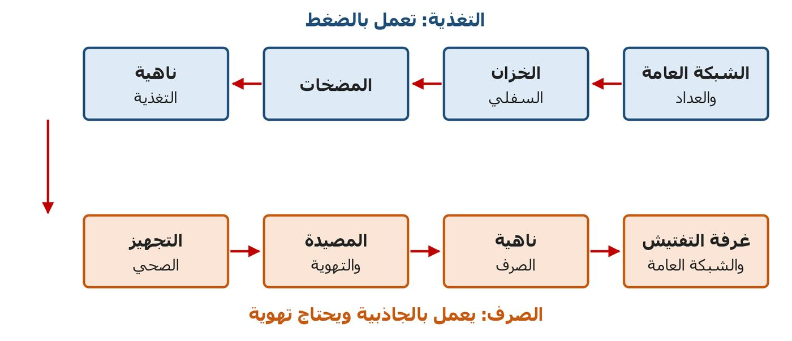
شكل 1 مخطط مسار الماء في المبنى: كل مربع يقابله فراغ أو عنصر معماري يجب أن يظهر في المسقط
شرح الشكل 1 مربعاً مربعاً
يُقرأ الشكل من اليمين إلى اليسار في صفين: الصف العلوي هو جانب التغذية، ويعمل بالضغط. والصف السفلي هو جانب الصرف، ويعمل بالجاذبية. والمربع الذي يلتقي عنده الصفان هو التجهيز الصحي.
الشبكة العامة والعداد: نقطة دخول الماء إلى قطعة الأرض. يقابلها في المسقط غرفة أو كوة عداد على حد الملكية، يصل إليها موظف المياه من الشارع دون دخول المبنى.
- الخزان السفلي: مخزون يغطي انقطاع الشبكة العامة. يقابله غرفة خزانات في البدروم أو الدور الأرضي، بحجرتين في المستشفى. يحدد حجمه مساحة الغرفة وارتفاعها.
- المضخات: ترفع الماء وتعطيه الضغط اللازم. يقابلها غرفة مضخات ملاصقة للخزان، بعيدة عن غرف المرضى والفصول بسبب الضوضاء والاهتزاز.
- ناهية التغذية: الطريق الرأسي الذي يصعد فيه الماء إلى الطوابق. يقابلها فراغ رأسي مغلق بباب صيانة يتكرر في الموقع نفسه في كل طابق. نشرحها بالتفصيل أدناه.
- التجهيز الصحي: نقطة الاستعمال، مثل المغسلة والمرحاض والدش وحوض المطبخ ومشرب الماء. يقابله الفراغ الرطب: الحمام أو المطبخ أو غرفة الغيار.
- المصيدة والتهوية: سدادة ماء تحت كل تجهيز تمنع رائحة الصرف، وماسورة تهوية تحميها. تظهر في المسقط كماسورة رأسية صغيرة داخل جدار الحمام أو الناهية.
- ناهية الصرف: الطريق الرأسي الذي ينزل فيه الصرف بالجاذبية. يجب أن تكون ملاصقة للفراغ الرطب مباشرة، ومتطابقة رأسياً حتى الدور الأرضي.
- غرفة التفتيش والشبكة العامة: نقطة خروج الصرف من المبنى إلى الشبكة. يقابلها في مسقط الموقع غرف تفتيش (مناهل) في مسار مستقيم، يمكن الوصول إليها.
خلاصة: التغذية «تدفع» الماء إلى الأعلى بالضغط، فهي مرنة في المسار. والصرف «يسقط» بالجاذبية، فهو صارم في المسار. لذلك نحدد موقع ناهية الصرف أولاً، ثم نضع ناهية التغذية بجوارها.
ناهية التغذية: ما هي، وماذا فيها، وأين تضعها؟
ناهية التغذية (Water Supply Shaft) فراغ رأسي مغلق يمتد من غرفة الخزانات والمضخات حتى السطح، وتصعد فيه مواسير المياه إلى الطوابق. وفي كل طابق يخرج منها فرع أفقي قصير يغذي الفراغات الرطبة في ذلك الطابق. هي عند المعماري فراغ له أبعاد وباب وجدران، تماماً مثل بيت الدرج أو بئر المصعد، وليست خطاً على المخطط.
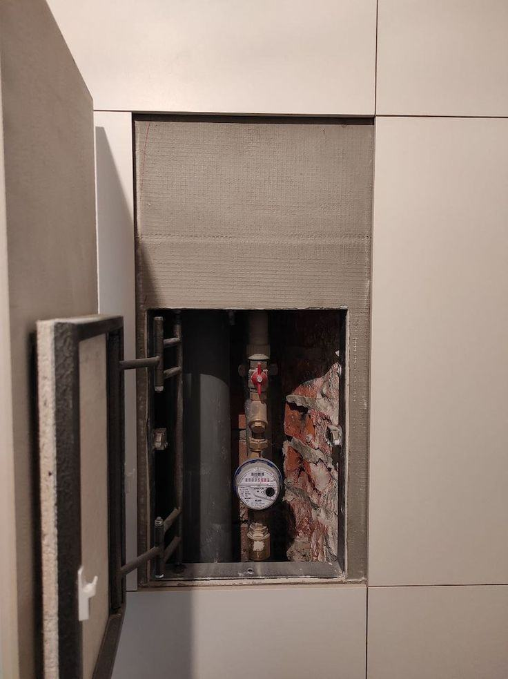
محتويات ناهية التغذية النموذجية:
- صاعد المياه الباردة (Cold Water Riser).
- صاعد المياه الساخنة وماسورة التدوير العائدة، إذا كان التسخين مركزياً (الفصل الخامس).
- محابس (صمامات) عزل على كل فرع طابق، لإغلاق الماء عن طابق واحد دون إيقاف المبنى كله.
- صمامات تخفيض الضغط في الطوابق السفلية من المبنى المرتفع، وعدادات فرعية في بعض المباني.
- عزل حراري للمواسير الساخنة، وأحياناً للباردة منعاً للتكثف.
أما صاعد الحريق فيوضع غالباً في ناهية مستقلة أو داخل بيت الدرج المحمي حسب كود الحريق المحلي، ولا يُخلط بمياه الشرب.
ضوابط موقع ناهية التغذية للمعماري:
- ملاصقة للفراغات الرطبة: كلما قصر الفرع الأفقي من الناهية إلى الحمام، قل فقد الضغط وقلّت المواسير في السقف المستعار. وفي الماء الساخن يقل كذلك الماء الراكد الذي تنمو فيه البكتيريا.
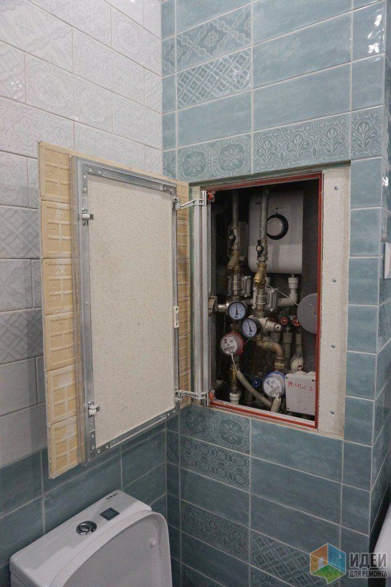
- بجوار ناهية الصرف لا داخلها، أو مشتركة معها بفصل واضح: يمكن جمعهما في ناهية مختلطة، بشرط أن تكون مواسير الماء أعلى من مواسير الصرف عند التقاطع ومفصولة عنها، حتى لا يصل تسرب الصرف إلى ماء الشرب (الفصل الثالث عشر).
- متطابقة رأسياً من الأسفل إلى الأعلى: تبدأ فوق غرفة المضخات أو قريباً منها، وتصعد في الموقع نفسه في كل طابق دون إزاحة.
- بعيدة عن الكهرباء: لا توضع داخل ناهية الكهرباء أو غرفة اللوحات ولا ملاصقة لها دون فاصل، فتسرب الماء على اللوحات خطر حريق وصعق.
- الوصول من الممر أو غرفة الخدمة: يكون باب الصيانة على الممر أو داخل غرفة خدمات، ولا يكون داخل غرفة مريض أو فصل دراسي. فالمحابس يجب أن تُغلق في دقائق عند أي تسرب.
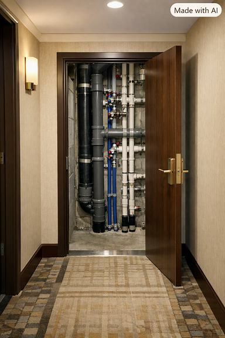
أبعاد تتسع للعمل: العمق يكفي للمواسير وعزلها والمحابس، ومعها مسافة يقف فيها الفني. ارسمها بأبعاد حقيقية بالتنسيق مع مهندس الصحي، ولا تقدّرها بالنظر. وكقاعدة مرجعية (BS 8313): إذا كانت الناهية يدخلها الفني فلا يقل فراغ العمل الصافي فيها عن 60 × 75 سم، ولا يقل بابها عن 60 × 140 سم. التفاصيل في جدول أبعاد الناهيات بالفصل العاشر.
في المستشفى تُخصص غالباً ناهية تغذية لكل جناح أو منطقة. بذلك يمكن عزل جناح كامل للصيانة أو للتطهير الحراري من الليجيونيلا دون إيقاف بقية المستشفى، وتكون أبوابها على ممر الخدمة. وفي المدرسة تكفي عادةً ناهية واحدة ملاصقة لكتلة الحمامات في كل جناح، وبابها في غرفة عامل النظافة أو على الممر، لا في الفصل.
خلاصة: ناهية التغذية هي «بيت الدرج» الذي يصعد فيه الماء. نضعها حيث يحتاجها الحمام، ونفتح بابها حيث يصل إليها الفني، ونبعدها عن الكهرباء.
قواعد ذهبية للمعماري
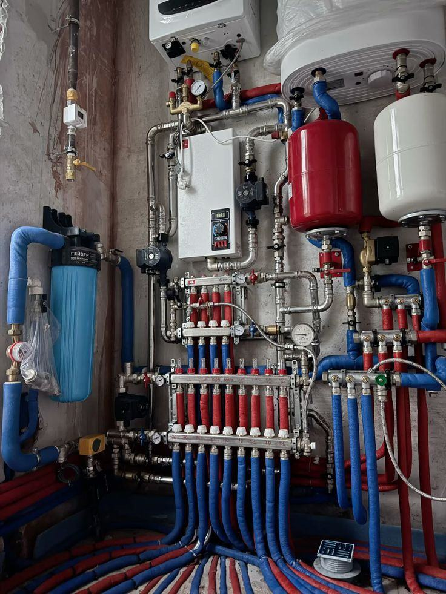
الصرف يحدد موقع الفراغ الرطب، لا التغذية.- اجمع الفراغات الرطبة حول نواة واحدة، وكرّرها رأسياً في الموضع نفسه.
- ارسم المقطع قبل اعتماد المسقط: ميل الصرف يجب أن يثبت على الورق.
- كل صمام أو نقطة تنظيف أو مضخة تحتاج وصولاً من فراغ عام لا من غرفة مستخدم.
- أي رقم في التصميم مصدره الكود المحلي المعتمد، والمراجع الأخرى للفهم والمقارنة.
صورة 1 – توضح طريقة توزيع المياه الساخنة الباردة في مجمع سكني – تقنية حديثة
الفصل الثاني: الأكواد المرجعية — لا كود موحدًا، ولماذا نحتاج الأكواد
لماذا الأكواد؟
الكود ليس قيدًا إداريًا على التصميم، بل خلاصة دروس مكلفة: أوبئة الكوليرا التي دفعت إلى شبكات الصرف المغلقة، وحالات الليجيونيلا التي فرضت حدود حرارة الماء، وحرائق انتقلت عبر فتحات المواسير. ويؤدي الكود للمعماري أربع وظائف:
- حماية الصحة والسلامة: يحدد الحد الأدنى الذي لا يجوز التصميم دونه، مثل ميل الصرف، وحماية المصائد، والفصل بين ماء الشرب والصرف.
- لغة مشتركة: يتفاهم بها المعماري والمهندس الصحي والمقاول والجهة المرخِّصة، فيصبح «1% لقطر 100 مم» معلومة لا رأيًا.
- إطار قانوني للمسؤولية والترخيص: الالتزام بالكود المعتمد شرط للترخيص، وهو المرجع عند الخلاف أو الضرر.
- ذاكرة مهنية: ينقل خبرة عشرات السنين إلى مصمم شاب لم يرَ الخطأ بعينه.
لا يوجد كود موحد
تتفق الأكواد كلها على الهدف: ماء آمن يصل بضغط كافٍ، وصرف يخرج دون أن يعيد الروائح أو التلوث إلى المبنى. لكنها تختلف في طريقة الحساب ووحداته. والكود الدولي نموذج (Model Code) لا يصبح ملزمًا إلا إذا تبنته دولة أو جهة، بنصه أو بتعديلات. لذلك يُعرَّف «الكود المعتمد» في عقد كل مشروع، ولا يُفترض.
معظم الأكواد العربية لم تُكتب من الصفر، بل بُنيت على أحد ثلاثة أصول: الكود الدولي للسباكة IPC، أو كود السباكة الموحد UPC، وكلاهما أمريكي، أو المواصفات الأوروبية والبريطانية BS EN. أما الكود المصري فله منظومته الخاصة.
النتيجة العملية: «وحدة الحمل» في كود لا تساوي «وحدة الحمل» في كود آخر. قيمة DFU في IPC، ووحدة التصريف DU في BS EN 12056، ووحدة التجهيز في UPC، طرق مختلفة لتقدير التدفق. لا تأخذ رقمًا من جدول كود وتطبقه على جدول كود آخر.
الأكواد العربية والمراجع الإقليمية
- مصر: الكود المصري لأسس تصميم وشروط تنفيذ التركيبات الصحية في المباني (كود 301)، الصادر عن المركز القومي لبحوث الإسكان والبناء. من أجزائه: التركيبات الصحية للمباني (2003)، والتغذية بالمياه ومعالجة الصرف في التجمعات الصغيرة (1999)، والتغذية بالمياه الساخنة وحمامات السباحة (2005). ويُستكمل للمستشفيات بـ«المعايير التصميمية للمستشفيات والمنشآت الصحية».
- السعودية: كود السباكة السعودي SBC 701، ومعه كود الصرف الصحي الخاص SBC 702. بُني على IPC، ويتبع إصدار 2024 منه ترقيم IPC نفسه: 704 لتركيب الصرف، و708 لنقاط التنظيف، و710 للأقطار.
- الإمارات – دبي: كود دبي للبناء DBC 2021. جزؤه الخاص بالتغذية بالمياه والصرف مبني على المواصفات البريطانية والأوروبية BS EN. وللمنشآت الصحية أدلة هيئة الصحة بدبي DHA.
- الإمارات – أبوظبي: كود السباكة الموحد لأبوظبي (UPC-AD، 2009)، المبني على UPC 2006، ويُقرأ مع كود البناء الدولي لأبوظبي ADIBC.
- قطر: مواصفات البناء القطرية QCS 2024، التي حلت محل إصدار 2014. وهي مواصفات تنفيذ أكثر منها كود تصميم.
- الأردن: كودات البناء الوطني الأردني، ومنها كود التصريف الصحي وكود تزويد المباني بالمياه.
حين لا يكون في البلد كود ملزم للتمديدات
في بلدان كثيرة، ومنها ليبيا، يُحدَّد المرجع في كراسة الشروط أو من الجهة المالكة أو الاستشاري: الكود المصري، أو المواصفات البريطانية، أو IPC. القاعدة هنا ألا يُخلط كودان في حساب واحد، وأن يُكتب اسم الكود وإصداره على اللوحات. وفي هذه المحاضرة نستخدم IPC 2024 والمواصفات البريطانية لأن نصوصهما متاحة للتحقق، ونذكر الكود المصري للمقارنة.
الأعراف السائدة: ما لا يكتبه الكود
إلى جانب الكود توجد أعراف متداولة في المنطقة تؤثر في المسقط مباشرة. هي ليست اشتراطات كود، لكن تجاهلها يجعل التصميم غريبًا عن مستخدميه أو صعب التشغيل:
- الخزان العلوي: مع التغذية المتقطعة صار الخزان على السطح عرفًا شبه ثابت، فيدخل في الحمل الإنشائي ومسقط السطح والواجهة.
- الشطّاف والمصرف الأرضي: وصلة شطاف بجوار كل مرحاض، ومصرف أرضي في كل حمام، وكلاهما يفرض تغذية إضافية وميلًا في البلاط.
- اتجاه المرحاض: يُراعى ألا يكون المرحاض في اتجاه القبلة ولا مستدبرًا لها، وهذا يُحسم في المسقط قبل الناهية.
- أماكن الوضوء: في المدارس والمستشفيات والمباني العامة تُخصص أماكن وضوء بمقاعد ومصارف قنوات، وهي فراغ رطب يُحسب مع النواة الخدمية.
- الفصل بين الجنسين: كتل حمامات منفصلة للبنين والبنات، وللمعلمين والطلاب، وبمداخل لا تتقابل.
ترتيب الرجوع إلى المراجع
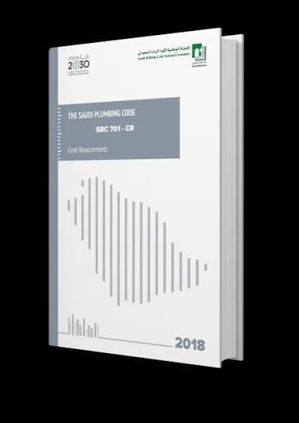
على المهندس أن يعتمد على الترتيب التالي. وقد تم اعتماده في جميع الفصول في هذه المحاضرة، ونرجع إلى المستوى التالي فقط إذا سكت المستوى الذي قبله:- الكود المحلي المعتمد في بلد المشروع، أو المرجع المحدد في العقد، وهو الملزم قانونيًا.
- دليل الجهة المالكة أو المشغلة: وزارة الصحة للمستشفيات، ووزارة التعليم أو هيئة الأبنية التعليمية للمدارس.
- الأصل الدولي الذي بُني عليه الكود المحلي (IPC أو UPC أو BS EN)، لفهم سبب الاشتراط.
- المعايير المتخصصة للمستشفيات، مثل أدلة FGI الأمريكية، وHTM 04-01 البريطاني لسلامة المياه، وNFPA 99.
- الأعراف السائدة، بشرط ألا تخالف ما سبق.
صورة 2- كتاب الكود السعودي للصرف الصحي
الفصل الثالث: النواة الخدمية وتجميع الفراغات الرطبة
الفكرة: الصرف يرسم المسقط
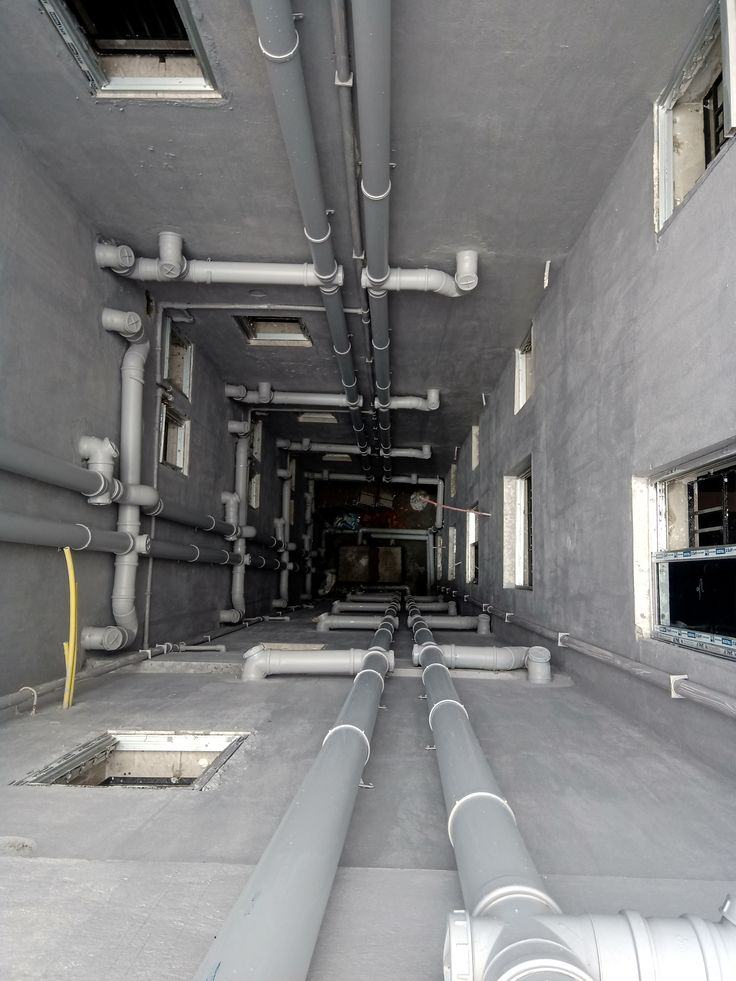
الفراغ الرطب هو كل فراغ فيه تجهيز يصرف ماء: حمام، ومطبخ، ومغسلة يد، ومختبر، وغرفة عامل نظافة. القاعدة الأولى أن تُجمع هذه الفراغات حول ناهية واحدة، وأن تتكرر رأسياً فوق بعضها في كل الطوابق. عندها يصبح خط الصرف الأفقي قصيراً، ويهبط مباشرة في الناهية دون أن يعبر سقف فراغ آخر.في المدارس يكون التجميع سهلاً نسبياً لأن الحمامات كتل مستقلة. أما في المستشفيات فكل غرفة مريض تقريباً فيها حمام ومغسلة، فيتحول الجناح كله إلى «فراغ رطب موزع»، ويصبح تنظيم التكرار هو الحل الوحيد للسيطرة على الشبكة.
لماذا نجمّع الفراغات الرطبة؟
التجميع ليس تفضيلاً في الشكل، بل يخفض أربعة بنود في وقت واحد:
- طول الشبكة: كل فرع أفقي إضافي يعني ماسورة أطول في السقف، وميلاً يُنزل السقف أكثر، ووصلات أكثر قد تتسرب.
- الماء الساخن: كلما طال الفرع بين السخان والصنبور بقي الماء البارد في الخط قبل وصول الساخن، ونشأ ماء راكد تنمو فيه البكتيريا (الفصل الخامس).
- التهوية: الأجهزة المتجاورة على جدار واحد تشترك في ماسورة تهوية، بدل ماسورة لكل جهاز (الفصل السابع).
- الكلفة والصيانة: صواعد ومحابس وفتحات تنظيف أقل، وإصلاح أسرع لأن الأجهزة المتقاربة تُخدم من نقطة واحدة.
كيف تقيس التجميع في المسقط؟
قبل اعتماد المسقط، راجع أربعة أمور:
- عدد الصواعد: الهدف صاعد واحد لكل نواة خدمية، وكل صاعد إضافي يُبرَّر.
- بعد أبعد جهاز عن الناهية: يُقاس على المسقط، ويُحسم مع المهندس الصحي حسب الكود المعتمد.
- عدد الجدران الرطبة: كلما قل عدد الجدران التي تحمل أجهزة وتتصل بالناهية، قلّت الشبكة المخفية.
- تطابق الناهيات رأسياً: هل تقع الناهية في الموضع نفسه في كل طابق؟ إن لم تقع، تصبح كل إزاحة خط صرف يعبر سقفاً.
خلاصة: تُقاس النواة الجيدة بعدد الصواعد والوصلات، لا بعدد الحمامات. وإذا تعارض التجميع مع الواجهة أو مع الفصل بين الجنسين، فالحل قرار معماري في المسقط يُتخذ قبل أن يصل الأمر إلى الصرف.
ماذا تقول الأكواد
لا يحدد أي كود موقع الحمام، لكنه يفرض شروطاً تجعل الموقع البعيد مكلفاً أو غير ممكن:
- ميل أدنى لخطوط الصرف الأفقية، فكل متر إضافي يعني نزولاً إضافياً في السقف (الفصل السادس).
- مسافة قصوى بين مصيدة التجهيز ونقطة التهوية (الفصل السابع).
- نقاط تنظيف يمكن الوصول إليها على الخطوط الأفقية وعند تغيير الاتجاه (IPC 2024، البند 708).
- منع مرور شبكات السباكة داخل بئر المصعد أو غرفة معداته (IPC، البند 301.6، ويتبعه SBC 701).
وفي المستشفيات تضيف أدلة التصميم شرطاً معمارياً مباشراً: محطة غسل يدين داخل غرفة المريض أو عند مدخلها، إضافة إلى مغسلة الحمام. ورد ذلك في أدلة FGI، ويُراجع في المعايير التصميمية المصرية للمستشفيات وأدلة وزارة الصحة المحلية.
التطبيق في المستشفى: حمامات «ظهراً لظهر»
جناح تمريض من 24 غرفة مفردة. الحل الأكفأ أن يكون حماما كل غرفتين متجاورتين على الجدار المشترك جهة الممر، وبينهما ناهية واحدة يُفتح بابها على الممر. يتكرر هذا الزوج على طول الجناح فنحصل على 12 ناهية قصيرة بدلاً من شبكة أفقية طويلة فوق سقف الممر، وهو سقف مزدحم أصلاً بمجاري التكييف والغازات الطبية وحوامل الكابلات.
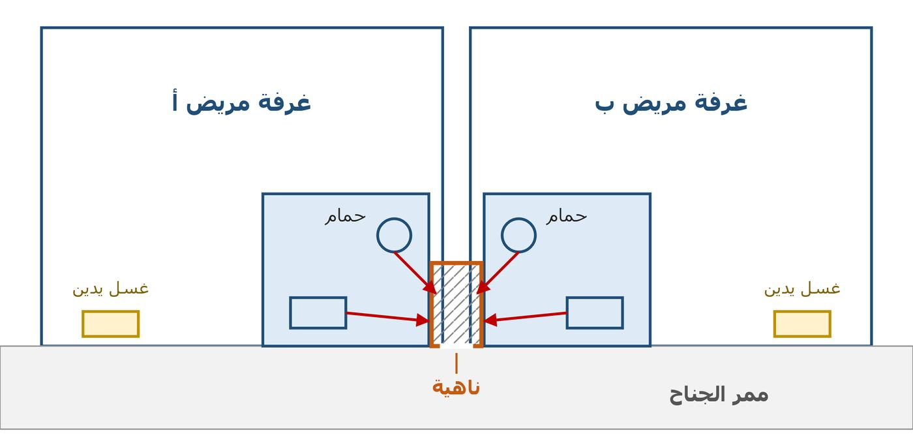
شكل 2 مسقط جزئي: حماما غرفتين متجاورتين على الجدار المشترك وناهية واحدة يُفتح بابها على الممر
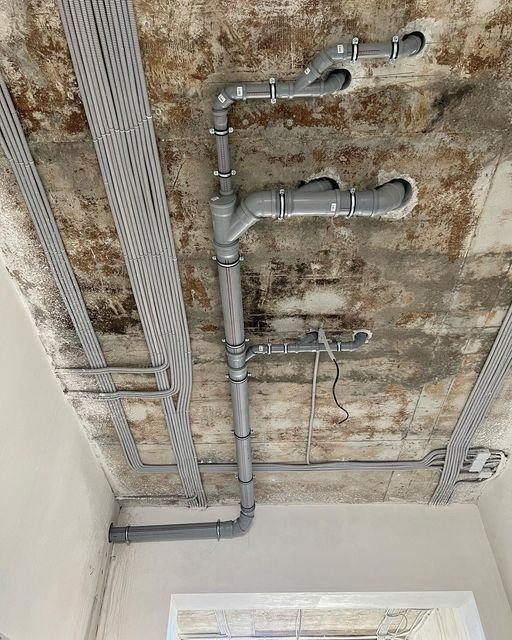
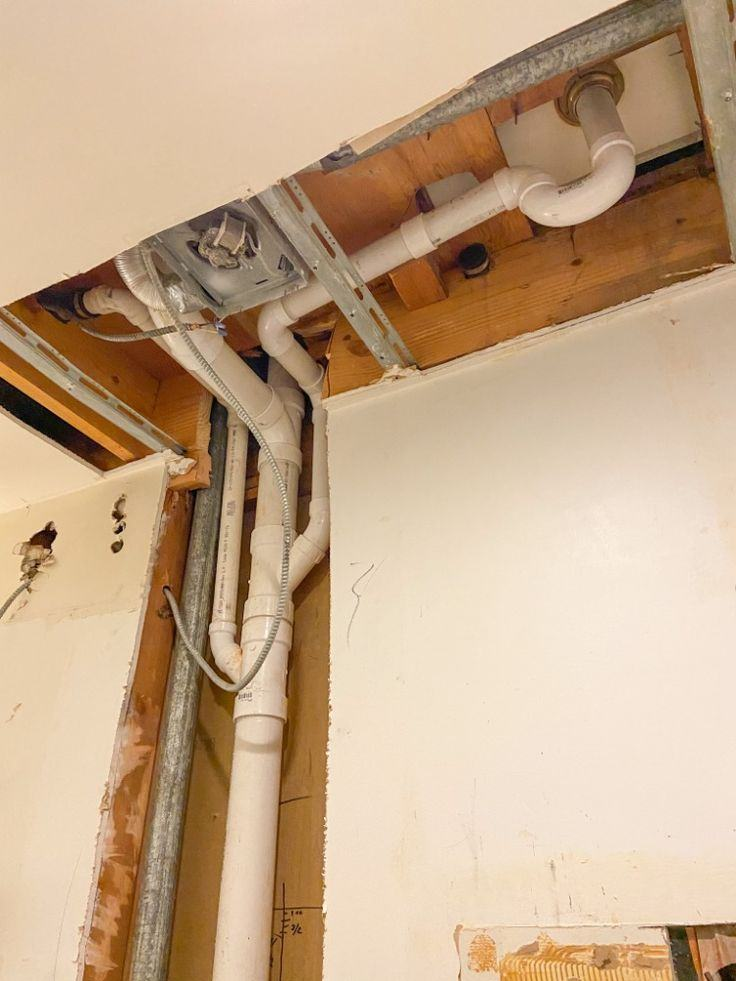
التطبيق في المدرسة: كتلة حمامات متطابقة رأسياً
في مدرسة من ثلاثة طوابق توضع كتلة حمامات واحدة في كل طابق عند التقاء جناحي الفصول، فوق بعضها تماماً حتى السطح، وتلاصقها غرفة عامل النظافة بحوضها الأرضي وباب الناهية. أي إزاحة لحمام طابق علوي عن الحمام الذي تحته، ولو بضعة أمتار، تعني خط صرف أفقياً يعبر سقف فصل دراسي، مع ما يتبعه من خفض للسقف وخطر تسرب فوق الطلاب.
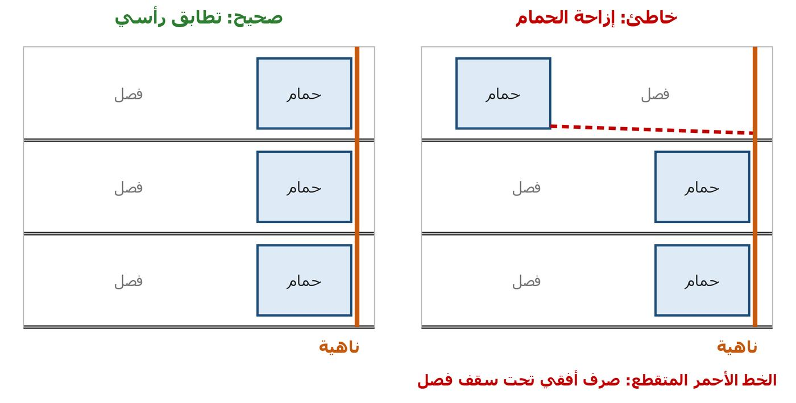
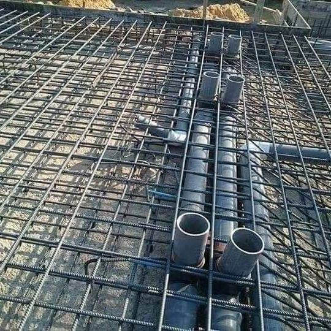
شكل 3 مقطع رأسي: كتلة حمامات متطابقة عبر الطوابق مقابل حمام منزاح يمرر الصرف تحت سقف فصلصورة 3- صور تجميع صرف صحي
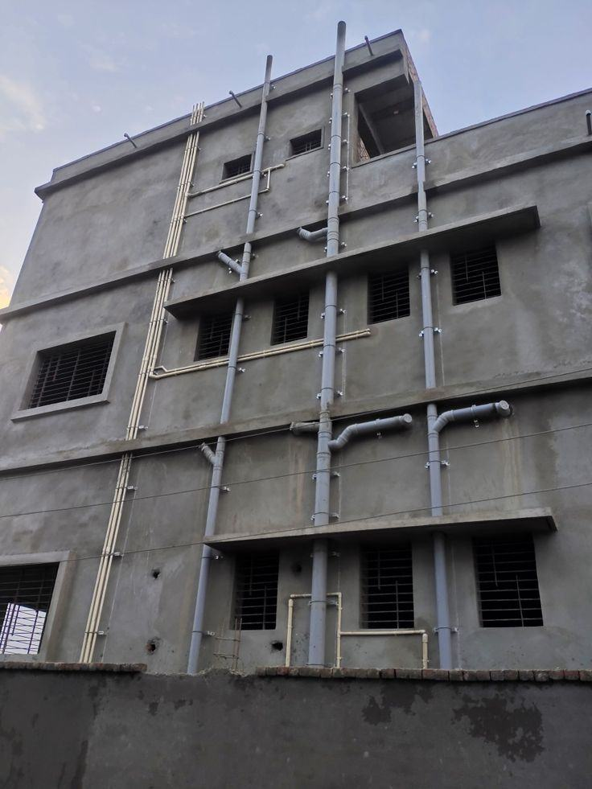
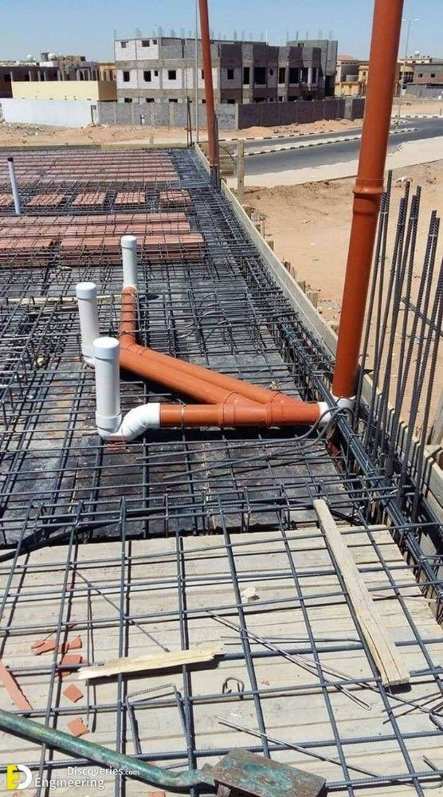
الفصل الرابع: التغذية بالمياه — الضغط والخزانات والمضخات
الفكرة: ضغط كافٍ في الأعلى وغير زائد في الأسفل
صورة 4- مرحاض بصمام فلاش
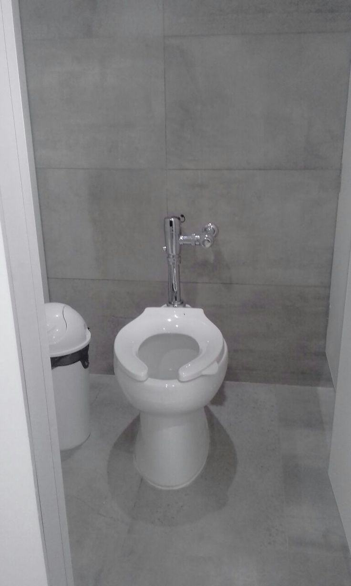
يحتاج كل تجهيز صحي حداً أدنى من الضغط ليعمل: المغسلة تكتفي بضغط منخفض، أما المرحاض بصمام دفق (فلاش) فيحتاج ضغطاً أعلى بكثير. وفي المقابل، الضغط الزائد في الطوابق السفلية يسبب الضجيج وتلف الخلاطات والطرق المائي. لذلك يُصمم النظام بحيث تحصل أبعد نقطة وأعلاها على الحد الأدنى، ولا تتجاوز أدنى نقطة الحد الأقصى.وفي المستشفى يضاف بُعد ثالث: الاستمرارية. انقطاع الماء عن غرف العمليات أو وحدة الغسيل الكلوي أو التعقيم المركزي خطر سريري لا إزعاج. لذلك يصبح التخزين والضخ الاحتياطي جزءاً من التصميم لا تحسيناً اختيارياً.
مثال يوضح الفكرة: مبنى من عشرة طوابق يرتفع نحو 30 م فوق الخزان السفلي. الماء الذي يصل إلى الطابق الأعلى يحتاج ضغطاً يرفعه 30 م، أي نحو 3 بار، قبل أن تُحسب خسائر الاحتكاك في المواسير والوصلات. فإذا ضُخّ الماء بهذا الضغط نفسه، وصل الطابق الأرضي بضغط أعلى بثلاثة بار تقريباً مما يحتاجه، وقد يتجاوز الحد الأقصى المسموح به في الكود المعتمد.
والحل أن يُقسَّم المبنى إلى مناطق ضغط: كل منطقة تأخذ ضغطها من مضخة أو خزان خاص بها، أو تُخفَّض عند حدودها بصمام تخفيض الضغط. بذلك تبقى أعلى نقطة فوق الحد الأدنى المطلوب، ولا تتجاوز أدنى نقطة الحد الأقصى.
ماذا تقول الأكواد
يضع الكود السعودي SBC 701، ومن قبله IPC، حداً أدنى لضغط التدفق عند كل نوع من التجهيزات، وحداً أقصى للضغط الساكن إذا تجاوزه وجب تركيب صمام تخفيض ضغط، وهو في IPC 2024 (البند 604.8) 80 psi، أي نحو 5.5 بار. ولكل من الكود المصري 301 وكود أبوظبي جداوله الخاصة بالضغوط ومعدلات الاستهلاك. ويحدد دليل التغذية بالمياه الصادر عن دائرة الطاقة في أبوظبي معدلات الاستهلاك للمباني، وقد نقل الخزان الأرضي والمضخات والخزان العلوي إلى نطاق كود السباكة.
جدول: الحد الأدنى لضغط التدفق عند التجهيزات
التجهيز | الحد الأدنى لضغط التدفق (IPC 2024، جدول 604.3) | الأثر المعماري |
|---|---|---|
مغسلة يد، ودش، وحوض مطبخ | 8 psi ≈ 55 kPa | تعمل حتى من خزان علوي قريب، لكنها تتأثر بفرق المنسوب في الطابق الأخير |
مرحاض بخزان طرد | 20 psi ≈ 138 kPa | الخيار الشائع في المدارس والسكن |
مرحاض بصمام دفق (فلاش) | 35 psi (سيفوني) إلى 45 psi (نفث) ≈ 241–310 kPa | يحتاج مضخات تعزيز وقطر تغذية أكبر، وشائع في المستشفيات والمباني العامة |
دش بصمام خلط حراري | 20 psi ≈ 138 kPa | مهم في حمامات المرضى والمدارس الابتدائية |
المصدر: IPC 2024 — الفصل 6، الجدول 604.3 والبند 604.8
وللمستشفيات تفاصيل أدق. تشترط أدلة المنشآت الصحية عادة، ومنها أدلة هيئة الصحة بدبي DHA، أن يكون الخزان مقسّماً إلى حجرات، لكل حجرة صمام عزل عند المدخل والمخرج ووصلة تصريف في القاع، وتحدد سرعات قصوى للمياه في المواسير. تُؤخذ القيم من نسخة الدليل المعتمدة. وتتضمن المعايير التصميمية المصرية للمستشفيات فصلاً لخزانات وطلمبات مياه الشرب ومكافحة الحريق.
تقدير الاستهلاك اليومي: مثال سكني
لا يُقدَّر الاستهلاك من مساحة المبنى، بل من عدد المستخدمين ومعدل استهلاك الفرد: الاستهلاك اليومي = عدد المستخدمين × معدل الفرد. لنأخذ عمارة من 20 شقة بمتوسط 4 أفراد في الشقة، فعدد السكان 20 × 4 = 80 فرداً. وبافتراض تعليمي مقداره 150 لتراً للفرد في اليوم، يُستبدل بقيمة الكود المحلي، يكون الاستهلاك 80 × 150 = 12,000 لتر في اليوم، أي 12 م³.
لا يعني ذلك أن سعة الخزان 12 م³. فالسعة تحددها مدة الانقطاع المحتملة للمصدر، واحتياطي التشغيل، ونوع الإشغال، وفصل خزان الحريق عن خزان الاستخدام إذا اشترطت الجهة المختصة ذلك. والمتوسط اليومي وحده لا يكفي: فالمدرسة تبلغ ذروتها في الفسحة، والمستشفى يستهلك ليلاً ونهاراً، ولذلك تعتمد الحسابات النهائية على وحدات التجهيزات واحتمال الاستخدام المتزامن. ويُطبَّق المبدأ نفسه على المدرسة في الفصل السادس عشر.
حساب خزان الخدمة خطوة بخطوة
نتابع المثال السكني (80 فرداً، و12 م³ يومياً) لنصل إلى أبعاد الخزان. الافتراضات هنا تعليمية، والقيم النهائية تأتي من الكود المحلي وجهة المياه.
الخطوة الأولى، حجم الاستهلاك: Q_d = 12 م³ في اليوم، كما حسبناه أعلاه.
الخطوة الثانية، أيام التخزين: نفترض يوماً واحداً يغطي انقطاع المصدر. الحجم الأساسي = 12 × 1 = 12 م³.
الخطوة الثالثة، معامل الاحتياط: نضرب في 1.15 لتعويض التبخر والتسرب وخطأ التقدير، فيصبح الحجم المطلوب 12 × 1.15 = 13.8 م³.
الخطوة الرابعة، عمق الماء والقاع: نختار عمق ماء نافعاً 2.0 م، فتكون مساحة القاع المطلوبة 13.8 ÷ 2.0 = 6.9 م².
الخطوة الخامسة، تقسيم الخزان: نقسمه إلى حجرتين متساويتين، فتُنظَّف إحداهما دون قطع الماء عن المبنى. كل حجرة 1.75 × 2.0 م قاعاً، وحجمها 7.0 م³. الإجمالي 14.0 م³، وهو أكبر من 13.8 م³ المطلوبة.
الخطوة السادسة، الارتفاع: عمق الماء 2.0 م، يضاف إليه فراغ حر نحو 0.3 م أعلى الماء لمنع الفيض، وسماكة القاع والسقف والعزل، فيصبح الارتفاع الداخلي نحو 2.4 م.
الخطوة السابعة، المساحة: الحجرتان متجاورتان بعرض 3.5 م وعمق 2.0 م، ويضاف ممر صيانة 0.6 م على كل جانب طويل، فتصبح غرفة الخزان نحو 3.5 × 3.2 م، وتُلحق بها غرفة المضخات.
الخطوة الثامنة، المضخة: إذا أردنا إعادة ملء الخزان في 8 ساعات، فالتدفق المطلوب = 13.8 ÷ 8 ≈ 1.7 م³ في الساعة، أي نحو 0.5 لتر في الثانية. وتُختار المضخة بهذا التدفق والضاغط الذي تحدده حسابات الفصل الرابع.
الخطوة التاسعة، الوزن: الماء وحده نحو 14 طناً، فيحتاج القاع والبلاطة الحاملة إلى تصميم إنشائي، ولا يوضع الخزان على بلاطة لم تُصمَّم لذلك.
يختلف هذا عن مثال المدرسة في الفصل السادس عشر، لأن المدرسة تحسب يومين من التخزين وفق مدة الانقطاع المحتملة. خلاصة الحساب: يبدأ من عدد المستخدمين وينتهي بالفراغ والوزن والمضخة، وكل قيمة في الطريق تُراجع مع الكود المحلي قبل اعتماد الأبعاد.
أنظمة التغذية الثلاثة وأثرها على المبنى
- التغذية المباشرة من الشبكة العامة: أبسطها، ولا تحتاج خزانات، لكنها لا تصلح إذا كان ضغط الشبكة منخفضاً أو متقطعاً، وهو الوضع الغالب في كثير من المدن العربية.
- خزان سفلي ومضخة إلى خزان علوي: التوزيع بالجاذبية من السطح. يحتاج سطحاً قادراً على الحمل، ويكون الضغط ضعيفاً في الطابق الأخير تحت الخزان مباشرة.
- خزان سفلي ومضخات تعزيز (هيدروبنيوماتيك): ضغط ثابت دون خزان علوي كبير، لكنه يحتاج غرفة مضخات ومصدر كهرباء احتياطياً، وهو الشائع في المستشفيات والمباني المرتفعة.
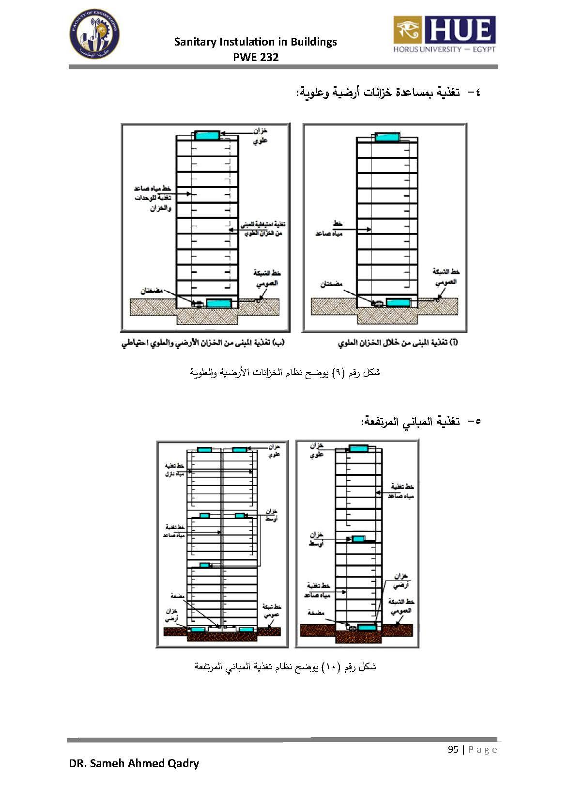
في المبنى المرتفع تُقسم الشبكة إلى مناطق ضغط، لكل منطقة عدد محدد من الأدوار ومضخاتها أو صمامات تخفيض الضغط الخاصة بها. وأثر ذلك على المعماري أنه يحتاج غرفة مضخات وسيطة أو مساحة لصمامات التخفيض في الناهية عند حدود كل منطقة.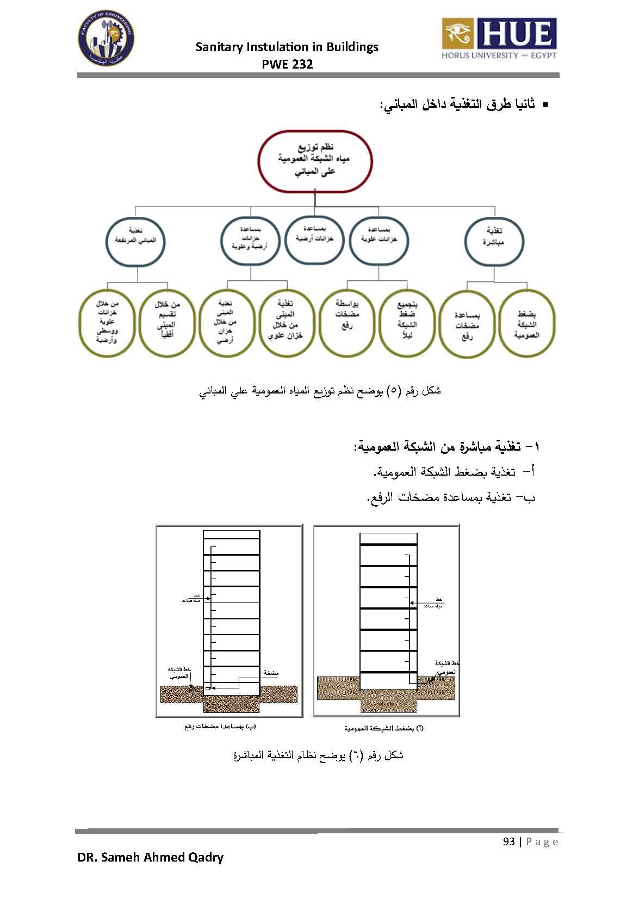
النظام | المزايا | العيوب | الاستخدام الأمثل |
|---|---|---|---|
مباشر من الشبكة | بسيط، لا يحتاج خزانات | غير مناسب عند ضعف الضغط أو انقطاع المياه | مبانٍ منخفضة في مدن ذات ضغط قوي |
خزان علوي بالجاذبية | توزيع طبيعي، يعمل أثناء انقطاع الكهرباء | يحتاج سطح قوي، ضغط ضعيف في الطابق الأخير | مدارس، مبانٍ متوسطة |
هيدروبنيوماتيك | ضغط ثابت، لا يحتاج خزان علوي | يحتاج غرفة مضخات وكهرباء احتياطية | مستشفيات، أبراج مرتفعة |
الخزان العلوي مقابل التعزيز: الخزان العلوي يضمن الماء عند انقطاع الكهرباء، لكنه يحتاج صمامات تخفيض لتجنب الضغط العالي والضجيج. وتذكر مراجع أخرى عيوبه: ضعف الضغط في الأدوار العليا، والمساحة، وخطر النمو الميكروبي.leonardpowers+1
الأنظمة المضغوطة: إن الأنظمة المقسّمة إلى مناطق أرخص وأكفأ من الخزان العلوي على مدى 20 عاماً. وهذا تقرير من شركة مصنّعة للمضخات،
عموماً: «يُحدَّد عدد الأدوار في كل منطقة بنطاق الضغط المسموح (نحو 1.5 إلى 4.5 بار)، ويقابل كل 10 أمتار ارتفاعاً نحو 1 بار».
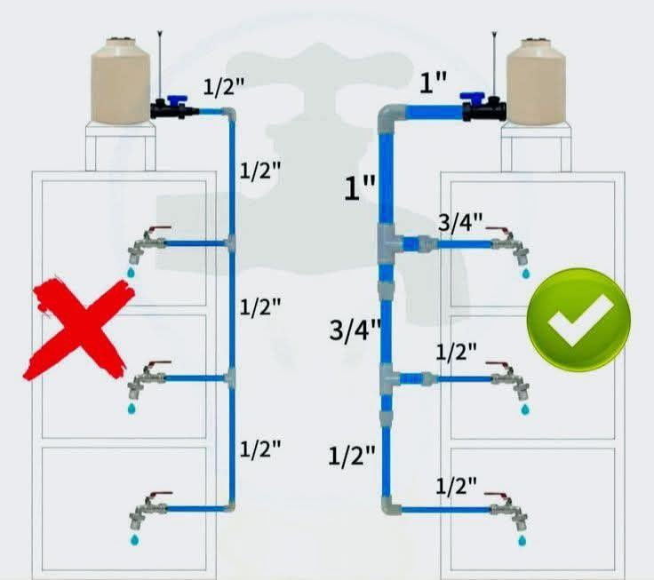
رسم توضيحي 1- أقطار الأنابين المناسب لتوزيع ضغط متساوي بين الطوابق
الطرق المائي: صدمة الضغط عند الإغلاق السريع
المطرقة المائية في المضخات | Water Hammer in Pumps
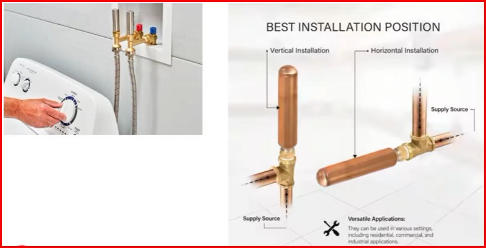
الطرق المائي ارتفاع مفاجئ في الضغط يحدث حين يتوقف جريان الماء بسرعة، كما عند إغلاق صمام دفق أو صمام كهربائي أو خلاط حساس. يظهر على هيئة صوت طرق واهتزاز في المواسير، ومع الزمن يجهد الوصلات والمثبتات. يعالجه المصمم بتحديد سرعة الماء في المواسير، وتثبيتها جيداً، وتركيب مانع للطرق المائي (Water Hammer Arrestor) قرب الأجهزة سريعة الإغلاق، وهو ما يشترطه IPC.
وأثر ذلك على المعماري أن مانع الطرق يحتاج موقعاً يمكن الوصول إليه خلف باب صيانة، لا خلف سقف جبسي مغلق. ولا تمر المواسير الرئيسية بجانب جدار خفيف أو غرفة حساسة للصوت إلا بعد تثبيتها وعزلها.
لماذا يحدث الصوت؟ حين يُغلق الصمام فجأة يتوقف عمود الماء المتحرك، فيرتفع الضغط عند الصمام وتنتقل موجة الضغط إلى الأعلى في الماسورة بسرعة قريبة من سرعة الصوت في الماء، أي أكثر من 1400 م/ث، فيُسمع الطرق كأنه يحدث في الشبكة كلها دفعة واحدة.
كيف تقلّل الخطر؟ بخفض سرعة الماء في المواسير، إذ تنصح بعض جداول تحديد الأقطار بألا تتجاوز السرعة نحو 1.5 م/ث، وبتخفيض ضغط التغذية من الشبكة بمنظم، وباستخدام صمامات إغلاق بطيء أو صمامات بلا ارتداد تُغلق دون الاعتماد على الجريان.
متى يُشترط المانع؟ يشترط IPC، في البند 604.9، تركيب مانع للطرق المائي حيث تُستخدم صمامات الإغلاق السريع، ويُركَّب وفق تعليمات الشركة المصنعة ومطابقاً للمواصفة ASSE 1010، ويُفضَّل أن يقع قرب الصمام الذي يسبب الطرق. وتختلف الجهات المحلية في تفصيل ما يُعدّ صمام إغلاق سريع، فيُرجع إليها.
ملاحظة للمعماري: تنص أدلة بعض الشركات على أن الوصول إلى المانع ليس شرطاً، لكن الممارسة تنصح بإمكان فحصه، لأن المانع قد يتسرب مع الزمن ويحتاج صيانة. لذلك يُترك له باب صيانة أو يُوضع في مكان ظاهر أو قابل للفتح.
المصادر: IPC 2021، البند 604.9؛ ASPE، Plumbing 101: Water Hammer؛ ويكيبيديا، Hydraulic shock.
التطبيق في المستشفى: الرايزر وغرفة الخزانات
في مستشفى من ستة أدوار يدخل خط الشبكة العامة عبر العداد إلى خزان سفلي بحجرتين، حتى يمكن تنظيف إحداهما دون قطع المياه. ويخصص للحريق خزان أو حجرة منفصلة. تسحب مجموعة مضخات (تشغيل واحتياط) من الخزان وتغذي الرايزر الرئيسي، وتركّب صمامات تخفيض الضغط عند الأدوار السفلية. وتوضع غرفة المضخات بعيداً عن غرف المرضى والعمليات، أو تعزل صوتياً وضد
الاهتزاز.
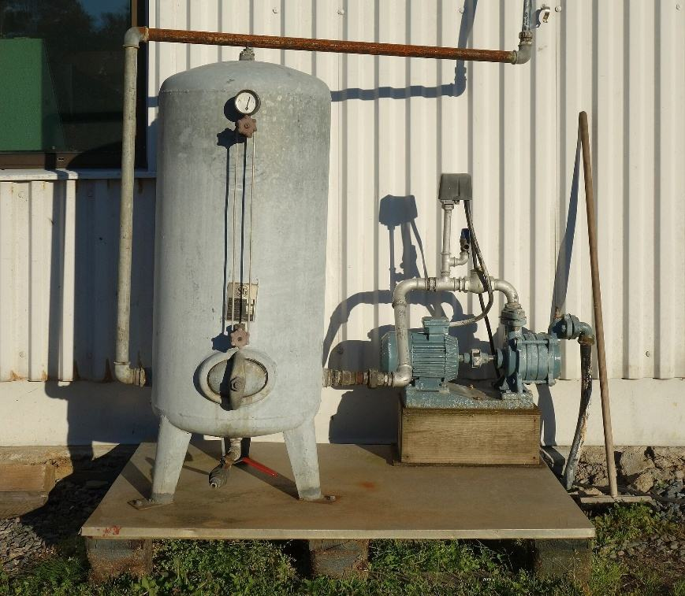
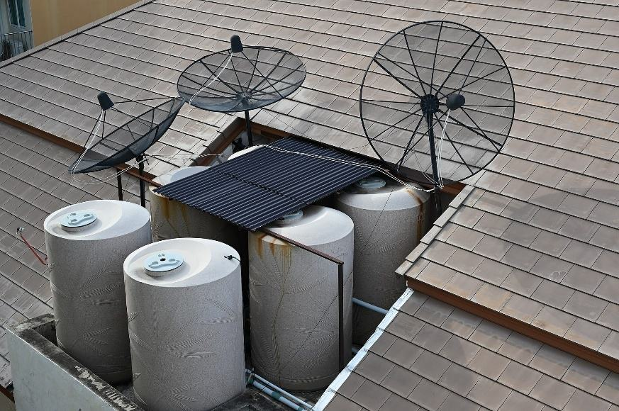
شكل 4 خزان ضغط (هيدروفور) موصول بمضخة: المبدأ نفسه في منظومة التعزيز الهيدروبنيوماتيكية للمبانيشكل 5 خزانات مياه على سطح مبنى سكني بجوار أطباق الاستقبال
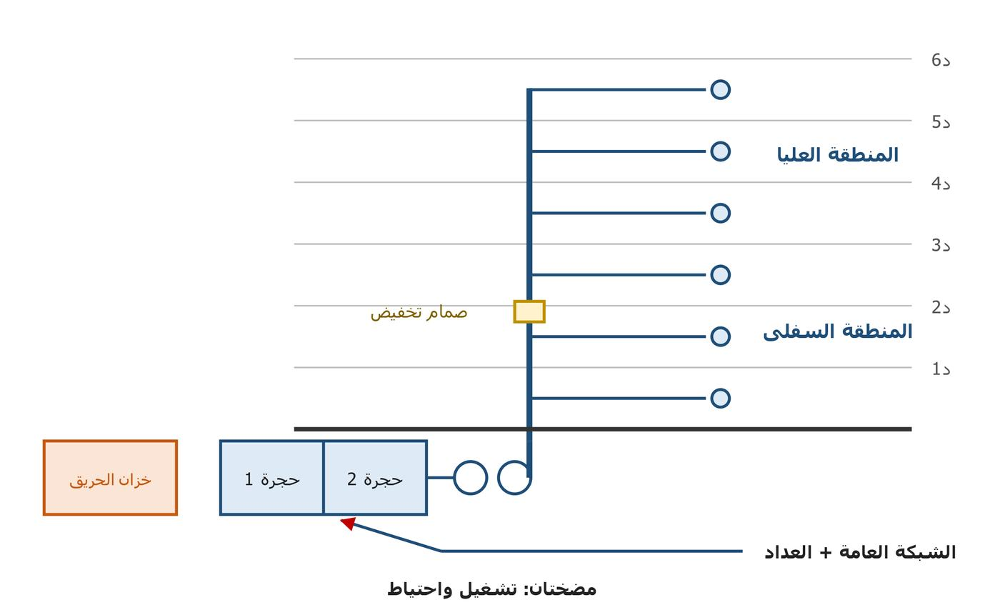
شكل 6 رايزر التغذية لمستشفى: خزان سفلي بحجرتين، ومضختا تشغيل واحتياط، ومنطقتا ضغط، وخزان حريق منفصل
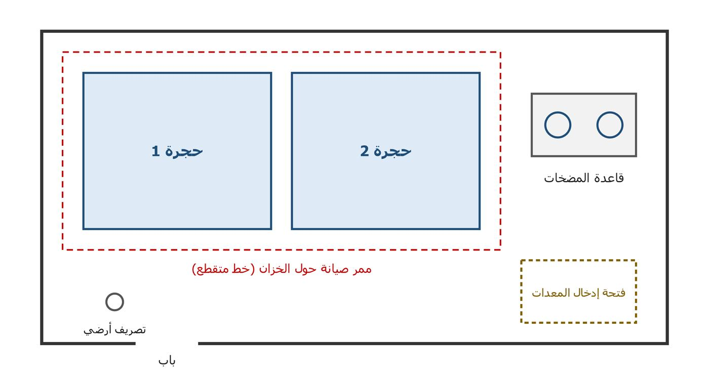
شكل 7 مسقط غرفة الخزانات والمضخات: حجرتان مع ممرات صيانة، وقاعدة المضخات، ومسار إدخال المعدات وإخراجها
أسئلة يطرحها المعماري على المهندس الصحي قبل اعتماد المسقط
ضغط التغذية: ما الضغط المتاح من الشبكة عند نقطة الدخول، وهل هو ثابت أم متقطع؟ الجواب يحدد هل نحتاج خزاناً ومضخات أم تكفي التغذية المباشرة.
نقطة الدخول: أين العداد والصمام الرئيسي، وهل يصل إليهما موظف الجهة المزودة دون دخول المبنى؟
الصواعد: كم صاعداً يخدم المبنى، وهل يقع كل منها في الموضع نفسه من الطابق الأول حتى السطح؟
الخزان: ما سعته ومدة تخزينه، وهل حمله الإنشائي مُدرج في تصميم البلاطة؟
الساخن: هل التسخين مركزي أم موضعي؟ وما طول أطول فرع بين السخان ونقطة الاستعمال، وهل يحتاج خط رجوع؟
الصيانة: أين تقع فتحات التنظيف ومانعات الطرق المائي وصمامات العزل، وهل يصل إليها الفني دون تكسير؟
الخزانات العلوية والسفلية في المستشفيات والمدارس
ما الجديد الذي يهم المهندس المعماري؟
مقدمة
لم يعد الخزان في المستشفيات والمدارس مجرد حاوية للمياه تُوضع حيث يتسع المكان. صار عنصراً يؤثر في ثلاثة قرارات معمارية في آن واحد: الفراغ (أين يوضع وكم يأخذ من المسقط)، والإنشاء (ما وزنه وعلى ماذا يرتكز)، وصحة المياه (كيف نمنع ركودها وتلوثها). تعرض هذه الفقرة أهم التقنيات الحديثة في الخزانات، مع تصحيح بعض الادعاءات الشائعة عنها، وربطها بمشاريع منفذة فعلاً.
1. لماذا المستشفيات والمدارس حالة خاصة؟
- لا يُسمح بانقطاع المياه: العمليات والتعقيم وغسيل الأيدي في المستشفى، ودورات المياه لمئات الطلبة في المدرسة.
- سلامة المياه حرجة: المياه الراكدة أو الدافئة بيئة لنمو بكتيريا الليجيونيلا (Legionella)، والمرضى أكثر عرضة للعدوى.
- الفراغ محدود: أقبية المستشفيات مزدحمة بالمولدات والأنابيب، وكثير من الأعمال تكون في مبانٍ قائمة تعمل أثناء التنفيذ.
2. التقنيات الحديثة في الخزانات
2.1 الخزانات المودولارية والأشكال المرنة (L و U)
في التصميم التقليدي كان الخزان يحتاج مساحة مستطيلة أو مربعة صلبة، مما يضيع مساحات الحركة في الأقبية. بفضل نظام الألواح المودولارية أصبح بالإمكان تصميم الخزان على شكل حرف L أو U يلتف حول الأعمدة الإنشائية أو غرف الخدمات، فيُستغل الفراغ دون التأثير على التوزيع المعماري.
ما يجب أن ينتبه له المعماري: الشكل المرن مقيّد بموديول اللوح (عادة 1×1 م)، فأبعاد الخزان تكون مضاعفات له. كما يحتاج الخزان فراغاً للفحص والتركيب حوله وتحته، لأنه يُرفع على قواعد (Plinths) تحت خطوط الوصلات. هذا الفراغ جزء من المسقط ويجب حسابه من البداية.
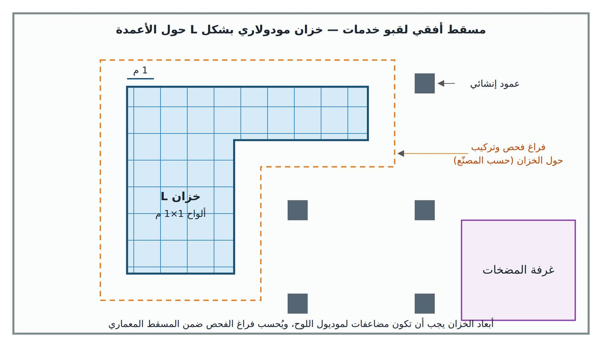
شكل 1: مسقط تخطيطي لخزان مودولاري بشكل L حول أعمدة القبو، مع فراغ الفحص حوله
2.2 الألواح المعزولة مسبقاً (Pre-insulated Panels)
تُصنع الألواح بنظام الشطيرة (Sandwich Panel): طبقة من عازل البولي يوريثان (PU) بين طبقتين من الـ GRP، تُحشى في المصنع. يغني ذلك عن أعمال العزل في الموقع، ويقلل اكتساب الحرارة في الخزانات العلوية المكشوفة لأشعة الشمس، وهو أمر مهم في مناخنا الحار.
تصحيح مهم: العزل يبطئ اكتساب الحرارة فقط، ولا يحافظ على برودة المياه إلى ما لا نهاية. إذا كان تجديد المياه بطيئاً تصل في النهاية إلى حرارة المحيط. الضابط الحقيقي ضد الليجيونيلا هو عدم المبالغة في سعة الخزان وتجديد المياه بسرعة، مع إبقاء المياه الباردة دون 20°م، ووضع الدخول والخروج في ركنين متقابلين حتى لا تتكون مناطق راكدة.
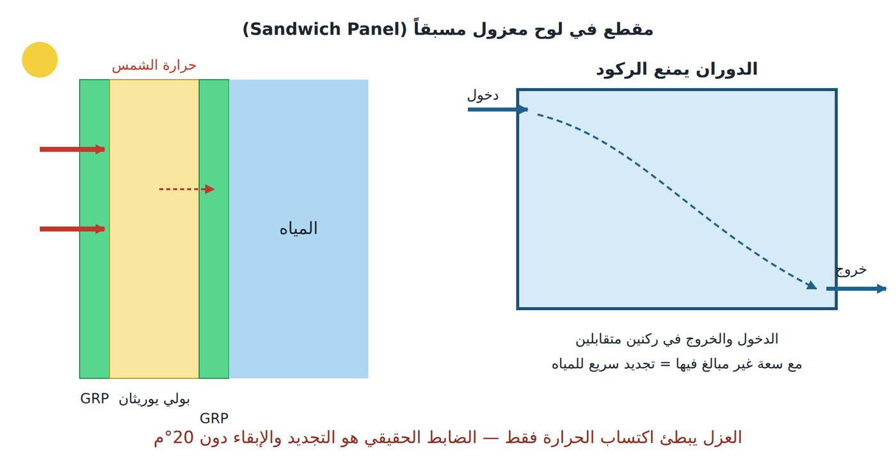
شكل 2: مقطع في لوح معزول مسبقاً، ومبدأ تجديد المياه داخل الخزان
2.3 التدعيم الخارجي بدل قضبان الشد الداخلية
كانت الخزانات المودولارية القديمة تعتمد على شبكة من قضبان الشد الداخلية (Internal Tie Rods) لتحمّل ضغط المياه. هذه القضبان تتآكل لأنها مغمورة في المياه، وتعيق أعمال التنظيف والتطهير. الحل الحديث هو التدعيم الخارجي (Externally Reinforced System) بهيكل من الحديد المجلفن على الساخن يحيط بالخزان، فيبقى الداخل أملس تماماً وسهل التنظيف، وهي ميزة مهمة جداً في المستشفيات.
تصحيح مهم: الهيكل الخارجي مصمم لمقاومة الضغط الهيدروستاتيكي، ولا يعني ذلك أن الخزان مقاوم للزلازل تلقائياً. التصميم الزلزالي مسألة مستقلة: يشمل الضغط الهيدروديناميكي بمركّبتيه الاندفاعية والتموجية (Sloshing) وفق ACI 350.3 أو Eurocode 8-4، إضافة إلى تثبيت الخزان في البلاطة. هذا عمل المهندس الإنشائي، لكن على المعماري أن يعرف أنه مطلوب.
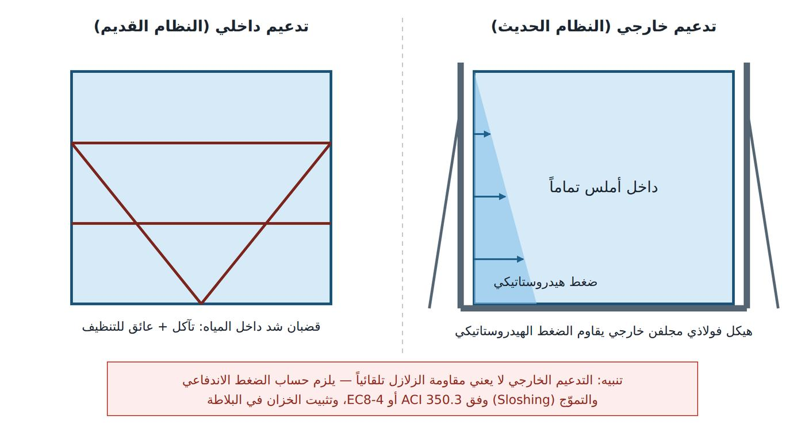
شكل 3: مقارنة بين التدعيم الداخلي القديم والتدعيم الخارجي الحديث
2.4 الخزان ذو الحجرتين (Dual Compartment)
بدل خزانين منفصلين، تسمح ألواح الـ GRP ببناء جدار داخلي فاصل من المادة نفسها يقسم الخزان إلى حجرتين مستقلتين بصماماتهما. تُفرَّغ إحداهما وتُنظَّف بينما تغذي الأخرى المبنى، فلا تنقطع المياه أثناء الصيانة الدورية.
تصحيح مهم: هذا الحل لا يقلل الفراغ إلى النصف كما يُقال أحياناً، لأن السعة المخزنة نفسها لا تتغير. الوفر الحقيقي في جدار واحد مشترك بدل جدارين، وفي ممرات الوصول والتمديدات، وهو أقل بكثير من 50%.
مثال منفذ: في مشروع مستشفى نفّذته شركة FTC Tanks، رُكّب خزان طوارئ بسعة 50,000 جالون (نحو 190 م³) في القبو الثاني، بحجرتين يمكن تنظيف إحداهما بينما تبقى الأخرى جاهزة، مع تصريف كامل رغم أنه مخصص للطوارئ فقط. دخلت الألواح عبر الدرج والأبواب، وهذا ما لا يمكن مع خزان خرساني يُصب في قبو قائم.
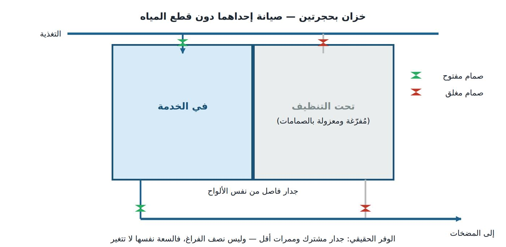
شكل 4: خزان بحجرتين: حجرة في الخدمة وأخرى معزولة بالصمامات للتنظيف
3. ثلاثة مشاريع حقيقية ودروسها المعمارية
3.1 الاستبدال المرحلي دون قطع المياه — مستشفى جامعة كورك (أيرلندا)
مستشفى بسعة 800 سرير وأكثر من 20 قسماً، وخزانه القديم بعمر نحو 40 عاماً ومقام فوق برج بمساحة محدودة جداً. نُفّذ الاستبدال على مراحل: رُكّب الخزان الجديد الأول بجوار القديم وهو لا يزال يغذي المستشفى، ثم وُصّل وتولى التغذية، ثم فُكّ القديم ورُكّب الثاني مكانه. استُخدم خزانان معزولان من GRP بأبعاد 7×3.5×3 م، ولم تكن هناك حاجة لخزان مؤقت.
الدرس: في المستشفيات، فكرة المرحلية (Phasing) أهم من نوع المادة نفسها. والخزان المودولاري هو ما يجعلها ممكنة لأنه يُبنى قطعة قطعة.
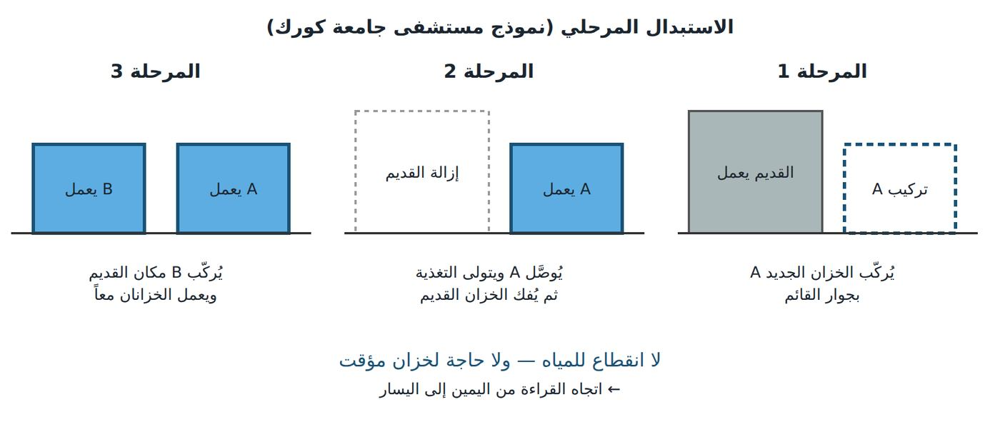
شكل 5: مراحل الاستبدال دون انقطاع المياه
3.2 خزانات الحريق الأرضية الجاهزة — مستشفى في النمسا
رُكّبت 4 خزانات أرضية من البولي إيثيلين (Graf Carat XXL) بسعة 56,000 لتر لكل منها، أي 224 م³ لمياه الإطفاء. وصلت الخزانات إلى الموقع بوصلاتها وملحقاتها مركّبة في المصنع، ومنها مدخنة تهوية من الستانلس مقاومة للحريق مع شبك ضد الحشرات، ويمكن تركيبها في منسوب مياه جوفية حتى منتصف ارتفاعها.
الدرس: فصل مياه الحريق عن مياه الشرب في خزانات مستقلة يقلل ركود مياه الشرب. وكل ما يُجهَّز في المصنع يقلل زمن العمل داخل منشأة لا تتوقف. ملاحظة إنشائية: الخزان الأرضي في منطقة مياه جوفية يجب التحقق من طفوه وهو فارغ.
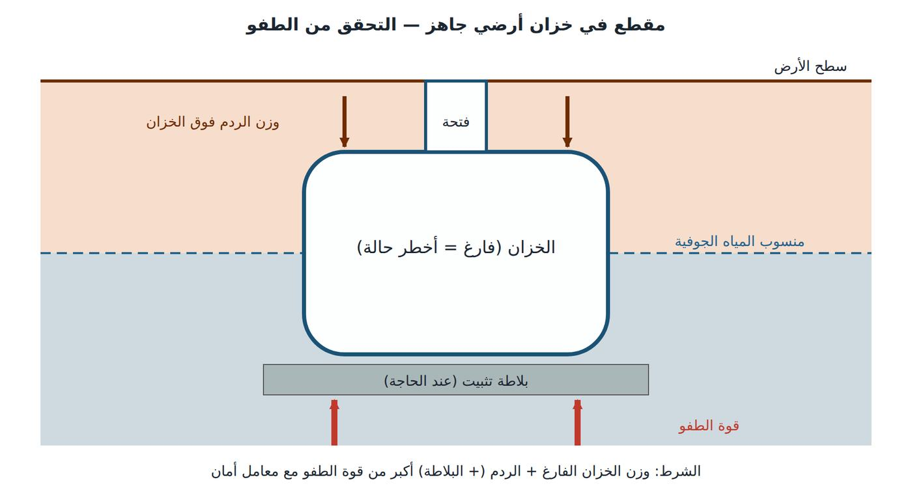
شكل 6: مقطع تخطيطي في خزان أرضي: قوى الطفو مقابل وزن الردم وبلاطة التثبيت
3.3 حصاد الأمطار الذكي في المدارس
مدرسة St Joseph's في إكسموث (بريطانيا): خزان بسعة 15 م³ يجمع مياه سطح مساحته نحو 500 م² لتغذية صناديق طرد المراحيض. الخزان مزوّد بمراقبة ذكية (IoT) ويمكن تفريغه عن بُعد قبل العواصف، فيعمل للتخزين ولتأخير السيول معاً، ووفّر نحو 5000 لتر من مياه الشرب أسبوعياً.
مدرسة Therrell الثانوية في أتلانتا (الولايات المتحدة): لضيق غرفة الميكانيكا، صُمم النظام بخزان رئيسي كبير (80,000 جالون) وخزان يومي صغير (500 جالون) داخل الغرفة، مع ترشيح وتعقيم بالأشعة فوق البنفسجية، بهدف خفض استهلاك مياه الشرب في الطرد بنسبة 50%.
الدرس: فكرة الخزان الكبير خارج المبنى + خزان يومي صغير داخله (Day Tank) حل معماري ذكي لضيق الفراغ. لكنها تفرض شبكتين منفصلتين للمياه، تُميَّز أنابيب المياه غير الصالحة للشرب بلون مختلف، وتُغذّى احتياطياً من مياه الشرب عبر فجوة هوائية تمنع التلوث العكسي. هذا يظهر في المخططات من التصميم المبدئي.
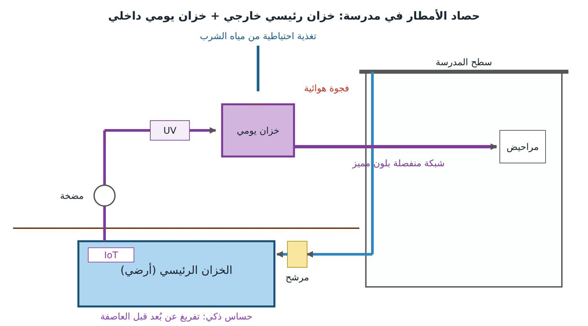
شكل 7: مخطط حصاد الأمطار في مدرسة: خزان رئيسي أرضي وخزان يومي داخلي وشبكة منفصلة
4. الخزان العلوي والإنشاء: رقم يجب أن يعرفه المعماري
خزان واحد بأبعاد 7×3.5 م وعمق مياه 3 م يحمل نحو 73.5 م³، أي قرابة 735 kN من وزن المياه وحدها. وعمق المياه 3 م يعني ضغطاً يقارب 30 kN/m² على البلاطة، بينما الحمل الحي لسطح عادي يتراوح بين 1.5 و2 kN/m² تقريباً، أي أن الخزان يعادل نحو 15 ضعف ما صُمم له السطح العادي.
القاعدة: يُحدَّد موقع الخزان العلوي بالتنسيق مع المهندس الإنشائي فوق خطوط الكمرات والأعمدة، ولا يُترك حيث يتسع المكان في السطح.
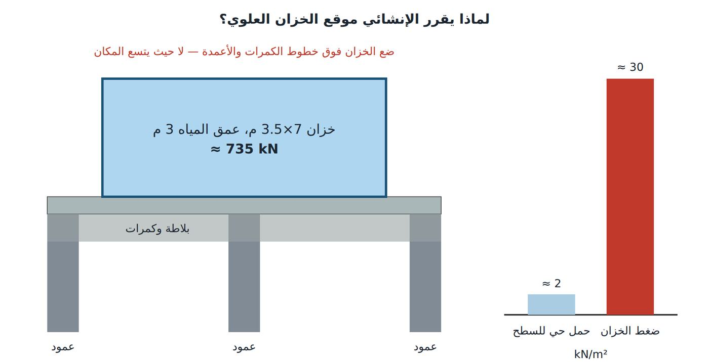
شكل 8: مقارنة ضغط الخزان العلوي بالحمل الحي للسطح
5. جدول مقارنة بين مواد الخزانات
المادة | الوزن الذاتي | النظافة الداخلية | التركيب في مبنى قائم | الاستخدام النموذجي |
|---|---|---|---|---|
خرسانة مسلحة | مرتفع جداً | يحتاج تبطيناً معتمداً لمياه الشرب، والشروخ نقطة ضعف | صعب: صب وشدات | الخزانات الأرضية الكبيرة وخزانات الحريق |
ألواح GRP مودولارية | منخفض | جيدة، ويُفضَّل النوع المعزول | ممتاز: الألواح تمر من الأبواب | الخزانات العلوية والقبو في المستشفيات والمدارس |
ألواح ستانلس مودولارية | منخفض إلى متوسط | ممتازة | ممتاز | مياه الشرب الحرجة في المستشفيات |
بولي إيثيلين جاهز (أرضي) | منخفض | جيدة | سريع بالرافعة، مع التحقق من الطفو | خزانات الحريق وحصاد الأمطار |
6. قائمة تحقق للمعماري عند تصميم الخزانات
- هل حُسب فراغ الفحص والتركيب حول الخزان وتحته ضمن المسقط؟
- هل أبعاد الخزان مضاعفات لموديول اللوح المختار؟
- هل تسمح الأبواب والدرج بإدخال الألواح، خصوصاً في المباني القائمة؟
- هل الخزان مقسوم إلى حجرتين أو أكثر لضمان الصيانة دون انقطاع؟
- هل السعة مناسبة للاستهلاك الفعلي، دون مبالغة تسبب ركود المياه؟
- هل خزانات الحريق منفصلة عن خزانات الشرب؟
- هل نُسّق موقع الخزان العلوي مع الإنشائي فوق الكمرات والأعمدة؟
- في حال حصاد الأمطار: هل الشبكة المنفصلة والفجوة الهوائية ظاهرة في المخططات؟
7. الحلول الذكية في أنظمة المياه
يشهد قطاع التغذية بالمياه ثورة تكنولوجية تهدف إلى الاستدامة، منع الهدر، والتحكم الذكي الفوري:
1. منظومات كشف التسريب الذكية عبر إنترنت الأشياء (IoT Smart Leak Detection): تركيب حساسات صوتية وحساسات تدفق وضغط متصلة سحابياً، قادرة على رصد أدنى تسريب وتفعيل صمامات الإغلاق الآلي (Automatic Shut-off Valves) خلال ثوانٍ لمنع تلف البنية التحتية.
2. مضخات التدوير الذكية وخوارزميات الذكاء الاصطناعي: تعمل على دراسة أنماط استخدام القاطنين وتشغيل خطوط تدوير المياه الساخنة قبل الطلب بلحظات، مما يمنع هدر آلاف اللترات من المياه الباردة أثناء الانتظار.
3. أنابيب البوليمرات المتقدمة (PEX-A & PPR-CT): استبدال خطوط الأنابيب المعدنية المعرضة للصدأ والتكلس بأنابيب بوليمرية مرنة ومقاومة للحرارة والضغوط العالية وذات عزل حراري فائق وعمر افتراضي يتجاوز 50 عاماً.
4. التجهيزات الصحية اللاتلامسية الذكية: تركيب صنابير وسيفونات تعمل بالأشعة تحت الحمراء وخلايا استشعار كهروضوئية، مما يوفر أكثر من 40% من المياه ويحقق أعلى اشتراطات مكافحة العدوى في المدارس والمستشفيات.
5. تكامل إدارة المباني والعدادات الرقمية (BMS Integration): ربط شبكات المياه بنظام إدارة المبنى المركزي لمراقبة الضغوط وجودة المياه وتدفقاتها لحظياً وجدولة أعمال الصيانة الاستباقية قبل حدوث الأعطال.
الخلاصة
الجديد في الخزانات ليس المادة بحد ذاتها، بل أربعة مفاهيم: المرحلية دون قطع الخدمة، وفصل الوظائف (شرب / حريق / مياه غير صالحة للشرب)، وتحجيم السعة حسب تجديد المياه بدل التخزين الزائد، والمراقبة الذكية. وكلها قرارات تبدأ من المخطط المعماري في المرحلة الأولى.
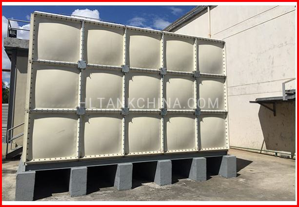
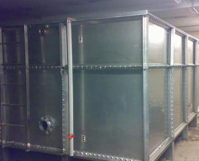
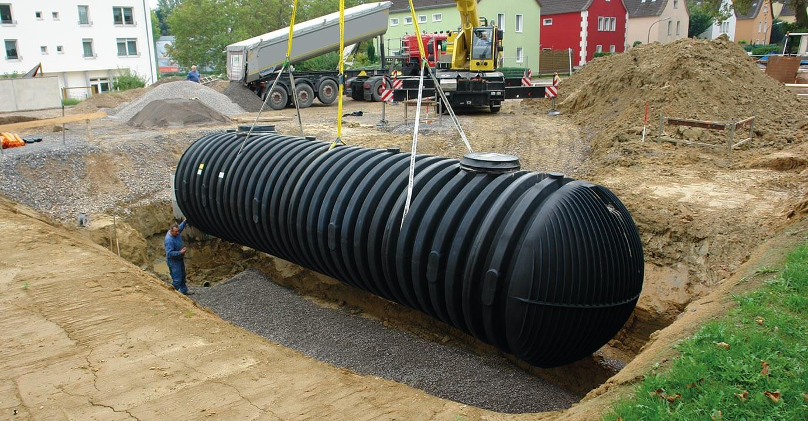
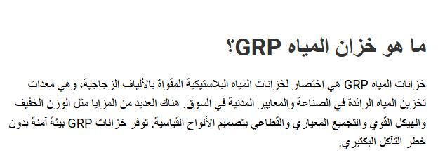
الفصل الخامس: المياه الساخنة وسلامة المياه — الليجيونيلا والحروق
الفكرة: الماء الدافئ الراكد بيئة للبكتيريا
بكتيريا الليجيونيلا تتكاثر في الماء الفاتر، أي بين درجة حرارة الماء البارد الذي سخن وحرارة الماء الساخن الذي برد، وتزدهر حين يركد الماء في خط لا يُستخدم. وتنتقل إلى الإنسان عبر رذاذ الدش والصنابير، وخطرها على مرضى المستشفى ضعيفي المناعة أكبر بكثير منه على الأصحاء. لذلك تقوم سلامة المياه على مبدأين: إبقاء الماء الساخن ساخناً والبارد بارداً، ومنع ركود الماء.
وفي الجهة الأخرى هناك خطر الحروق: الماء الساخن بالقدر الذي يقتل البكتيريا قد يحرق طفلاً في مدرسة أو مريضاً مسناً. والحل صمام خلط حراري قرب نقطة الاستخدام، يخلط الماء الساخن بالبارد ليصل إلى المستخدم بحرارة آمنة.
ماذا تقول الأكواد والأدلة
- الكود المصري 301 خصص جزءه الثالث للتغذية بالمياه الساخنة وحمامات السباحة (2005).
- الكود السعودي SBC 701 يتناول سخانات المياه، وأجهزة التحكم في درجة الحرارة وصماماتها، والأنظمة الشمسية لتسخين المياه.
- الدليل البريطاني HTM 04-01 لسلامة المياه في المنشآت الصحية يعمل بقيم مرجعية شائعة: تخزين الماء الساخن عند 60°م على الأقل، ورجوع دائرة التدوير عند 55°م على الأقل، وإبقاء الماء البارد دون 20°م.
- حدود حرارة الماء عند المستخدم بعد صمام الخلط تختلف بين الأكواد والأدلة: يحدد IPC 2024 الماء المخلوط للمغاسل العامة بما لا يزيد على 43°م، ونحو 41 إلى 44°م قيمة شائعة لأحواض المرضى ودشاتهم.
ما الذي يعنيه ذلك للمعماري؟
- دائرة تدوير: شبكة الماء الساخن في المستشفى خطان لا خط واحد: خط ذهاب وخط رجوع يعيد الماء إلى السخان حتى لا يبرد في المواسير. الخط الثاني يحتاج مساحة في الناهية والسقف.
- لا خطوط ميتة: كل فرع ينتهي بتجهيز نادر الاستخدام يركد فيه الماء. لا تضع مغسلة «احتياطية» لن تُستخدم، وإذا ألغيت تجهيزاً أثناء التنفيذ فاطلب إزالة فرعه من الأصل لا سده فقط.
- صمام الخلط الحراري: يُركب قريباً من نقطة الاستخدام، ويحتاج فتحة صيانة يمكن الوصول إليها من الحمام أو الممر، لأنه يُفحص دورياً.
العزل الحراري: يزيد قطر الماسورة المعزولة بشكل واضح، ويجب احتسابه عند تحديد أبعاد الناهية.
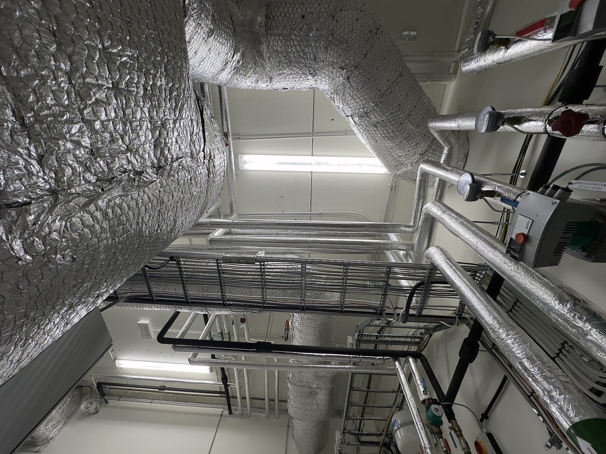
شكل 8 [صورة تنفيذ حقيقية] مواسير ماء ساخن معزولة في غرفة آلات مدرسة بالنرويج (2024)
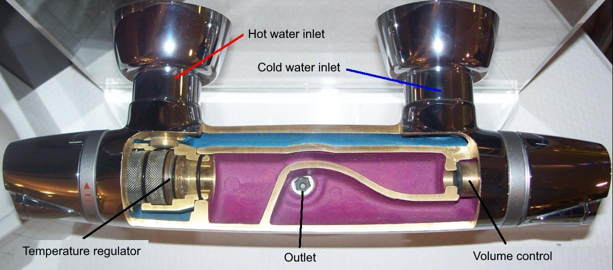
شكل 9 [مخطط تقني من مرجع] قطاع في صمام خلط حراري (TMV): مدخل الساخن والبارد، والعنصر الحراري، ومخرج الماء المخلوط
أنظمة تسخين الماء: خيارات وأثرها على المسقط
تتعدد مصادر الماء الساخن، ولكل مصدر أثر مختلف في الفراغ والوزن والتهوية والصيانة. يُختار النظام مع المهندس الميكانيكي في مرحلة المسقط الأولى، لا بعد اعتمادها:
- السخان الكهربائي التخزيني: خزان معزول يخدم حماماً أو شقة. بسيط ورخيص، لكنه ثقيل عند امتلائه، فيحتاج جداراً حاملاً وصينية تنقيط وصمام أمان ومساراً لاستبداله (الفصل التاسع).
- السخان الفوري (كهربائي أو غازي): يسخن الماء لحظة الطلب دون خزان، فيوفر الحجم والفقد الحراري. الغازي يحتاج مدخنة وهواء احتراق ومكاناً بعيداً عن الفتحات، ولا يوضع داخل حمام مغلق بسبب خطر أول أكسيد الكربون. والكهربائي الكبير يحتاج قاطعاً وكابلاً بمقطع أكبر.
- السخان الشمسي: مجمّع على السطح وخزان معزول مع مصدر كهربائي مساعد للأيام الغائمة. مجدٍ في مناخات ليبيا ومصر والخليج لوفرة الشمس، لكنه يطلب من السطح مساحة موجهة نحو الجنوب بلا ظل، وحملاً إنشائياً، ومساراً لمواسير معزولة إلى الناهية.
- المحطة المركزية بمبادل حراري: غلاية أو مضخة حرارة أو مجمعات شمسية تغذي خزاناً مركزياً ودائرة تدوير، وهي الخيار في المستشفى والفندق. تحتاج غرفة خدمات بارتفاع كافٍ، وتهوية أو مدخنة للغلايات، وصرفاً أرضياً، وعزلاً للصوت والاهتزاز، ومساراً لإخراج الخزان عند استبداله.
الماء البارد في المناخ الحار
قد تسخن مواسير الماء البارد المكشوفة على السطح، وكذلك الخزان العلوي المعرض للشمس، حتى يصل «البارد» دافئاً فيصبح بيئة صالحة لنمو الليجيونيلا. لذلك يُعزل الخزان العلوي ويُظلل وتُغطى مواسيره، ويُبعد الخط البارد عن الساخن في الناهية بمسافة أو عزل، ويُنظَّف الخزان دورياً.
التطبيق في المستشفى والمدرسة
في جناح التمريض يوضع السخان أو المبادل الحراري المركزي في غرفة الخدمات، ويصعد خط الذهاب في الناهية الرئيسية، وتتفرع منه فروع قصيرة إلى كل زوج من الحمامات، ثم يعود خط الرجوع إلى السخان. أما في المدرسة فالحاجة إلى الماء الساخن محدودة غالباً بالمطبخ وغرف الرياضة ومغاسل الأطفال الصغار، ويكفي فيها غالباً تسخين موضعي أو شمسي، بشرط حماية الطلاب من الحروق بصمامات الخلط.
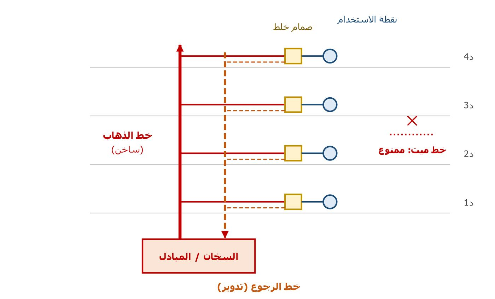
شكل 10 رايزر المياه الساخنة في جناح تمريض: خط ذهاب وخط رجوع للتدوير، وصمام خلط قرب كل نقطة استخدام، ومنع الخطوط الميتة
الجزء الثاني: الصرف والتهوية والتطبيقات والتقنيات
الصرف بالجاذبية والتهوية، والأجهزة وتوزيع الحمام والمطبخ، والناهيات، والمدارس والمستشفيات، والحماية والتنسيق والتنفيذ، والتقنيات الحديثة
الفصل السادس: الصرف بالجاذبية — الميول والأقطار ونقاط التنظيف والسقف المستعار
الفكرة: الماسورة لا تمتلئ
ماسورة الصرف ليست ماسورة ضغط. هي قناة مغلقة يجري الماء في جزئها السفلي ويبقى فوقه هواء. يذكر دليل ASPE أن خطوط الصرف الأفقية تُصمَّم لتجري نحو نصف ممتلئة، حتى لا تتولد تذبذبات في ضغط الهواء داخل الشبكة تسحب ماء المصائد.
ويرتبط الميل بسرعة الجريان. يورد الدليل نفسه في جدوله (Table 1-6) الميل اللازم للوصول إلى «سرعة التنظيف الذاتي» 2 قدم/ث، أي نحو 0.6 م/ث. ولماسورة 4 بوصات نصف ممتلئة يبلغ هذا الميل 0.0073، أي نحو 0.7%. لذلك يترك الحد الأدنى في IPC للقطر 100 مم، وهو 1%، هامشًا فوق سرعة التنظيف الذاتي.
الحد الأعلى للميل: يذكره بعض المصممين بأن الماء يسبق المواد الصلبة إذا اشتد الميل. هذه ملاحظة من الممارسة، وليست قاعدة عامة في IPC. أما Approved Document H البريطاني فيحدد للفروع غير المهواة مدى واضحًا بين 18 و90 مم/م.
قاعدة ثابتة: لا يصغر قطر الصرف في اتجاه الجريان (IPC 2024، البند 704.2). ويستثني الكود حالات محددة، منها شفة مرحاض 4×3 بوصة.
ماذا تقول المراجع؟
يعرض الجدولان التاليان كودين يمكن الاطلاع على نصيهما: IPC 2024، وهو أساس SBC 701 السعودي، وApproved Document H البريطاني (إصدار 2015)، الذي يحيل إلى سلسلة BS EN 12056 الأوروبية التي يقوم عليها كود دبي. أما جداول الكود المصري 301 فتُراجع في نسخته الرسمية قبل اعتماد قيمها.
جدول: الميل الأدنى لخطوط الصرف الأفقية في IPC 2024 (الجدول 704.1)
قطر الماسورة | الميل الأدنى في الكود | بالمتري | الهبوط لكل 10 م |
|---|---|---|---|
2½ بوصة (65 مم) فأقل | ¼ بوصة لكل قدم | 20.8 مم/م ≈ 2% | 21 سم |
3 إلى 6 بوصات (80–150 مم) | ⅛ بوصة لكل قدم | 10.4 مم/م ≈ 1% | 10 سم |
8 بوصات (200 مم) فأكبر | 1/16 بوصة لكل قدم | 5.2 مم/م ≈ 0.5% | 5 سم |
التحويل وفق ملاحظة الكود: 1 بوصة/قدم = 83.33 مم/م. الخطوط قبل مصيدة الشحوم لا يقل ميلها عن 2%. IPC 2024 — الفصل 7
جدول: قيم مختارة من Approved Document H (إصدار 2015)
الحالة | القطر الأدنى | الميل | شرط إضافي |
|---|---|---|---|
فرع مرحاض مشترك غير مهوّى (مخرج > 80 مم) | 100 مم | 18 إلى 90 مم/م | حتى 8 مراحيض، وطول لا يزيد على 15 م |
مصرف (Drain) بتدفق ذروة > 1 ل/ث | 100 مم | 1:80 (1.25%) | يخدم مرحاضًا واحدًا على الأقل |
مصرف (Drain) بتدفق ذروة > 1 ل/ث | 150 مم | 1:150 (0.67%) | يخدم 5 مراحيض على الأقل |
من الجدول 2 (فروع الصرف) والجدول 6 (ميول المصارف) في Approved Document H
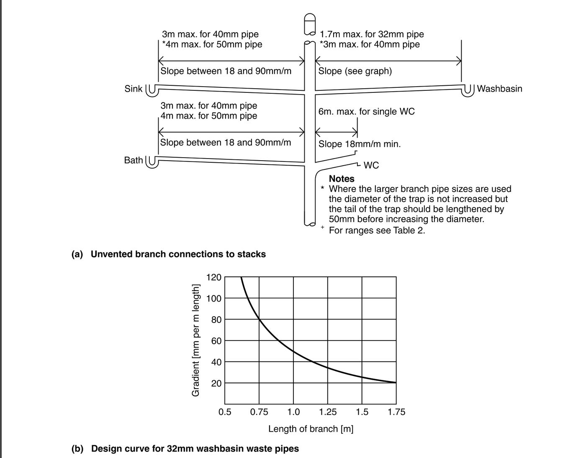
شكل 11 [مخطط تقني من مرجع] وصل الفروع غير المهواة بالناهية: أطوال الفروع القصوى وميولها لكل تجهيز
الأحمال والأقطار
تُحسب أقطار الصرف بجمع «وحدات الحمل» للتجهيزات المتصلة بكل جزء من الشبكة، ثم يُختار من جدول الكود القطر الذي يحتمل هذا الحمل. يستخدم IPC وحدات DFU، وتستخدم BS EN 12056 وحدات التصريف DU باللتر في الثانية، فلا تُخلط وحدات كودين في حساب واحد.
جدول: وحدات الحمل (DFU) وطاقة الفروع الأفقية في IPC 2024
التجهيز | DFU | قطر الماسورة الأفقية | أقصى DFU للفرع الأفقي |
|---|---|---|---|
مغسلة | 1 | 1½ بوصة (40 مم) | 3 |
دُش | 2 | 2 بوصة (50 مم) | 6 |
حوض استحمام | 2 | 2½ بوصة (65 مم) | 12 |
حوض مطبخ منزلي | 2 | 3 بوصات (80 مم) | 20 |
مصرف أرضية | 2 | 4 بوصات (100 مم) | 160 |
مرحاض خاص / عام (1.6 جالون) | 3 / 4 | 6 بوصات (150 مم) | 620 |
من الجدولين 709.1 و710.1(2). وأي مصرف مبنى يخدم مرحاضًا لا يقل عن 3 بوصات (حاشية الجدول 710.1(1)). IPC 2024
مثال: حمام خاص فيه مرحاض ومغسلة ودش: 3 + 1 + 2 = 6 DFU. الحمل وحده يكفيه قطر 2 بوصة، لكن وجود المرحاض يفرض 3 بوصات على الأقل. وفي الممارسة العربية يُستخدم غالبًا PVC بقطر 100 مم (القطر الخارجي 110 مم).
نقاط التنظيف: متطلب معماري
نقطة التنظيف فتحة بغطاء تسمح بإدخال أداة التسليك، ولا تكفي في المخطط وحدها، فلا بد أن يُوصل إليها بعد التشطيب. يشترط IPC 2024 في البند 708:
- خطوط الصرف الأفقية داخل المبنى: نقطة تنظيف كل 30.5 م (100 قدم) على الأكثر (708.1.1).
- عند كل تغيير أفقي في الاتجاه أكبر من 45°، وإذا تكرر التغيير خلال 12.2 م كفت النقطة الأولى (708.1.4).
- عند التقاء مصرف المبنى بالمجاري الخارجية، أو قبله بمسافة لا تزيد على 3 م (708.1.3).
- تكون النقطة بقطر الماسورة نفسه، ولا يلزم أن تزيد على 4 بوصات (708.1.5).
- يُترك أمام فتحة التنظيف للمواسير حتى 6 بوصات فراغ حر لا يقل عن 457 مم (708.1.10).
النتيجة المعمارية: كل نقطة تنظيف في سقف مستعار ثابت أو داخل حائط تحتاج فتحة صيانة في التشطيب وفراغ 457 مم أمامها. تظهر هذه الفتحات في مسقط السقف المنعكس، لا في مخطط التمديدات وحده.
كيف تتحقق من عمق السقف المستعار؟
- حدد أبعد تجهيز عن الناهية، وقِس طول المسار الأفقي حتى الناهية.
- اضرب الطول في الميل الأدنى من جدول الكود المعتمد؛ الناتج هو الهبوط.
- أضف قطر الماسورة مع الوصلات، ومسافة التعليق تحت البلاطة.
- قارن المجموع بعمق السقف المتاح بعد حجز التكييف والكهرباء والرشاشات والغازات الطبية.
جدول: مثال ممر جناح تمريض — الخط من أبعد حمام إلى الناهية
البند | وفق IPC 2024 | وفق Approved Document H |
|---|---|---|
طول المسار الأفقي (افتراض تعليمي) | 15 م | 15 م |
الميل الأدنى لقطر 100 مم | 1% ⇐ هبوط 15 سم | 18 مم/م (فرع مرحاض) ⇐ هبوط 27 سم |
الماسورة مع الوصلات (تقريبي) | 12 سم | 12 سم |
التعليق تحت البلاطة (تقريبي) | 5 سم | 5 سم |
العمق اللازم للصرف وحده عند الناهية | 32 سم | 44 سم |
الطول والوصلات والتعليق افتراضات تعليمية؛ الميل وحده قيمة من الكود. الحساب: 15 م × 1% = 0.15 م، و15 م × 18 مم/م = 270 مم.
الفرق بين الكودين 12 سم في الممر نفسه، لذلك يُحدد الكود المعتمد قبل تثبيت ارتفاع الطابق، لا بعده.
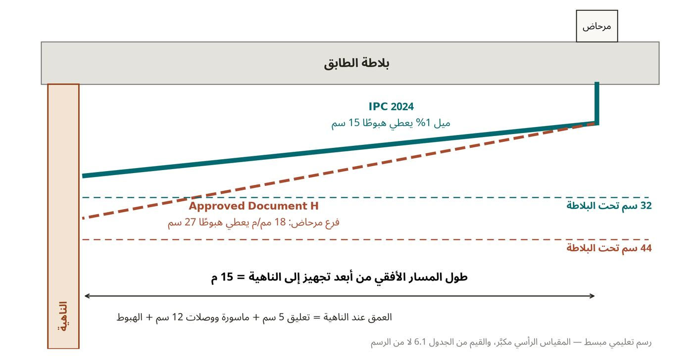
شكل 12 قطاع في سقف الممر: هبوط خط الصرف من أبعد مرحاض حتى الناهية وفق كودين
إذا لم يتسع السقف لهذا العمق، فهناك ثلاثة حلول معمارية بالترتيب: تقريب الحمامات من الناهية، أو إضافة ناهية جديدة، أو رفع ارتفاع الطابق. أما خفض الميل عن الحد الأدنى فليس حلًّا.
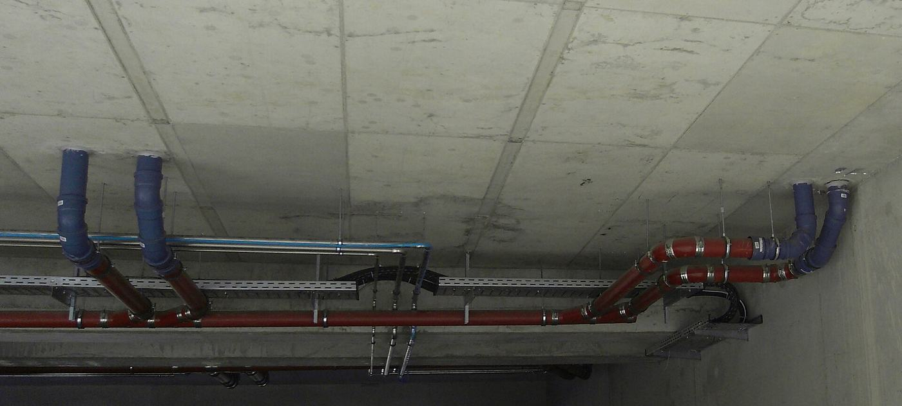
شكل 13 [صورة تنفيذ حقيقية] خطوط صرف وتغذية معلقة تحت البلاطة قبل تركيب السقف المستعار
ترتيب الخدمات في سقف المستشفى
الصرف هو الخدمة الوحيدة في السقف التي تعمل بالجاذبية، فلا يمكن رفعها أو خفضها بحرية. لذلك يُحجز له المسار أولًا، ثم تُرتَّب حوله مجاري التكييف وحوامل الكابلات وخطوط الغازات الطبية والرشاشات (الفصل الرابع عشر).
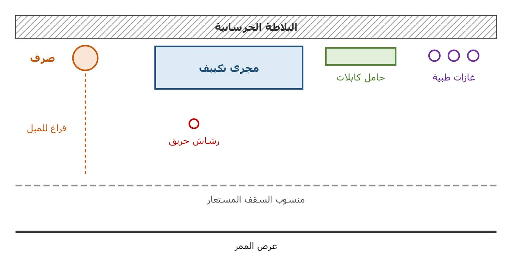
شكل 14 مقطع عرضي في سقف ممر مستشفى: الصرف أولًا، ثم التكييف والكابلات والغازات الطبية والرشاشات
التطبيق في المدرسة: الصرف الخارجي في الموقع
خارج المبنى تتجمع خطوط الناهيات في غرف تفتيش، ثم تتجه بميل إلى نقطة الاتصال بالشبكة العامة. يحدد المعماري في مسقط الموقع مواقع غرف التفتيش عند كل تغيير في الاتجاه أو التقاء للخطوط، ويتأكد ألا تقع داخل ملعب أو تحت مظلة ثابتة أو في مسار حركة الطلاب الرئيسي، وأن منسوب آخر غرفة أعلى من منسوب الشبكة العامة. ويشترط IPC 2024 ألا تزيد المسافة بين غرف التفتيش على 122 م إذا استُخدمت بدل نقاط التنظيف (708.1.1). ولا يُخلط صرف الأمطار بالصرف الصحي إلا إذا سمحت جهة الخدمات بذلك.
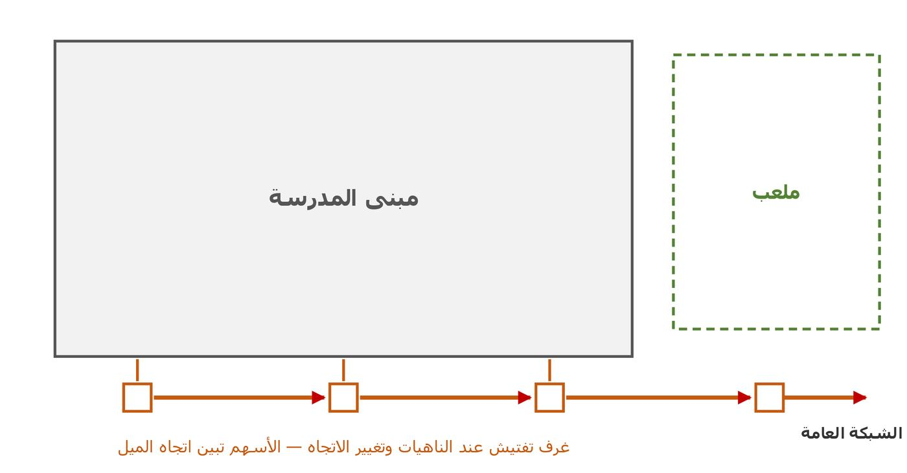
شكل 15 مسقط موقع مبسط لمدرسة: غرف التفتيش خارج الملعب ومسار الحركة، والميل باتجاه الشبكة العامة
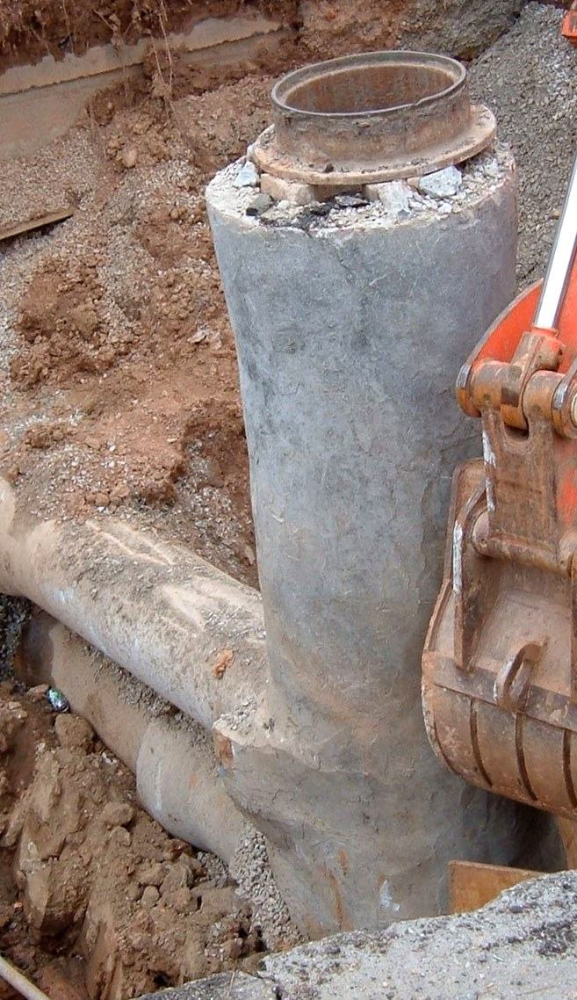
شكل 16 [صورة تنفيذ حقيقية] غرفة تفتيش خرسانية مسبقة الصب أثناء التركيب في حفرة الموقع
تصريف مياه الأمطار من الأسطح
مياه الأمطار لا تُصرف في شبكة الصرف الصحي، ولها شبكتها ومصارفها. يحسب IPC (الفصل 11) المصارف وأقطارها من شدة المطر المحلية ومساحة السطح المسقط، وتؤخذ القيم من الأرصاد المحلية وكود الجهة المختصة. وللمعماري قرارات في الشكل تسبق أي حساب:
- ميل السطح: ميل مستمر نحو المصارف، عادة بين 1% و2% أو بحسب مواصفة العزل المائي، دون جيوب تحبس الماء.
- المصرف الثانوي: حيث يحيط بالسطح سور (باراپت) يحبس الماء، يلزم مصرف أو فتحة فائض ثانوية على منسوب أعلى، حتى لا يتراكم الماء إذا انسد المصرف الرئيسي. وكل 10 سم من الماء على السطح تعني نحو 100 كغ على كل متر مربع.
- مواضع النزولات: تنزل مواسير المطر داخل ناهية أو عمود مخفي، لا على واجهة رئيسية ولا فوق مدخل، ولا تعبر فراغات حساسة.
- مصب النزولات: إلى شبكة أمطار أو غرفة تفتيش مخصصة أو تصريف في الموقع بحسب التربة، ولا توصل بالصرف الصحي.
حين لا توجد شبكة صرف عامة: خزان التحليل وبئر الامتصاص
في مدن وأحياء كثيرة، ومنها مناطق في ليبيا، لا تتوافر شبكة صرف عامة، فيعالج المبنى صرفه في موقعه. وهذا يضيف إلى مسقط الموقع عناصر تحتاج أرضاً ومسافات:
- خزان التحليل (Septic Tank): خزان مغلق محكم يفصل الرواسب والدهون ويحلل جزءاً من المواد العضوية دون هواء. تُحسب سعته من عدد المستخدمين ومدة احتجاز يحددها الكود المحلي. يحتاج غطاء تفتيش وتهوية، وموقعاً تصل إليه سيارة النزح دون دخول المبنى.
- بئر الامتصاص أو حقل الترشيح: يستقبل الماء الخارج من الخزان ليتسرب في التربة. يعتمد على نفاذية التربة ومنسوب المياه الجوفية، ويحتاج مساحة مكشوفة لا تمر عليها السيارات ولا تُبنى فوقها المنشآت.
- المسافات: يحدد الكود المحلي مسافات دنيا بينهما وبين المبنى والحدود وآبار الشرب وخزانات المياه الأرضية. وكلما اقتربا من بئر أو خزان ماء ارتفع خطر التلوث.
- قرار معماري مبكر: يحجز المعماري موقعهما في مسقط الموقع قبل توزيع المبنى والملاعب: على جهة الشارع، وعلى منسوب أدنى من المبنى لتجري إليهما الجاذبية، وبعيداً عن خزان الشرب.
- في المستشفى: لا يكفي خزان تحليل عادي لصرف المختبرات وغرف العزل، فيحتاج الموقع إلى وحدة معالجة وتعقيم تُدرس مع الجهة الصحية.
الفصل السابع: التهوية وحماية المصائد — بما فيها صمامات AAV
الفكرة: المصيدة سدادة ماء تحميها التهوية
تحت كل تجهيز صحي مصيدة على شكل حرف U تحتفظ بقليل من الماء، وهذا الماء هو الحاجز الوحيد بين رائحة شبكة الصرف وغازاتها وبين الفراغ. حين تتدفق المياه بقوة في الناهية تُحدث خلفها ضغطاً سالباً قد يسحب ماء المصيدة فيفرغها، أو ضغطاً موجباً يدفعه إلى الخارج. ماسورة التهوية تُدخل الهواء إلى الشبكة فتوازن هذا الضغط وتحافظ على ماء المصيدة.
لذلك ترتبط التهوية بالمسقط مباشرة: كل تجهيز يجب أن يكون قريباً بما يكفي من نقطة تهوية، وكل ناهية صرف يجب أن تمتد تهويتها إلى السطح أو تنتهي بصمام هوائي معتمد.
ماذا تقول الأكواد
يخصص الكود السعودي SBC 701 باباً كاملاً لتهوية الأنابيب، بأنواعها: الفردية والمشتركة والرطبة والدائرية وتهوية التجهيزات المنعزلة. ويحدد IPC، الذي بُني عليه الكود السعودي، مسافة قصوى بين المصيدة ونقطة التهوية حسب قطر خط الصرف:
قطر خط الصرف من المصيدة | الميل | أقصى مسافة إلى التهوية (IPC) |
|---|---|---|
1¼ بوصة (32 مم) | 2% | 1.52 م (5 أقدام) |
1½ بوصة (40 مم) | 2% | 1.83 م (6 أقدام) |
2 بوصة (50 مم) | 2% | 2.44 م (8 أقدام) |
3 بوصات (80 مم) | 1% | 3.66 م (12 قدماً) |
4 بوصات (100 مم) | 1% | 4.88 م (16 قدماً) |
- هذا الجدول لا يُطبق على المراحيض والتجهيزات ذاتية السيفون بالطريقة نفسها، فلها أحكام خاصة في IPC.
- قطر ماسورة التهوية لا يقل عادة عن نصف قطر خط الصرف الذي تخدمه، ولا يقل عن 1¼ بوصة (32 مم).
- مخرج التهوية فوق السطح يُبعد عن النوافذ وفتحات سحب هواء التكييف، وهذا شرط معماري يجب أن يظهر في مسقط السطح.
- كود دبي يتبع BS EN 12056 في التهوية، ويقبل الصمامات الهوائية المطابقة للمواصفة الأوروبية الخاصة بها.
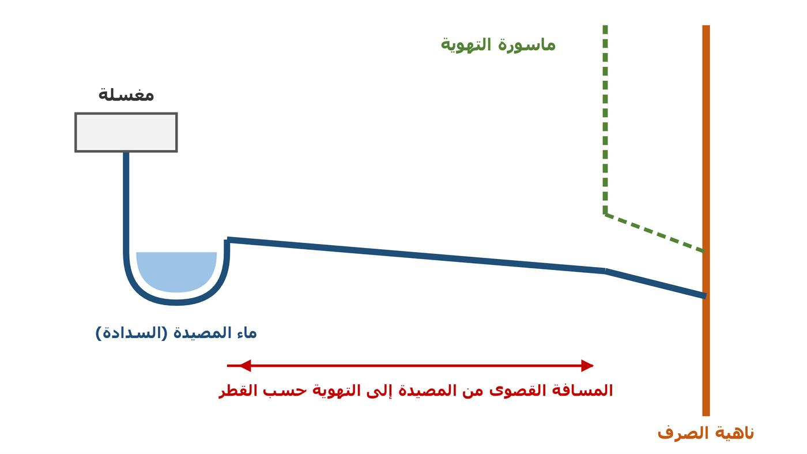
شكل 17 مقطع مبدئي: ماء المصيدة يحجز الغازات، والتهوية القريبة تحميه من السحب، والمسافة بينهما محددة بالكود
أنواع التهوية وأين تُستخدم
- التهوية الفردية: ماسورة تهوية لكل تجهيز. أكثرها أماناً وأكثرها مواسير، وتناسب التجهيزات المتباعدة.
- التهوية المشتركة: ماسورة واحدة تخدم تجهيزين متقابلين أو متجاورين على المستوى نفسه، مثل حمامي غرفتي مريض «ظهراً لظهر».
- التهوية الرطبة: جزء من خط الصرف يعمل أيضاً كتهوية لتجهيز آخر. شائعة في مجموعات الحمامات الصغيرة، ولها شروط دقيقة في الكود.
- التهوية الدائرية: ماسورة تهوية تخدم صفاً من التجهيزات على فرع أفقي واحد، وهي الحل النموذجي لصف المغاسل أو المراحيض في حمامات المدارس.
- تهوية التجهيز المنعزل: للمغسلة التي تقع في جزيرة وسط الفراغ بلا جدار خلفها، كمغسلة مختبر أو محطة غسل يدين وسط وحدة العناية.
- الصمام الهوائي AAV: صمام يسمح للهواء بالدخول إلى الشبكة ولا يسمح للغازات بالخروج. يُستخدم حين يتعذر إيصال ماسورة التهوية إلى السطح.
الصمام الهوائي AAV: متى يُقبل ومتى لا يُقبل
يبدو الصمام الهوائي حلاً سحرياً للمعماري لأنه يلغي ماسورة التهوية الطويلة، لكنه لا يُخرج الضغط الموجب ولا يُغني عن التهوية المفتوحة للشبكة كلها. الشروط المتكررة في IPC وما بُني عليه من أكواد:
- أن يكون الصمام في موضع يمكن الوصول إليه للفحص والاستبدال، وفي فراغ يدخله الهواء، لا مدفوناً في جدار أو سقف مغلق.
- أن يُركب أعلى من خط الصرف الذي يحميه بمسافة يحددها الكود.
- أن تبقى للمبنى تهوية واحدة على الأقل مفتوحة إلى الهواء الخارجي لكل شبكة صرف.
- قد تقيد أدلة المستشفيات استخدامه في فراغات بعينها، ويُراجع ذلك مع دليل الجهة الصحية.
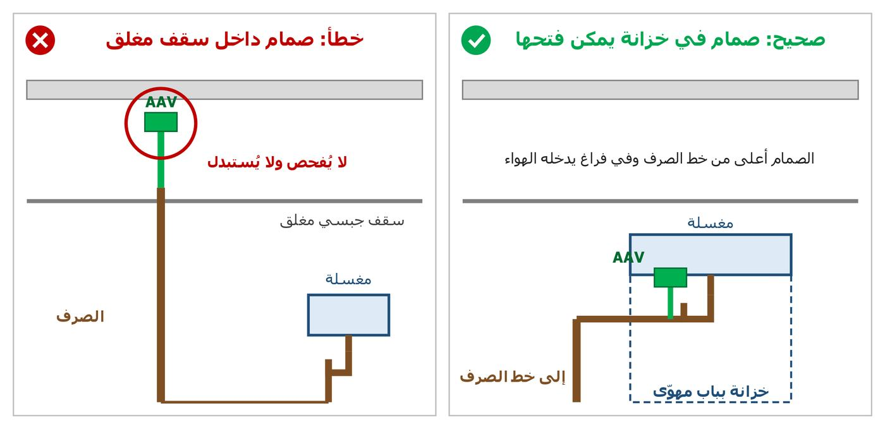
شكل 18 الصمام الهوائي AAV: مدفون في سقف مغلق (خطأ)، وفي خزانة مغسلة يمكن فتحها وفحصه (صحيح)
التطبيق في المدرسة: صف المغاسل والمراحيض
في حمام طلاب فيه صف من ست مغاسل يتصل الصرف بفرع أفقي واحد، وتمتد فوق الصف ماسورة تهوية دائرية تتصل بماسورة التهوية الرئيسية في الناهية. على المعماري أن يترك خلف الصف جداراً خدمياً أو فراغاً لا يقل عمقه عما تحتاجه الماسورتان، وأن تكون الناهية في طرف الصف لا في منتصف الحمام.
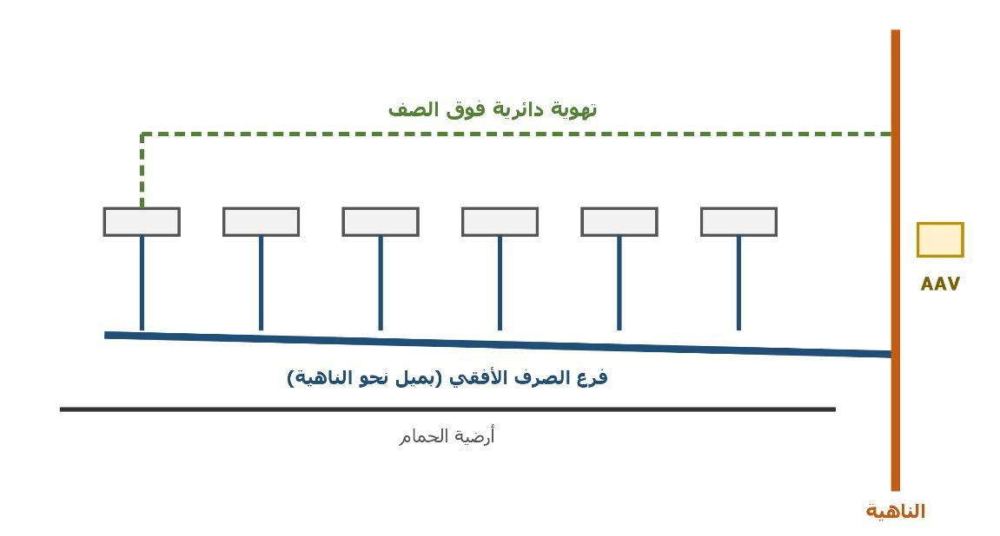
شكل 19 مقطع رأسي لصف مغاسل في حمام مدرسة: فرع صرف واحد، وتهوية دائرية فوقه، واتصال بالناهية في طرف الصف
الفصل الثامن: الأجهزة الصحية وموادها ومشتمَلاتها
الفكرة: الحمام يُرسم من جدار الخدمة لا من البلاط
تناولت الفصول السابقة كيف يصل الماء إلى المبنى، وكيف ينزل الصرف بالجاذبية (الفصل السادس)، وكيف تحمي التهوية سدادة المصيدة (الفصل السابع). ويدخل هذا الفصل إلى الحمام والمطبخ نفسيهما: ما الأجهزة التي توضع فيهما، وما الذي يصل إلى كل جهاز، وكيف توزعها في المسقط بحيث يكون الاستخدام مريحاً والتمديد قصيراً والصيانة ممكنة.
القرار المعماري الأهم داخل الحمام هو اختيار «الجدار الرطب»: الجدار الذي تتجمع عليه الأجهزة وتمر داخله المواسير. حين تحدده أولاً ثم توزع الأجهزة عليه، يقصر فرع كل جهاز ويقل عدد الوصلات ويقترب الجميع من الناهية. وحين توزع الأجهزة أولاً حسب شكل الفراغ، تكتشف لاحقاً أن الصرف يعبر الأرضية من جدار إلى آخر.
ما الذي يصل إلى كل جهاز؟
قبل رسم أي حمام، اعرف احتياجات كل جهاز. القطر هنا ليس للتصميم، بل ليفهم المعماري لماذا يحتاج المرحاض مساراً أكبر من المغسلة، ولماذا يحدد نوعُ المرحاض عمقَ الجدار أو انخفاضَ البلاطة.
الجهاز | مادة الصنع الشائعة | التغذية | قطر الصرف التقريبي | المصيدة | ما يعنيه للمعماري |
|---|---|---|---|---|---|
مغسلة | خزف صحي، استانلس، رخام صناعي | بارد + ساخن | 32–40 مم | منفصلة تحت الجهاز | حافتها على 80–85 سم؛ المصيدة إما داخل خزانة وإما زجاجية ظاهرة |
مرحاض أرضي بصندوق | خزف صحي | بارد | 100 مم | مدمجة في الجهاز | مخرجه في الأرض أو في الجدار، وهذا يحدد هل تنزل الماسورة في البلاطة أم تبقى في الجدار |
مرحاض معلق بخزان مدفون | خزف صحي + إطار معدني وخزان بلاستيكي | بارد | 90–100 مم | مدمجة في الجهاز | يحتاج جداراً خدمياً يتسع لإطار التثبيت، ووصولاً للصيانة من خلال لوحة الدفق |
مرحاض عربي (أرضي) | خزف صحي | بارد + شطاف | 100 مم | منفصلة تحت البلاطة | يحتاج انخفاضاً في البلاطة لتستوعب الجهاز ومصيدته |
دش | أكريليك، أو بلاط فوق عزل | بارد + ساخن | 50 مم | منفصلة تحت البالوعة | ميل البلاط نحو البالوعة؛ الدش بلا عتبة يحتاج انخفاضاً في البلاطة |
حوض استحمام (بانيو) | أكريليك، حديد مطلي، فايبر جلاس | بارد + ساخن | 40–50 مم | منفصلة | فتحة فحص في واجهة الحوض للوصول إلى المصيدة |
حوض مطبخ | استانلس، حجر صناعي | بارد + ساخن | 40–50 مم | منفصلة | على الجدار الرطب للمطبخ، وغسالة الصحون بجانبه لتشترك معه في الصرف |
غسالة ملابس أو صحون | — | بارد (وأحياناً ساخن) | 40–50 مم عبر قائم صرف | منفصلة | محبس خاص، ومقبس كهرباء محمي بعيداً عن رذاذ الماء |
مصرف أرضي | بلاستيك، استانلس | — | 50–75 مم | منفصلة | في أخفض نقطة من الأرضية، ويحتاج ماءً يعيد ملء مصيدته (الفصل السابع) |
سخان | — | بارد داخل، ساخن خارج | تصريف صمام الأمان | — | فراغ ووزن وصيانة؛ انظر قسم السخان في هذا الفصل |
الأجهزة الطرفية: ما الذي يختاره المعماري؟
لا يصمم المعماري الجهاز، لكنه يختار نوعه، وهذا الاختيار يغير الجدار والبلاطة والصيانة:
- المراحيض: الأرضي بصندوق أرخص وأسهل تركيباً. المعلق بخزان مدفون يترك الأرضية تحته مكشوفة للتنظيف، لذلك يُفضَّل في المستشفيات والمباني العامة، لكنه يحتاج جداراً خدمياً. العربي يحتاج انخفاضاً في البلاطة، ولا يناسب كبار السن وذوي الإعاقة.
- المغاسل: معلقة على الجدار، أو داخل خزانة، أو مثبتة في سطح رخامي. في المستشفى تكون مغسلة اليدين بلا سدادة وبلا فائض، والخلاط فيها بالكوع أو بالحساس لتقليل اللمس.
- الخلاطات: خلاط برافعة واحدة للاستخدام العام، وخلاط حراري (TMV) يضبط حرارة الماء الخارج حيث يُخشى الحرق، كما في المدارس الابتدائية وحمامات المرضى (الفصل الخامس)، وخلاط بالحساس في الحمامات العامة لتوفير الماء.
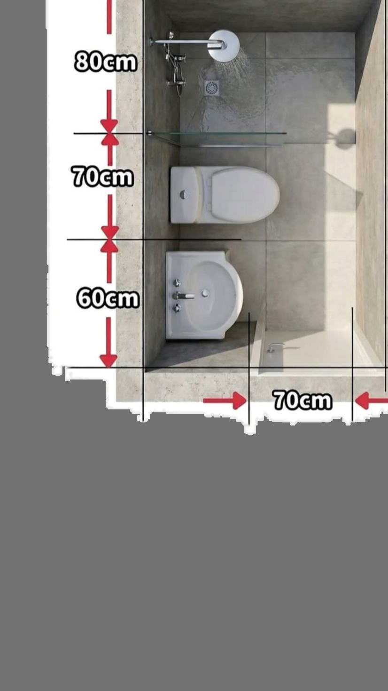
المحابس الطرفية: محبس زاوية تحت كل جهاز ليُصلَح الجهاز دون قطع الماء عن غيره، ومحبس للحمام كله في مكان ظاهر عند مدخله أو في الناهية. المحبس المدف ون خلف البلاط بلا باب فحص خطأ معماري لا خطأ سباك.
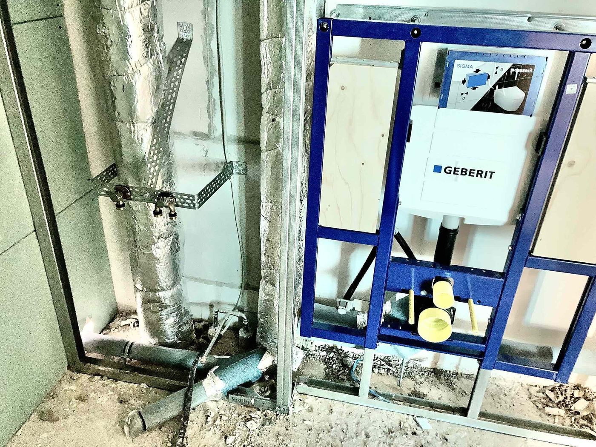
شكل 20 [صورة تنفيذ حقيقية] إطار تثبيت مرحاض معلّق قبل الإغلاق، مع وصلة الصرف وخط التغذية خلف الحائط الجاف
شكل 21 [صورة تنفيذ حقيقية] محبس زاوية على خط التغذية تحت حوض مطبخ
شكل 22 [صورة تنفيذ حقيقية] مصيدة صرف (P) ومواسير معلقة بقضبان ملولبة، بجوار ماسورة كهرباء ورشاش حريق
الأجهزة الصحية: الأنواع والمواد والأبعاد
الجهاز | الأنواع الشائعة | الأبعاد الشائعة (سم) | ملاحظة معمارية |
|---|---|---|---|
المرحاض الشرقي (العربي) | قاعدة أرضية بمواطئ قدم، يُطرد بصندوق عالٍ أو بمحبس | نحو 60 × 70، وسطحه في منسوب البلاط | يحتاج هبوطاً في البلاطة لاحتواء المصيدة، ولا يناسب كبار السن وذوي الإعاقة |
المرحاض الأفرنجي بصندوق ظاهر | قطعة واحدة أو قطعتان، بمخرج أرضي (S) أو خلفي (P) | نحو 37 × 70 شاملاً الصندوق، وارتفاع المقعد نحو 40 | نوع المخرج يحدد موقع الصرف: الأرضي ينزل في البلاطة، والخلفي يحتاج جداراً ملاصقاً للقائم |
المرحاض بصندوق مدفون | قاعدة أرضية والصندوق داخل الجدار | جدار خدمي بعمق 15–20 | زر الطرد هو فتحة الصيانة، فيُحدد موقعه مع تقسيم البلاط |
المرحاض المعلق | قاعدة معلقة على إطار معدني مثبت في البلاطة | جدار خدمي بعمق 20–25، وبروز القاعدة 50–55 | الأرضية تحته حرة للتنظيف؛ يُثبت الإطار قبل بناء الجدار |
البيديه | أرضي أو معلق | نحو 35 × 55 | بارد وساخن؛ يُرسم بجانب المرحاض بمسافة كافية بين المحورين |
المبولات | حائطية معلقة، قائمة، قناة (بلاطة)، بدون ماء | 35 × 35 إلى 35 × 60، والمحاور كل 60–70 | تتكرر في الحمامات العامة؛ وتُخفض للأطفال في المدارس |
المغاسل | على قاعدة، معلقة، على أرجل، مدمجة في وحدة أو سطح | 45 × 60 شائع (من 30 × 40 إلى 55 × 75) | مصيدة ومحبسا زاوية تحت كل مغسلة يجب الوصول إليها |
البانيو | بين جدارين، أو حر | 70 × 170 شائع (من 60 × 125 إلى 75 × 210) | فتحة كشف في الواجهة لصمام الصرف والمصيدة |
الدش | صينية جاهزة، أو أرضية مبلطة بمصرف نقطي أو خطي | 80 × 80 إلى 90 × 120 | ميل الأرضية نحو المصرف، وعزل الأرضية والجدار المحيط |
حوض المطبخ | بعين أو اثنتين، مع مصفاة أو بدونها | عمق الحلة 17–20، والعين 40–60 عرضاً | على الجدار الأقرب للقائم؛ وفي المطبخ التجاري يمر صرفه بمصيدة شحوم |
أحواض المستشفيات | حوض غسيل جراحي، حوض تفريغ للمخلفات، حوض غسيل أدوات | حسب دليل المستشفى | تشغيل بلا لمس، وموقعها جزء من فصل المسار النظيف عن الملوث |
حوض الخدمة (عمال النظافة) | أرضي منخفض أو حوض عميق | نحو 60 × 60 | غرفة نظافة في كل طابق قريبة من الناهية |
مصرف الأرضية (السيفون الأرضي) | عادي، بحاجز مائي، خطي، حاجز زيوت للمرائب | مدخل من 50 مم | في أخفض نقطة، وبعيداً عن مسار المشي الرئيسي |
الغسالات (ملابس وصحون) | منزلية وتجارية | عرض 60 للمنزلية | قائم صرف ومحبس، ومقبس كهرباء محمي بعيداً عن الماء |
المشتمَلات: ما يرافق الجهاز في الجدار والأرضية
- المصيدة (السيفون): تحجز ماءً يمنع عودة الروائح. نوعها P إذا خرج الصرف إلى الجدار، وS إذا نزل إلى الأرضية، والزجاجية الظاهرة تحت المغاسل. يجب أن تكون قابلة للفك.
- طبة التسليك (Cleanout): غطاء بقلاووظ عند تغيير اتجاه الماسورة أو التقاء خطين، يُفتح لتسليك الانسداد. يجب ألا يُدفن خلف تشطيب ثابت.
- مصرف الأرضية: يجمع ماء الأرضية ويحجز الروائح. في الأسلوب التقليدي كان يجمع صرف المغسلة والبانيو أيضاً، أما حالياً فلكل جهاز مصيدته، ويُستخدم المصرف للأرضية فقط أو بحسب الكود.
- الجاليتراب: مصيدة كبيرة في الأرض قبل غرفة التفتيش تستقبل صرف المطابخ والأرضيات في الدور الأرضي. حلت محلها في كثير من المباني الحالية مصائد مصنعة وغرف تفتيش جاهزة.
- المحابس: محبس زاوية لكل جهاز، ومحبس عام للحمام في مكان ظاهر.
مناسيب التأسيس: ارتفاعات المخارج
تُحدد مخارج التغذية والصرف في الجدار قبل اللياسة والبلاط. الارتفاعات التالية شائعة في الممارسة، وتُطابق دائماً مع كتالوج الجهاز المختار قبل التأسيس، وتُقاس من منسوب التشطيب النهائي لا من البلاطة الخرسانية.
الجهاز | البند | الارتفاع الشائع (سم) |
|---|---|---|
مغسلة | حافة المغسلة | 80–85 |
مخرجا التغذية (بينهما 10–15) | 55–60 | |
مخرج الصرف في الجدار | 50 | |
حوض مطبخ | سطح العمل | 85–90 |
مخرجا التغذية | 50–60 | |
مخرج الصرف | 45–50 | |
مرحاض أرضي | ارتفاع المقعد | 40 |
محبس الصندوق | 20–25 | |
محبس الشطاف | 40–50 | |
محور الصرف من الجدار الخلفي | 30 تقريباً (حسب الجهاز) | |
دش | الخلاط | 100–110 |
رأس الدش | 200–210 | |
بانيو | الحافة | 45–55 |
الخلاط فوق الحافة | 20–25 | |
سخان كهربائي | أسفل السخان | 180 |
مخرجا البارد والساخن | 130–140 | |
سخان غاز | مخرجا التغذية | 110 تقريباً، ويُترك فوقه مسار المدخنة |
غسالة ملابس | قائم الصرف | 60–80 |
محبس التغذية | 90–110 | |
مبولة | مخرج الصرف | 50 تقريباً |
التغذية أو صمام الطرد | 110–125 |
شكل 23 مناسيب مخارج التأسيس على جدار حمام (واجهة)
الفصل التاسع: توزيع الحمام والمطبخ — من المسقط إلى التفصيلة
يطبق هذا الفصل ما سبق على المسقط: المسافات حول الأجهزة، وأنماط توزيع الحمام، والجدار الخدمي، وأمثلة مساقط لحمامات مختلفة، ثم المطبخ والسخان.
المسافات الدنيا حول الأجهزة
كل جهاز يحتاج مساحتين: مساحة الجهاز نفسه، ومساحة حرة أمامه يقف فيها المستخدم أو يجلس. الأبعاد تُقاس من «محور» الجهاز، أي من خط منتصفه، لأن السباك يركب مخرج الصرف والتغذية على هذا المحور. القيم في الجدول تعليمية، وتختلف قليلاً بين الأكواد.
البعد | القيمة التعليمية | لماذا |
|---|---|---|
محور المرحاض إلى الجدار أو الحاجز الجانبي | 40–45 سم | مساحة الكتفين والركبتين |
بين محوري مرحاضين متجاورين | 80 سم | حاجز بينهما وحركة مريحة |
الفراغ الحر أمام المرحاض | 60 سم | الجلوس والوقوف والمرور |
محور المغسلة إلى الجدار الجانبي | 35–40 سم | حركة المرفقين أثناء الغسل |
بين محوري مغسلتين متجاورتين | 60–70 سم | وقوف شخصين في وقت واحد |
الفراغ الحر أمام المغسلة | 60 سم | الانحناء والمرور خلف المستخدم |
الدش | 90 × 90 سم حداً أدنى | الدوران تحت الماء |
عرض باب الحمام الخاص | 70–80 سم | دخول مريح؛ وللحمام المهيأ 90 سم |
شكل 24 المسافات الدنيا حول الأجهزة على جدار رطب واحد (مسقط)
أنماط توزيع الحمام
هناك أربعة أنماط لتوزيع الأجهزة. الفرق بينها ليس في الشكل، بل في طول الصرف وعدد الوصلات وما يحدث تحت البلاطة. ابدأ دائماً بالنمط الأول، ولا تنتقل إلى غيره إلا لسبب يفرضه الفراغ.
النمط | الصرف | التقييم | متى يُستخدم |
|---|---|---|---|
جدار رطب واحد | فرع واحد على طول الجدار | الأفضل | الحمامات المستطيلة، وصفوف المراحيض والمغاسل في المباني العامة |
جداران متجاوران (L) | فرع بزاوية واحدة | مقبول | الحمام المربع، أو حين يأخذ الدش الجدار المجاور |
جداران متقابلان | فرعان، أو فرع يعبر الأرضية | تجنبه | فقط حين لا يوجد بديل، ومعه انخفاض في البلاطة أو سقف مستعار أعمق تحتها |
حمامان ظهراً لظهر | ناهية واحدة لحمامين | الأفضل للتكرار | غرف المرضى والفنادق والسكن الطلابي (الفصل الثالث) |
شكل 25 أنماط توزيع الحمام الأربعة وأثر كل منها على مسار الصرف (مسقط)
الجدار الخدمي: أين تختفي المواسير؟
الجدار الذي تُثبَّت عليه الأجهزة يحتاج عمقاً تمر فيه المواسير. في الحمام العادي يكفي تجويف في جدار البلوك أو تكسية رقيقة أمامه. أما المرحاض المعلق فيحتاج إطار تثبيت وخزاناً مدفوناً، فيصبح الجدار الخدمي بعمق 20–25 سم. هذا العمق يُرسم في المسقط من البداية، لأنه يأخذ من مساحة الحمام.
- الترتيب الرأسي: الصرف في الأسفل لأنه يحتاج ميلاً ولا يصعد، وفوقه البارد، وفوق البارد الساخن حتى لا يدفئ الماء البارد.
- الترتيب أمام الجهاز: الساخن على يسار المستخدم والبارد على يمينه، في كل الأجهزة، حتى لا يخطئ أحد في المبنى كله.
- الوصول: كل ما يحتاج صيانة داخل الجدار له فتحة: لوحة الدفق للمرحاض المعلق، وباب فحص للمحابس المدفونة ولمصيدة حوض الاستحمام.
شكل 26 مقطع في جدار خدمي يحمل مرحاضاً معلقاً ومغسلة — ترتيب الصرف والبارد والساخن
من المبدأ إلى المسقط: أمثلة على توزيع الحمام
تطبق الأمثلة التالية ما سبق على حمامات شائعة في المشاريع. يبدأ كل مثال بالناهية والجدار الرطب، ثم توضع الأجهزة بالمسافات الدنيا، ثم الباب، ثم المصرف الأرضي وميل البلاط.
حمام شقة: جدار رطب واحد
حمام بأبعاد 2.0 × 2.5 م والناهية خلف ركنه. كل الأجهزة على الجدار الطويل الملاصق للناهية: المغسلة قرب الباب لأنها الأكثر استخداماً، ثم المرحاض، ثم الدش في العمق بعيداً عن الباب حتى لا يصل الرذاذ إلى المدخل. فرع صرف واحد يجمع الأجهزة الثلاثة، والمصرف الأرضي أمامها في أخفض نقطة من البلاط.
حمام مهيأ لذوي الإعاقة
- المرحاض: على جدار جانبي، ومحوره على بعد 40–45 سم من هذا الجدار، ومقعده على ارتفاع 43–48 سم (معايير ADA الأمريكية 2010، البند 604، للمقارنة؛ ويُعتمد كود الإتاحة المحلي).
- الانتقال: مساحة حرة بعرض 90 سم بجانب المرحاض يقف فيها الكرسي المتحرك، وقضبان مساندة على الجدار الجانبي وخلف المرحاض.
- الدوران: دائرة حرة قطرها 150 سم لا يقطعها جهاز ولا باب.
- المغسلة: المغسلة على ارتفاع 80 سم وتحتها فراغ للركبتين، والخلاط برافعة أو بالحساس.
- الباب والطوارئ: عرض الباب 90 سم، ويفتح للخارج أو ينزلق، حتى يمكن فتحه إذا سقط المستخدم خلفه. ويُضاف زر استغاثة يصل إلى الممرضة أو الحارس.
شكل 27 مسقطان مكبران: (أ) حمام شقة على جدار رطب واحد، (ب) حمام مهيأ لذوي الإعاقة
كتلة حمامات مبنى عام: ظهراً لظهر حول ممر خدمة
في المدرسة والمبنى الإداري يتكرر المرحاض والمغسلة بالعشرات. الحل الأوفر أن يقع قسمان على جانبي ممر خدمة واحد، وكل الأجهزة على جداره: المراحيض المعلقة في حجرات، والمغاسل قرب المدخل. يدخل الفني الممر من طرفه فيصلح أي جهاز دون أن يدخل الحمام أو يكسر بلاطه. أعداد الأجهزة تُحسب كما في الفصل الحادي عشر، وهذا المسقط هو الذي يحولها إلى فراغ.
شكل 28 كتلة حمامات مبنى عام: قسمان ظهراً لظهر حول ممر خدمة يمكن دخوله
تنويعات أخرى على المبدأ نفسه
- حمام الضيوف (مرحاض ومغسلة): جدار رطب واحد ملاصق للناهية، ويفتح الباب للخارج أو ينزلق حتى لا يصطدم بالمرحاض.
- حمامان متجاوران في شقة: جدار رطب مشترك يوفر ناهية وقائم صرف واحداً. يُبعد المرحاضان عن بعضهما أو يُعزل الجدار صوتياً.
- حمام رئيسي مع غرفة ملابس: تتابع من الجاف إلى الرطب: النوم ثم الملابس ثم المغاسل ثم المرحاض والدش. الخزائن بعيدة عن الدش، وتهوية بشفط إلى الخارج.
- حمام غرفة فندقية أو غرفة مريض: يُرسم مرة ويُكرر مقلوباً حول ناهية مشتركة على الممر، فيصان من الممر دون دخول الغرفة (الفصل الثالث).
- حمام بمنطقتين: منطقة جافة للمغاسل عند المدخل ومنطقة رطبة للمرحاض والدش. الميل والمصرف داخل المنطقة الرطبة فقط.
- الشقة الكاملة: تلتف الفراغات الرطبة (الحمامان والمطبخ والغسيل) حول ناهية واحدة، وتتكرر في الموضع نفسه في كل طابق.
المطبخ من الداخل
- الحوض: على الجدار الرطب الأقرب إلى الناهية، وتحت نافذة إن أمكن.
- الغسالات: غسالة الصحون بجانب الحوض مباشرة لتشترك معه في الصرف والتغذية. غسالة الملابس على قائم صرف خاص، وبجانبها مصرف أرضي.
- حوض الجزيرة: ممكن، لكن صرفه ينزل في البلاطة أو في سقف الدور الأسفل، ويحتاج تهوية خاصة لأنه بعيد عن الجدار (الفصل السابع). يُقرر قبل صب البلاطة لا بعدها.
- الأبعاد: سطح العمل والحوض على ارتفاع 85–90 سم، وأمامه فراغ عمل لا يقل عن 90 سم.
- المطبخ التجاري: في المدرسة والمستشفى توضع مصيدة الشحوم خارج منطقة التحضير، ويُضاف صرف أرضي بقنوات (الفصل الثاني عشر).
شكل 29 موقع حوض المطبخ: على الجدار الملاصق للناهية، أو في جزيرة وما يترتب عليه (مسقط)
أنواع المطابخ وما يتغير في كل منها
المطبخ | المستخدم والحجم | العناصر الرطبة | الصرف والشحوم | ملاحظة معمارية |
|---|---|---|---|---|
مطبخ سكني | أسرة واحدة | حوض، غسالة صحون، وأحياناً غسالة ملابس | مصيدة تحت الحوض، دون مصيدة شحوم مركزية | على الجدار الأقرب للقائم، والغسالة بجانب الحوض |
مطبخ مدرسة | وجبة أو مقصف في وقت قصير | أحواض تحضير، حوض غسيل أوانٍ، مصارف أرضية | مصيدة شحوم خارج المطبخ | منطقة التسليم على الصالة، ومسار مستقل للنفايات لا يمر بالطلاب |
مطبخ مستشفى | وجبات للمرضى والعاملين على مدار اليوم | أحواض تحضير منفصلة للحوم والخضار، غسيل أوانٍ وعربات | مصيدة شحوم خارجية، وقنوات صرف أرضية | فصل صارم بين النظيف والملوث، وغسيل عربات التوزيع قرب المخرج |
مطبخ إنتاج مركزي | إنتاج كبير يوزع على مبانٍ أخرى | خطوط تحضير وطهي، غرف تبريد، غسيل أوانٍ آلي | مصائد شحوم كبيرة، وقنوات صرف على طول الخطوط | أرضيات بميول وقنوات، وارتفاع كافٍ للتمديدات والمظلات |
السخان: الجهاز الذي يُنسى في المسقط
إذا لم يُحدد موقع السخان في المسقط عُلّق في الموقع فوق الباب أو داخل الدش أو فوق سقف لا فتحة فيه. السخان جهاز له حجم ووزن، ويخرج منه ماء، ويُستبدل كل بضع سنوات. لذلك يُحدد مكانه في المسقط مع الحمام، لا بعده.
النوع | أين يوضع | ما يحتاجه معمارياً |
|---|---|---|
كهربائي بخزان | قرب الحمام أو المطبخ، أو فوق سقف مستعار بفتحة | جدار حامل، وصينية تنقيط ومصرف، وقاطع كهرباء، ومسار لاستبداله |
كهربائي فوري | تحت المغسلة أو بجانب الدش | قدرة كهربائية عالية بكابل مستقل؛ لا يحتاج خزاناً |
غازي (فوري أو بخزان) | على جدار خارجي أو في فراغ مهوّى، لا في الحمام ولا في غرفة نوم | مخرج عادم إلى الخارج وفتحات تهوية |
شمسي | المجمعات على السطح والخزان فوقها أو في غرفة | سطح بلا ظل، وحمل الخزان الممتلئ على السقف، ومواسير معزولة إلى الحمامات |
مضخة حرارية | غرفة خدمة أو سطح مهوّى | حجم هواء كافٍ، وصرف لماء التكثف، وبعد عن غرف النوم بسبب الصوت |
مركزي مع خط تدوير | غرفة آلات للمبنى كله | غرفة وناهية لخطي الذهاب والعودة (الفصل الخامس) |
قواعد السخان للمعماري:
- الوصول والاستبدال: ارسم مساراً يخرج منه السخان دون فك بلاط أو كسر سقف. وإذا وُضع فوق السقف المستعار، فالفتحة أكبر من السخان وصينيته.
- الوزن: سخان 80 لتراً ممتلئاً يزن قرابة 100 كغ، فيُعلق على جدار مصمت أو حامل، لا على جدار جبس.
- الماء الذي يخرج منه: صمام الأمان قد يصرف ماءً ساخناً، فتصب ماسورته في مصرف ظاهر عبر فاصل هوائي، وتحت السخان صينية تنقيط موصولة بالصرف. السخان البعيد عن أي مصرف خطأ في المسقط.
- القرب من الأجهزة: كل متر بين السخان والدش ماء بارد ينتظره المستخدم قبل الساخن، وفرع راكد يزيد خطر الليجيونيلا (الفصل الخامس). ضعه قرب أكثر جهاز يستهلك الساخن.
- الكهرباء: القاطع خارج منطقة الرذاذ، ولا يُركب السخان فوق الدش أو حوض الاستحمام.
شكل 30 تفصيلة تركيب سخان بخزان: التغذية، وصمام الأمان وفاصله الهوائي، وصينية التنقيط والمصرف
شكل 31 [صورة تنفيذ حقيقية] سخان مياه كهربائي بخزان في غرفة آلات مدرسة، مع مواسيره المعزولة وتوصيلاته
الفصل العاشر: الناهيات (المناور الخدمية) والوصول للصيانة
الفكرة: الناهية فراغ معماري لا خط على المخطط
الناهية هي الفراغ الرأسي الذي تصعد فيه المواسير وتهبط بين الطوابق. هي في الحقيقة غرفة ضيقة متكررة، لها أبعاد وجدران وباب وفتحات في البلاطات، ويجب أن تُرسم بأبعادها الحقيقية من مرحلة الفكرة. الناهية الصغيرة لا تُصلح لاحقاً إلا بكسر الجدران أو بصناديق جبسية تشوه الفراغ.
شكل 32 [صورة تنفيذ حقيقية] ناهية خدمات مقاومة للحريق أثناء التنفيذ: مجرى هواء معدني ومواسير نحاسية ووصلة رأس الجدار
ماذا تقول الأكواد
- تشترط جهات ترخيص كثيرة، ومنها اشتراطات أبوظبي للمباني التجارية، أن تمر مواسير الصرف داخل ناهيات لا ظاهرة على الواجهات.
- الناهية التي تخترق الطوابق جزء من منظومة الحماية من الحريق: جدرانها وفتحاتها وسد الفراغات حول المواسير عند البلاطات تخضع لكود الحريق المحلي، مثل كود 305 المصري.
- الأكواد لا تحدد أبعاد الناهية برقم واحد، بل تُستنتج من عدد المواسير وأقطارها وعزلها ومسافات الصيانة.
أنواع الناهيات
النوع | ما تحتويه | ملاحظة تصميمية |
|---|---|---|
ناهية صرف | مواسير الصرف والتهوية | ملاصقة للفراغات الرطبة ومتطابقة رأسياً |
ناهية مياه | التغذية الباردة والساخنة والتدوير | تُعزل حرارياً وتُفصل عن الصرف |
ناهية مختلطة | مياه وصرف وخدمات أخرى | تحتاج ترتيباً واضحاً: الصرف أسفل والمياه أعلى عند التقاطعات |
ناهية حريق | رايزرات الإطفاء | تُفصل وفق كود الحريق |
ناهية كهربائية أو ميكانيكية | كابلات أو مجاري هواء | لا تُخلط مع الصرف إلا بفصل صارم |
المنور والناهية: فراغان مختلفان
يخلط كثير من الطلاب بين المنور والناهية لأن كليهما فراغ رأسي يخترق الطوابق. لكن وظيفتهما مختلفة، وما يصلح لأحدهما يضر الآخر. فالمنور يُصمم للضوء والهواء، والناهية تُصمم للمواسير والوصول إليها:
العنصر | المنور | الناهية الخدمية |
|---|---|---|
الوظيفة | إنارة وتهوية الفراغات المطلة عليه | احتواء المواسير والخدمات الرأسية |
طبيعة الفراغ | مفتوح للسماء أو معرض للهواء الخارجي | مغلق بجدران، وغالباً مقاوم للحريق |
الحاجة إلى الوصول | ليست مطلوبة دائماً | مطلوبة في كل طابق للصيانة |
التهوية الطبيعية | وظيفته الأساسية غالباً | ليست وظيفته الأساسية |
الصيانة | من داخل الفراغ أو من السطح | من باب أو فتحة صيانة على فراغ عام |
أثره المعماري | يؤثر في الإضاءة والواجهات الداخلية | يؤثر في المسقط ومسارات الخدمات |
شكل 33 مقارنة بين المنور المفتوح للإنارة والتهوية، والناهية المغلقة للمواسير ببابها على الممر
خلاصة: إذا كان الفراغ الرأسي يحتاج نوافذ فهو منور، وإذا كان يحتاج باباً فهو ناهية. ولا يُستخدم المنور ممراً للمواسير إلا إذا سمح الكود المحلي بذلك صراحة.
ضوابط موقع الناهية وأبعادها
المعيار | ممارسة صحيحة | ممارسة خاطئة |
|---|---|---|
القرب | ملاصقة للحمامات والمطابخ والمختبرات | في منتصف ممر بعيد عن الفراغات الرطبة |
المحاذاة | في الموضع نفسه في كل الطوابق | تتحرك من طابق إلى آخر |
الوصول | باب صيانة في ممر أو غرفة خدمة | خلف تشطيب ثابت أو داخل غرفة مريض أو فصل |
الإنشاء | متوافقة مع البحور والكمرات وفتحات البلاطات | تقطع كمرة أو تحتاج فتحات ارتجالية |
الصوت | معزولة عن الفراغات الهادئة | ملاصقة لرأس سرير المريض أو جدار قاعة دراسة |
السطح | تمتد التهوية إلى السطح بعيداً عن الفتحات | تنتهي داخل سقف أو منور مغلق |
شكل 34 [صورة تنفيذ حقيقية] لوحة فتحة صيانة قبل تركيبها في جدار مكسو
الأبعاد الرقمية للناهيات حسب المراجع
لا يتضمن نص الكود المصري 301 ولا المعايير المصرية للمستشفيات المنشورة رقماً محدداً لأبعاد ناهية المواسير، لذلك يبقى الرجوع إلى النسخة المعتمدة واجباً. أوضح مرجع منشور للأبعاد هو المواصفة البريطانية BS 8313:1997 الخاصة بإيواء الخدمات في الناهيات، وهي من عائلة المواصفات البريطانية والأوروبية التي يتبعها كود دبي. ويضاف إليها اشتراط اللائحة التنفيذية لقانون البناء المصري الخاص بمنور الحمامات.
المرجع والبند | ما يضبطه | القيمة | استخدامها في التصميم |
|---|---|---|---|
BS 8313 – بند 8.1.2 | مساحة الناهيات الرأسية للمواسير والكهرباء في كل طابق، تقديراً أولياً | من 1 إلى 2 م² لكل 5000 م³ من حجم المبنى | حجز مساحة النوى في المسودة الأولى |
BS 8313 – بند 8.1.3 | احتياطي للإضافات والتعديلات المستقبلية | من 10% إلى 15% مساحة إضافية | لا ترسم الناهية ممتلئة |
BS 8313 – بند 8.1.4 | عمق السقف المستعار، ومساحة ما تخدمه الناهية الواحدة | 500 مم صافية من الكمرات؛ وتخدم كل ناهية رأسية نحو 1000 م² كحد أقصى | عدد الناهيات في الطابق وعمق الفراغ فوق السقف |
BS 8313 – بند 8.2 | أقل مسافة بين سطح الماسورة أو عزلها وأي عائق | 25 مم للمواسير والكابلات، و75 مم عند وصلات الفك | عمق شريط المواسير داخل الناهية |
BS 8313 – بند 8.3.1 | فراغ تشغيل المحابس وصيانتها | قد يزيد على 250 مم لحركة المفتاح | موقع المحابس أمام الباب مباشرة |
BS 8313 – بند 7 | الفصل بين الكابلات والمواسير إذا اشتركت في ناهية | 25 مم على الأقل، وأكثر للخدمات الكبيرة | الأفضل ناهية كهرباء مستقلة |
BS 8313 – بند 9.4 | فراغ العمل داخل ناهية رأسية يدخلها الفني | عرض 600 مم × عمق 750 مم (0.9 م³) خالياً من المواسير والعزل والسلالم | الناهية القابلة للدخول في المستشفيات والمباني الكبيرة |
BS 8313 – بند 9.2 | فتحة الدخول إلى ناهية رأسية | 600 × 1800 مم، أو 600 × 1400 مم كحد أدنى | مقاس باب الناهية في المسقط والواجهة الداخلية |
اللائحة التنفيذية لقانون البناء المصري 119 لسنة 2008 | فناء تهوية وإنارة الحمامات في الفنادق والمستشفيات والمباني العامة التي لا تتوفر بها تهوية صناعية | مساحة لا تقل عن 1.5 م²، ولا يقل أي بعد عن 1 م | منور تهوية وليس ناهية مواسير مغلقة |
الكود المصري 301، وSBC 701، وIPC | أبعاد ناهية المواسير | لا رقم منشوراً متاحاً لي | تُطبق اشتراطات الوصول للمحابس ونقاط التنظيف |
كيف تحوّل هذه الأرقام إلى مسقط؟ ميّز أولاً بين نوعين من الناهيات:
- ناهية يُعمل فيها من الباب فقط: وهي الشائعة في المدارس والمباني الصغيرة. عمقها = قطر المواسير مع عزلها + 25 مم من كل جانب + فراغ المفتاح عند المحابس. وعرضها يساوي عرض المواسير المصفوفة مع مسافاتها، ويكون بابها بعرض الناهية تقريباً.
- ناهية يدخلها الفني: وهي المناسبة لمستشفى أو مبنى مرتفع، تخدم جناحاً كاملاً وفيها محابس وعدادات وصمامات تخفيض ضغط. تحتاج فراغ عمل صافياً لا يقل عن 600 × 750 مم، يضاف إليه شريط المواسير بجانبه، وباباً لا يقل عن 600 × 1400 مم.
مثال: ناهية تغذية لجناح تمريض يدخلها الفني. فيها صاعد بارد وصاعد ساخن وماسورة تدوير، وشريط المواسير مع عزلها ومسافاتها بعمق 300 مم تقريباً (افتراض للمثال). فراغ العمل 600 مم عرضاً، يضاف إليه شريط المواسير 300 مم، فيصبح الصافي الداخلي نحو 0.90 × 0.75 م. ومع جدران بسمك 10 سم يصبح المقاس الخارجي في المسقط نحو 1.10 × 0.95 م، بباب 0.60 × 1.40 م على الأقل يُفتح على ممر الخدمة.
ناهية المدرسة تُرسم من الخارج: مواسير وباب. وناهية المستشفى تُرسم من الداخل: إنسان يقف ويعمل بين المواسير. والبعد المرجعي فيها 60 × 75 سم فراغ عمل، و60 سم عرض الباب.
التطبيق في المستشفى: مسقط مكبر لناهية جناح
ناهية تخدم زوجاً من حمامات المرضى تحتوي عادة: ماسورة صرف، وماسورة تهوية، وتغذية باردة، وتغذية ساخنة، وخط رجوع للتدوير. ارسم كل ماسورة بقطرها مع العزل، وأضف مسافة عمل أمام الصمامات، ثم حدد عرض الباب بحيث يستطيع الفني الوصول إلى كل صمام دون فك ماسورة أخرى.
شكل 35 مسقط مكبر لناهية خدمية في جناح تمريض: المواسير بأقطارها وعزلها، ومسافة العمل، وباب الصيانة على الممر
الفصل الحادي عشر: المدارس — أعداد التجهيزات وتوزيعها
الفكرة: الذروة في دقائق الفسحة
الحمام في المدرسة لا يُستخدم بانتظام على مدار اليوم، بل يمتلئ في دقائق الفسحة وبين الحصص. لذلك يُحسب عدد التجهيزات على عدد الطلاب لا على المساحة، ويُوزع بحيث لا يقطع الطالب مسافة طويلة ولا يتزاحم الطلاب عند مدخل واحد. ويضاف إلى ذلك ثلاثة اعتبارات خاصة بالمدارس: الإشراف، فيكون مدخل الحمام مرئياً من الممر دون أن يُرى داخله، والمرحلة العمرية، فارتفاعات التجهيزات للأطفال الصغار تختلف، والفصل بين الطلاب والمعلمين، وبين البنين والبنات حين تكون المدرسة مختلطة المبنى.
ماذا تقول الأكواد
نسب التجهيزات للمباني التعليمية تختلف بين الأكواد والجهات المالكة، والجهة المالكة كثيراً ما تشترط أكثر من الكود. القيم في الجدول من IPC، وقد بُني عليه الكود السعودي، وهي للتعليم والمقارنة فقط:
التجهيز | نسبة IPC للمباني التعليمية | المرجع المحلي الذي يُراجع |
|---|---|---|
مراحيض | 1 لكل 50 طالباً | SBC 701 في السعودية؛ معايير الهيئة العامة للأبنية التعليمية في مصر |
مغاسل | 1 لكل 50 طالباً | الجهة نفسها |
مشارب مياه | 1 لكل 100 طالب | الجهة نفسها، وغالباً بمواصفات تبريد وتنقية |
حوض خدمة (عامل نظافة) | 1 على الأقل | يُفضل حوض لكل طابق أو كتلة حمامات |
- حمام واحد على الأقل في كل كتلة أو طابق مهيأ لذوي الإعاقة، وفق كود إمكانية الوصول المحلي.
شكل 36 [صورة تنفيذ حقيقية] حمام مهيأ لذوي الإعاقة بجوار الصالة الرياضية في مدرسة ثانوية بالنرويج (2025)
- حمامات المعلمين والإداريين منفصلة عن حمامات الطلاب، وتُحسب على عدد الموظفين.
اعتبارات خاصة بالمدارس
الأعداد وحدها لا تكفي لتصميم حمامات مدرسة. فالمستخدم طفل أو مراهق، والاستخدام مكثف في دقائق محددة، والتنظيف يومي وقاسٍ. لذلك تضاف إلى الحساب الاعتبارات التالية:
- المرحلة العمرية: تختلف التجهيزات وارتفاعاتها بين رياض الأطفال والابتدائي والثانوي. مراحيض ومغاسل أخفض للأطفال الصغار، وأحجام عادية في الثانوي، ويُراجع دليل الجهة المالكة لكل مرحلة.
- مقاومة التخريب وسهولة التنظيف: تجهيزات مثبتة جيداً، وخلاطات بضغط أو بحساس تتحمل الاستخدام المكثف، وأسطح وزوايا سهلة التنظيف، ومواسير غير ظاهرة يمكن العبث بها.
- السلامة: لا حواف حادة ولا زوايا خطرة في الحمامات والممرات المؤدية إليها، وأرضيات مانعة للانزلاق.
- الغسيل والتصريف: صرف أرضي كافٍ في الحمامات ومناطق الغسيل، ونقاط مياه خارجية لغسل الساحات والممرات المفتوحة.
- الموقع العام: غرف التفتيش خارج الملاعب ومسارات الحركة الرئيسية، فلا يتعثر بها الطلاب ولا تتعطل الساحة عند فتحها.
- المطبخ والمقصف: فصل خدمات الطلاب عن المطبخ أو المقصف، فلكل منهما ناهية ومسار صرف، وللمطبخ مصيدة شحوم.
- المياه الساخنة: تقصير خطوط المياه الساخنة أو الاستغناء عنها في مغاسل الطلاب إذا سمح الدليل، لتقليل الركود والهدر.
- التشغيل والمراقبة: صمام إغلاق لكل مجموعة حمامات، حتى تُصلح مجموعة دون قطع الماء عن المدرسة، وعداد فرعي يكشف الاستهلاك غير الطبيعي (الفصل السابع عشر).
مثال تطبيقي: مدرسة من 600 طالب
مدرسة متوسطة من 600 طالب، نصفهم بنون ونصفهم بنات في جناحين منفصلين، على ثلاثة طوابق. بنسبة 1 لكل 50 نحتاج 12 مرحاضاً و12 مغسلة و6 مشارب على الأقل، أي 6 مراحيض و6 مغاسل لكل جناح. نوزعها على كتلة حمامات في كل طابق من كل جناح، فتكون كل كتلة نحو مرحاضين ومغسلتين، ثم نرفع العدد إذا اشترطت الجهة المالكة نسبة أعلى. القرار المعماري هنا ليس الرقم فقط بل الموقع: كتلة صغيرة متكررة في كل طابق خير من كتلة كبيرة في الأرضي يقطع إليها الطلاب الأدراج في الفسحة.
البند | الحساب | العدد |
|---|---|---|
مراحيض الطلاب | 600 ÷ 50 | 12 (6 لكل جناح) |
مغاسل الطلاب | 600 ÷ 50 | 12 (6 لكل جناح) |
مشارب المياه | 600 ÷ 100 | 6 |
أحواض الخدمة | كتلة لكل طابق في كل جناح | 6 |
حمامات ذوي الإعاقة | حمام في كل كتلة | 6 |
شكل 37 مسقط كتلة حمامات مدرسة: مدخل متعرج يمنع الرؤية، وحمام لذوي الإعاقة، وغرفة عامل النظافة والناهية في طرف الكتلة
الفصل الثاني عشر: المستشفيات — الأقسام ذات المتطلبات الخاصة
الفكرة: المستشفى عدة مبانٍ في مبنى واحد
في المستشفى فندق للمرضى، ومختبر، ومطبخ تجاري، ومغسلة ملابس، ومصنع صغير هو التعقيم المركزي. ولكل منها مياه وصرف بمواصفات مختلفة: بعضها يصرف مواد كيميائية، وبعضها دهوناً، وبعضها ماءً ساخناً جداً، وبعضها لا يُسمح فيه بأي صرف أرضي. لذلك لا يكفي في المستشفى توزيع الحمامات، بل يجب أن يعرف المعماري من البداية أي الأقسام تحتاج فراغات إضافية للمعالجة أو الفصل أو الحجز.
ماذا تقول الأكواد والأدلة
- المعايير التصميمية المصرية للمستشفيات والمنشآت الصحية، وفي جزئها الثاني متطلبات الشبكات الخدمية للأقسام التخصصية.
- الجزء الرابع من الكود المصري 301: الغازات الطبية، والتعقيم المركزي بالمستشفيات، والمطابخ والمغاسل التجارية.
- الكود السعودي SBC 701 يشمل أنظمة الغازات الطبية وأنظمة الصرف الخاصة.
في دبي: أدلة هيئة الصحة DHA، وفيها جزء للصحة العامة وأنظمة المياه. وعالمياً: أدلة FGI الأمريكية وأدلة HTM البريطانية.
شكل 38 [صورة تنفيذ حقيقية] وحدة معالجة بالتناضح العكسي (RO): مرشحات وأوعية ضغط ومضخات
المستشفى حسب المناطق الوظيفية
لا يُنظم المستشفى حسب نوع الماسورة، بل حسب المنطقة الوظيفية. فلكل منطقة متطلبات مياه وصرف، ولكل متطلب قرار معماري يسبقه. يلخص الجدول التالي هذه العلاقة:
القسم | أهم متطلبات المياه والصرف | القرار المعماري |
|---|---|---|
غرف المرضى | حمام ومغسلة، وصرف وتهوية قريبة | تكرار رأسي، وناهية قريبة بابها على الممر |
غرف العزل | مغسلة عند المدخل، وحمام خاص، وتحكم بضغط الهواء | ردهة عزل، ومسار دخول وخروج واضح |
العمليات | متطلبات نظافة عالية، ومغاسل جراحين خارج الغرفة، ولا صرف أرضي داخل غرفة العمليات | عدم تمرير خدمات غير ضرورية فوق الغرف |
التعقيم المركزي | مياه ساخنة ومعالجة، وصرف حراري، ومعدات ثقيلة، وقنوات صرف أرضية مقاومة للحرارة | غرفة خدمة ومسارات معدات، وفصل النظيف عن الملوث |
الغسيل الكلوي | ماء معالج بالتناضح العكسي، ونقطة صرف لكل كرسي | غرفة معالجة قريبة وقابلة للصيانة |
المختبر | صرف مقاوم للكيماويات وحوض معادلة، ودش طوارئ وغسيل عيون | فصل الشبكة، وموقع يمكن أخذ العينات منه |
المطبخ | مصيدة شحوم وصرف أرضي | المصيدة خارج المناطق النظيفة وفي فناء خدمة |
المغسلة | تدفقات كبيرة ومياه ساخنة | فصل مسار الخدمة عن مسارات المرضى |
الطب النووي | تخزين أو تأخير الصرف المشع عند الحاجة | غرفة محمية ومتحكم بالدخول إليها |
وحدات المرضى عالي الخطورة | مستوى أعلى من سلامة المياه | تقليل الركود وإلغاء الخطوط الميتة |
والمستشفى ليس مبنى بعدد حمامات أكبر فقط، بل مبنى له متطلبات لا توجد في المدرسة:
- استمرارية التشغيل: لا يتوقف الماء عن العمليات والغسيل الكلوي والتعقيم، فالخزانات بحجرات والمضخات بتشغيل واحتياط.
- مكافحة العدوى: مغاسل يدين في مواقع محددة، ومنع الركود، وفصل تهوية غرف العزل.
شكل 39 [صورة تنفيذ حقيقية] أحواض غسل يدين من الاستانلس ستيل لمستشفى، بخلاطات تُشغَّل دون لمس
- مناطق نظيفة وملوثة: فصل مسار المواد النظيفة عن الملوثة في التعقيم والمغسلة والمطبخ.
- مسارات خدمة مستقلة: ممرات خدمة ومصاعد خدمة لا تمر بها حركة المرضى والزوار.
- احتياطي وتشغيل بديل: مصدر مياه وكهرباء بديل يكفي الأقسام الحرجة عند الانقطاع.
- صيانة دون تعطيل الرعاية: ناهيات وأبواب صيانة على الممرات، حتى يُصلح الفني دون إخلاء غرفة مريض أو إيقاف قسم.
التطبيق: غرفة عزل مع ردهتها وحمامها
غرفة عزل في جناح باطني: يدخل الطبيب من الممر إلى ردهة صغيرة فيها مغسلة يدين وخزانة ملابس واقية، ثم إلى غرفة المريض، وفيها حمام خاص. يتصل حمام العزل بناهية الجناح مثل باقي الحمامات، لكن مغسلة الردهة تحتاج تغذية وصرفاً إضافيين، وهي أول ما يُنسى في المسقط.
شكل 40 مسقط غرفة عزل: ردهة دخول بمغسلة يدين، وغرفة المريض، وحمام خاص متصل بناهية الجناح
التطبيق: صرف المختبر وحوض المعادلة
في مختبر المستشفى أو معمل الكيمياء في المدرسة الثانوية تصرف المغاسل مواد حمضية أو قاعدية تتلف المواسير العادية وتضر بالشبكة العامة. الحل شبكة صرف مستقلة من مواد مقاومة للكيماويات، تتجمع في حوض معادلة قبل اتصالها بالصرف العام. على المعماري أن يحجز للحوض موقعاً يمكن الوصول إليه للفحص وأخذ العينات، إما تحت الأرضية بغطاء في الممر، أو في غرفة خدمة ملاصقة.
شكل 41 مقطع تفصيلي لصرف مختبر: شبكة مقاومة للكيماويات تتجمع في حوض معادلة بغطاء فحص قبل الصرف العام
التطبيق: مصيدة شحوم المطبخ خارج المنطقة النظيفة
صرف أحواض المطبخ والصرف الأرضي فيه يحمل دهوناً تتجمد في المواسير وتسدها. لذلك يمر هذا الصرف وحده بمصيدة شحوم قبل الاتصال بالشبكة، أما صرف الحمامات فلا يمر بها. والمصيدة تُفتح وتُشفط دورياً، فموقعها قرار معماري: خارج جدار المطبخ في فناء خدمة تصل إليه سيارة الشفط، لا داخل منطقة تحضير الطعام.
شكل 42 [صورة تنفيذ حقيقية] مصيدة شحوم أرضية مفتوحة للتنظيف في مطبخ مطعم
شكل 43 مسقط مبسط: صرف المطبخ يمر بمصيدة شحوم في فناء الخدمة، وصرف الحمامات يتجه مباشرة إلى غرفة التفتيش
الفصل الثالث عشر: الحماية من الارتداد والفصل بين الشبكات
الفكرة: الماء الملوث لا يعود
الارتداد هو أن يعود ماء ملوث من تجهيز أو جهاز إلى شبكة ماء الشرب، إما بانخفاض مفاجئ في ضغط الشبكة يسحبه، أو بضغط في الجهاز يدفعه. في المستشفى تتصل بالشبكة أجهزة غسيل كلوي وأجهزة تعقيم وأحواض مختبر ومغاسل أوانٍ، وأي ارتداد منها كارثة صحية. لذلك تُصنف التجهيزات حسب خطورة ما قد يرتد منها، ويُختار لكل منها جهاز حماية مناسب.
ماذا تقول الأكواد
- الكود السعودي SBC 701 يتناول حماية شبكة ماء الشرب وأنظمة المياه غير الصالحة للشرب، تبعاً لـ IPC.
- المواصفة الأوروبية BS EN 1717، وهي المرجع في كود دبي، تصنف السوائل في خمس فئات حسب الخطورة، وتحدد جهاز الحماية لكل فئة.
- الفاصل الهوائي أبسط الحلول وأكثرها أماناً: مسافة رأسية حرة بين فوهة التغذية وأعلى منسوب للماء في الحوض أو الخزان، تساوي ضعف قطر الفوهة على الأقل ولا تقل عن 25 مم، وفق المواصفة ASME A112.1.2 التي يحيل إليها IPC.
- خطوط مياه الشرب تُفصل عن خطوط الصرف في الأرض بمسافة أفقية لا تقل عن 1.5 م في IPC (البند 603.2)، إلا إذا كانت ماسورة الصرف من مواد معتمدة لهذا الغرض. وعند التقاطع يمر خط المياه فوق خط الصرف.
شكل 44 [صورة تنفيذ حقيقية] مجموعة منع ارتداد وعداد على خط التغذية الرئيسي فوق الأرض
أين يقع ذلك في المسقط؟
أجهزة منع الارتداد من النوع ذي المنطقة المنخفضة الضغط RPZ تحتاج مكاناً يسهل الوصول إليه، وتصريفاً أرضياً لأنها تفرغ الماء عند عملها، ولا تُدفن في الأرض أو داخل جدار. ويظهر الفاصل الهوائي معمارياً في ثلاثة مواضع على الأقل: ماسورة فيضان الخزان، وتصريف المعدات إلى قمع أرضي، وتغذية الأحواض في المختبرات.
شكل 45 تفصيلة الفاصل الهوائي: فوهة التغذية أعلى من منسوب الفيضان بمسافة حرة لا يصل إليها الماء الملوث
الفصل الرابع عشر: التنسيق والنمذجة والاختبار والتسليم
الفكرة: التعارض يُحل على الشاشة لا في الموقع
في المستشفى خاصة يتنافس الصرف والتكييف والكهرباء والغازات الطبية والإطفاء على السقف نفسه. كل تعارض يُكتشف في الموقع يعني كسراً وتأخيراً وكلفة. لذلك تُبنى اليوم نماذج معلومات البناء BIM، ويُجمع فيها المعماري والإنشائي والميكانيكي والكهربائي في نموذج واحد يُفحص فيه التعارض قبل التنفيذ.
أولويات التنسيق في السقف
- الصرف بالجاذبية أولاً، لأنه لا يستطيع أن ينعطف للأعلى.
- مجاري التكييف الكبيرة ثانياً، لأنها الأكبر حجماً.
- حوامل الكابلات والغازات الطبية ومواسير المياه بعد ذلك، لأنها مرنة نسبياً.
رشاشات الحريق ووحدات الإضاءة آخراً، لكنها مرتبطة بمسقط السقف المستعار.
شكل 46 [صورة تنفيذ حقيقية] مخارج غازات طبية (أكسجين، شفط، هواء طبي) في سقف مستشفى
الاختبار والتسليم
لا تُغطى أي ماسورة قبل اختبارها: شبكة الصرف تُختبر بالماء أو الهواء للتأكد من عدم التسرب، وشبكة التغذية تُختبر بضغط أعلى من ضغط التشغيل لمدة يحددها الكود، ثم تُغسل وتُطهر قبل تشغيلها. وفي المستشفى يُضاف أخذ عينات من الماء قبل التشغيل، وخطة لسلامة المياه تحدد مسؤوليات التشغيل. ويستلم المالك في النهاية مخططات مطابقة للتنفيذ، وأدلة تشغيل، وجدولاً للصيانة الدورية.
شكل 47 [صورة تنفيذ حقيقية] تمديد مواسير داخل جدار قبل إغلاقه في مشروع إنشائي
كشف التعارضات عملياً: من النموذج إلى القرار
كشف التعارضات ليس زراً يضغطه مهندس BIM ثم ينتهي الأمر، بل دورة عمل يشارك فيها المعماري. يعمل كل تخصص في نموذجه، غالباً ببرنامج Revit، ثم تُجمع النماذج في نموذج واحد، غالباً ببرنامج Navisworks، ويُجرى فحص آلي يحدد كل موضع يتقاطع فيه عنصران أو يقتربان أكثر من المسافة المسموح بها:
شكل 48 دورة كشف التعارضات وحلها بين نماذج التخصصات قبل إصدار المخططات
ويوضح الشكل التالي تعارضاً نموذجياً في سقف ممر: خط صرف بميله يخترق كمرة ومجرى تكييف. الحل لم يغير ميل الصرف لأنه يعمل بالجاذبية، بل أنزل مسار الصرف تحت الكمرة، وغيّر مقطع المجرى ليصبح أعرض وأقل ارتفاعاً تحت الصرف، مع بقاء السقف المستعار في منسوبه:
شكل 49 تعارض في سقف ممر قبل الحل وبعده: الصرف يحتفظ بميله، والمجرى يتكيف معه
- دور المعماري في النموذج: يسلّم نموذجاً معمارياً دقيقاً في الوقت المحدد: مناسيب البلاطات والسقوف، ومواقع الناهيات وفتحات الجدران والبلاطات.
- دور المعماري في القرار: يحضر جلسة التنسيق، لأن كثيراً من التعارضات الحرجة لا تُحل إلا بقرار معماري: نقل فراغ رطب، أو زيادة عمق سقف موضعياً، أو توسيع ناهية.
- التوثيق: يطلب لقطة لكل تعارض حرج قبل الحل وبعده، ويحفظها مع محضر الاجتماع كمرجع عند التنفيذ.
من نموذج التسليم إلى إدارة الأصول
في المشاريع الحديثة لا ينتهي النموذج عند التسليم. يُحدَّث النموذج ليطابق التنفيذ، ويُربط كل عنصر فيه، مثل المضخة والصمام والسخان والعداد، ببياناته: الشركة المصنعة، وتاريخ التركيب، وبرنامج الصيانة. وتُسلَّم هذه البيانات بصيغة منظمة، مثل جداول COBie، إلى نظام إدارة الصيانة لدى المالك، ويمكن وضع رمز QR على كل صمام يفتح بطاقته في النظام.
دور المعماري هنا بسيط لكنه حاسم: أسماء الفراغات وأرقامها في النموذج يجب أن تطابق اللوحات على الأبواب في المبنى، وإلا لن يجد الفني الصمام الذي يبحث عنه. ولهذا يُتفق على نظام ترقيم الفراغات في بداية المشروع، وتنظمه سلسلة المواصفات ISO 19650 في إدارة معلومات المشروع.
الفصل الخامس عشر: خطوات التنفيذ واكتشاف الأخطاء
يتابع المعماري التنفيذ ليتأكد أن ما يُبنى يطابق ما رُسم، وأن ما سيختفي خلف التشطيب يمكن صيانته. لا يُطلب منه أن يركب المواسير، بل أن يعرف ما ينظر إليه في كل مرحلة وما يطلبه قبل الانتقال إلى المرحلة التالية.
تسلسل أعمال الحمام في الموقع
المرحلة | ما يحدث | ما يراجعه المعماري |
|---|---|---|
1. المباني والفتحات | بناء الجدران وترك فتحات البلاطات والناهيات | مواقع الفتحات وأبعادها مطابقة للمخطط المنسق |
2. التأسيس | تمديد مواسير التغذية والصرف وتثبيت المخارج | المسارات والمخارج على مناسيب الأجهزة المختارة |
3. الاختبار | اختبار التغذية بالضغط، والصرف بالماء | محضر اختبار موقع قبل أي تغطية |
4. العزل المائي | عزل الأرضية ورفعه على الجدران، ثم اختبار الغمر | بقاء الماء 48 ساعة دون تسرب إلى الدور الأسفل |
5. اللياسة وحماية العزل | طبقة حماية فوق العزل ولياسة الجدران | عدم ثقب العزل، وبقاء فتحات الكشف |
6. البلاط | تبليط الجدران ثم الأرضيات بالميول | الميل نحو المصرف، وتطابق فتحات الكشف مع تقسيم البلاط |
7. تركيب الأجهزة | تركيب الأجهزة والخلاطات والمحابس | اختبار تشغيل كل جهاز وتصريفه |
8. التوثيق | إعداد مخطط As Built | المسارات النهائية موثقة قبل التسليم |
في الممارسة التقليدية كانت الجدران تُبنى وتُلبس ثم تُكسر لإدخال المواسير، فيضعف الجدار ويتغير مسار الماسورة عما رُسم. وفي الممارسة الحالية يُخطط التأسيس قبل اللياسة، أو يُنفذ داخل جدار خدمي جاف، أو داخل وحدة حمام مصنعة، فيقل التكسير ويسهل التوثيق.
ماذا يراجع المعماري قبل إغلاق الجدران؟
- ما يجب أن يراه: كل المواسير ظاهرة ومثبتة بحوامل، والمار منها في الجدران والبلاطات داخل جلبة (Sleeve)، ولا توجد ماسورة مؤقتة أو مقطوعة.
- مواقع المحابس: محبس عام لكل حمام ومطبخ في مكان ظاهر، ومحبس زاوية تحت كل جهاز، ومحابس لكل مجموعة في المباني العامة. المحبس المدفون بلا باب كشف خطأ.
- مناسيب المخارج: يُرسم خط منسوب ثابت على الجدار (عادة متر فوق التشطيب النهائي)، وتُقاس منه المخارج وتُقارن بجدول مناسيب التأسيس وبكتالوج الجهاز.
- الميل: بميزان أو ليزر على طول الخط: ميل مستمر في اتجاه واحد، بلا نقطة مرتفعة أو منخفضة، وبالقيمة التي يحددها الكود.
- العزل: العزل الحراري حول مواسير الساخن مستمر دون فجوات، والعزل المائي مرفوع على الجدران، وأعلى داخل منطقة الدش.
- نوع الوصلة: القطع من نظام واحد أو بقطع وصل مخصصة، ولحامات PP-R مكتملة. واتصال الفروع الأفقية بالقائم بوصلة Y أو «تي صحية» (Sanitary Tee) منحنية، لا بوصلة T عادية؛ ويحدد جدول IPC 706.3 الوصلة المسموحة لكل تغيير اتجاه.
- فتحات التنظيف: تتبع كل خط من الجهاز إلى القائم: عند كل تغيير اتجاه وفي الخطوط الطويلة فتحة تنظيف يمكن الوصول إليها. الخط بلا فتحة تنظيف يُصحح قبل الإغلاق.
- اتجاه السيفون: المصيدة تحت مخرج الجهاز مباشرة، ونوعها يناسب اتجاه المخرج (P للجدار وS للأرضية)، ولا توجد مصيدتان على خط واحد، وهي قابلة للفك.
- مخطط As Built: يُشترط في العقد قبل البدء، ويُطلب معه تصوير الجدران المفتوحة مع شريط قياس من مرجع ثابت قبل الإغلاق.
شكل 50 خط صرف أفقي: الخطأ (نقاط مرتفعة ومنخفضة، وصلة T، بلا فتحة تنظيف) والصحيح (مقطع)
الاختراقات وموانع الحريق
حين تعبر ماسورة جداراً أو بلاطة مقاومة للحريق، تُغلق الفتحة حولها بمادة أو طوق مانع للحريق بحسب نوع الماسورة، لأن المواسير البلاستيكية تذوب وتترك فتحة يمر منها الدخان. يرسم المعماري مواقع هذه الاختراقات ويتأكد من إغلاقها قبل التشطيب. أما أنظمة الإطفاء والإنذار ومسالك الهروب فموضوعها مقرر الحماية من الحريق.
مخطط As Built: ذاكرة المبنى
مخطط As Built يبين المسارات كما نُفذت فعلاً، لا كما صُممت. يحتاجه المالك عند الصيانة أو التعديل، ويحتاجه من يثقب جداراً بعد سنوات.
- ما يتضمنه: المسارات والأقطار والمواد كما نُفذت.
- مواقع المحابس وفتحات التنظيف والكشف، ومناسيب المخارج.
- صور الجدران والأرضيات المفتوحة مرتبطة بالمساقط.
- نموذج BIM محدّث إن وُجد، مع بيانات الأجهزة والضمانات.
الفصل السادس عشر: مسألة تطبيقية شاملة — خزانات مدرسة
المعطيات والطريقة
تُستخدم الطريقة نفسها المتبعة في المباني السكنية بمعطيات مدرسة. ومعدلات الاستهلاك وأيام التخزين يحددها الكود المحلي أو جهة المياه، والغاية تحويل الرقم إلى مساحة غرفة وحمل على السطح.
- عدد المستخدمين: 600 طالب و50 معلماً وإدارياً، أي 650 شخصاً.
- الاستهلاك اليومي للفرد: 25 لتراً، وهو افتراض تعليمي يُستبدل بقيمة الكود المحلي.
- أيام التخزين في الخزان السفلي: يومان، ومعامل احتياط 1.15، وهما افتراضان تعليميان.
- احتياطي الحريق: 15 م³، ويؤخذ في المشروع الحقيقي من كود الحريق المحلي.
خطوات الحساب
الخطوة | العلاقة | النتيجة |
|---|---|---|
الاستهلاك اليومي | Q = N × q = 650 × 25 | 16,250 لتر ≈ 16.3 م³/يوم |
الخزان السفلي للاستخدام | V = Q × D × K = 16.3 × 2 × 1.15 | 37.5 م³ → نعتمد 40 م³ |
احتياطي الحريق | من كود الحريق (مفترض) | 15 م³ |
إجمالي الخزان السفلي | 40 + 15 | 55 م³ |
الخزان العلوي | (Q ÷ 3) × K = (16.3 ÷ 3) × 1.15 | 6.2 م³ → نعتمد 6.5 م³ |
من الرقم إلى المسقط
الخزان السفلي: حجرتان للاستخدام سعة كل منهما 20 م³ بأبعاد 4.0 × 2.5 م وعمق ماء 2.0 م، وحجرة حريق 15 م³ بأبعاد 3.0 × 2.5 م وعمق ماء 2.0 م. نضيف فوق منسوب الماء فراغاً حراً نحو 0.3 م للفيضان والتهوية، فيصبح الارتفاع الداخلي 2.3 م. ثم نضيف حول الخزانات ممرات صيانة، وبجانبها غرفة المضخات، فتصبح الغرفة كلها نحو 12 × 6 م. هذه مساحة يجب أن تظهر في مسقط البدروم أو الموقع منذ الفكرة الأولى.
الخزان العلوي: 6.5 م³ من الماء تزن نحو 6.5 طن، دون وزن الخزان والقاعدة. نوزعه على خزانين فوق محاور الأعمدة أو فوق النواة الخدمية، وننسق مع الإنشائي، ونترك حولهما ممر صيانة، ونخفيهما عن الواجهة بحاجز معماري.
ملاحظة للمستشفى: الاستهلاك لكل سرير في المستشفى أعلى بكثير من استهلاك الطالب، وأيام التخزين غالباً أكثر، فتصبح غرفة الخزانات عنصراً رئيسياً في تخطيط الموقع.
الفصل السابع عشر: التقنيات الحديثة في التمديدات الصحية
الفكرة: التقنية الحديثة تغيّر الفراغ لا المواسير فقط
تعرض الفصول السابقة الأساس الذي لا يتغير: ضغط في التغذية، وجاذبية في الصرف، وتهوية تحمي المصائد. أما التقنيات الحديثة فتضيف إلى هذا الأساس قياساً ومراقبة، ومصادر مياه بديلة، وتجهيزات أقل استهلاكاً، ومواد ووحدات مصنعة مسبقاً. ولكل منها أثر معماري: غرفة تُحجز، أو ناهية تُكبر، أو لوحة تحكم تحتاج موقعاً، أو مسار لإدخال وحدة جاهزة. هذا الفصل يجمعها، ويبيّن في كل منها ما يعنيه للمعماري في المدرسة والمستشفى.
عدادات المياه الذكية والقياس الفرعي
العداد التقليدي يقيس استهلاك المبنى كله ويُقرأ يدوياً مرة في الشهر. أما العداد الذكي فيرسل قراءته كل بضع دقائق إلى نظام مراقبة، ويمكن تركيب عدادات فرعية لكل طابق أو قسم أو مجموعة حمامات. فإذا ارتفع استهلاك مدرسة ليلاً، والمبنى فارغ، فهناك تسرب أو صنبور مفتوح.
- في المدرسة: عداد فرعي لكل كتلة حمامات أو طابق، وعداد للري، وعداد للمطبخ أو المقصف. تُقارن قراءات أيام الدراسة بالعطل الأسبوعية.
- في المستشفى: عدادات فرعية للأقسام الكبيرة: الغسيل الكلوي، والتعقيم المركزي، والمطبخ، والمغسلة، وأبراج التبريد، لأن كل قسم له ميزانية تشغيل ومعدل استهلاك متوقع.
- الأثر المعماري: العداد يُركب على ماسورة أفقية مستقيمة في موقع يمكن قراءته وصيانته، داخل الناهية أو غرفة الخدمة قرب محبس الطابق، ويحتاج مساراً لكابل البيانات أو تغطية لاسلكية.
كشف التسرب والإغلاق الآلي
في المبنى الحديث يمكن أن يكتشف النظام التسرب قبل أن يراه أحد. حساس تسرب يوضع على الأرضية تحت المصدر المحتمل للماء، مثل السخان وأسفل الناهية وغرفة المضخات وفوق غرف الكهرباء والخوادم. فإذا لامسه الماء أطلق إنذاراً، وأغلق صمام إغلاق آلي يعمل بمحرك على فرع الطابق أو القسم، وأرسل رسالة إلى غرفة التحكم.
- أين توضع: حساسات في قاعدة كل ناهية، وتحت السخانات، وفي غرفة الخزانات والمضخات، وفوق الفراغات الحساسة إن مرت فوقها مواسير لا يمكن تجنبها.
- الصمام: صمام الإغلاق الآلي يُركب بعد محبس الطابق اليدوي، في موقع يمكن الوصول إليه، ومعه مصدر كهرباء مؤمن.
- تنبيه للمستشفيات: في المستشفى لا يُغلق الماء آلياً عن الأقسام الحرجة، كالعمليات والغسيل الكلوي، بل يكتفي النظام بالإنذار، ويقرر الفني. ويُتفق على ذلك في مرحلة التصميم.
إعادة استخدام المياه الرمادية
المياه الرمادية هي صرف المغاسل والدشات، وهي أقل تلوثاً من صرف المراحيض، الذي يسمى المياه السوداء. وتستبعد معظم الأكواد صرف أحواض المطابخ من المياه الرمادية لاحتوائه على الدهون وبقايا الطعام. وبعد معالجة بسيطة يمكن استخدام المياه الرمادية في طرد المراحيض وري المسطحات، فتوفر جزءاً كبيراً من مياه الشرب في المدرسة.
شروط استخدامها التي تمس التصميم المعماري:
- الفصل التام: شبكة مستقلة تماماً عن شبكة الشرب، بمواسير ذات لون أو علامة مميزة وعبارة «مياه غير صالحة للشرب»، ولا يوجد أي وصل مباشر بين الشبكتين.
- التعويض: يُعوَّض نقص الخزان من شبكة الشرب عبر فاصل هوائي فقط (الفصل الثالث عشر).
- الفراغ: غرفة لوحدة المعالجة والخزان والمضخة، يُفضل أن تكون في البدروم أو الأرضي قرب الناهيات، مع تهوية وصرف أرضي.
- الناهيات: شبكة صرف إضافية من المغاسل والدشات إلى وحدة المعالجة، وشبكة تغذية إضافية إلى صناديق الطرد، فتكبر الناهيات قليلاً.
- في المستشفى: تقيد الجهات الصحية استخدامها داخل المستشفيات، وتقصرها غالباً على الري أو المباني الإدارية والخدمية التابعة، ويُراجع ذلك مع دليل الجهة الصحية.
شكل 51 مخطط مبسط لإعادة استخدام المياه الرمادية في مدرسة: شبكة منفصلة لطرد المراحيض والري، وتعويض من شبكة الشرب عبر فاصل هوائي
حصاد مياه الأمطار: تطبيق مدرسي
سطح المدرسة الكبير مساحة تجميع جاهزة. تُجمع مياه الأمطار بالمزاريب وماسورة النزول، ويُحوَّل أول دفعة مطر المحملة بغبار السطح إلى الصرف، ثم تمر المياه بمرشح إلى خزان أرضي، ومنه بمضخة إلى الري أو طرد المراحيض.
مثال: سطح مدرسة مساحته 2,000 م²، ومعامل الجريان 0.8. في مدينة أمطارها السنوية نحو 250 مم: الكمية = 2,000 × 0.25 × 0.8 = 400 م³ في السنة. وفي مدينة أمطارها نحو 100 مم: 160 م³ فقط. لذلك يكون الحصاد مجدياً في المناطق الممطرة نسبياً، أما في المناطق الجافة فيكفي غالباً للري الموسمي. وتؤخذ أرقام الأمطار من بيانات الأرصاد المحلية.
- السطح والواجهة: سطح نظيف بلا معدات تسرب زيوتاً، ومزاريب ومواسير نزول في مواقع لا تعيق الواجهة ولا الحركة.
- الخزان: خزان أرضي خارج الملاعب ومسارات الحافلات، بغطاء صيانة محكم، وفائض إلى بئر امتصاص أو شبكة صرف الأمطار لا إلى الصرف الصحي.
- الفصل: شبكة الأمطار المعالجة شبكة غير صالحة للشرب، تخضع لشروط الفصل والعلامات نفسها في المياه الرمادية.
شكل 52 [صورة تنفيذ حقيقية] خزان حصاد مياه الأمطار بجوار فصول مدرسة ابتدائية في رواندا
شكل 53 حصاد مياه الأمطار في مدرسة: مزراب، وتحويل أول دفعة، ومرشح، وخزان أرضي، ومضخة للري وطرد المراحيض
التجهيزات منخفضة الاستهلاك
أبسط تقنية حديثة وأكبرها أثراً هي تغيير التجهيز نفسه: مرحاض بدفق أقل، وصنبور بمهوّي يخلط الهواء بالماء، ومبولة بماء أقل أو بلا ماء، وخلاطات تُغلق آلياً بحساس. يقارن الجدول قيماً شائعة للتجهيزات التقليدية بقيم مواصفة WaterSense الأمريكية، وهي مرجع مقارنة لا كود ملزم في بلادنا:
التجهيز | تقليدي (قيمة شائعة) | منخفض الاستهلاك (WaterSense) | ملاحظة |
|---|---|---|---|
مرحاض | 9 إلى 13 لتراً للدفقة | 4.8 لترات للدفقة أو أقل | أو دفق مزدوج 6/3 لترات |
مبولة | 3.8 لترات للدفقة | 1.9 لتر للدفقة أو أقل | توجد مبولات بلا ماء بشروط صيانة خاصة |
صنبور مغسلة | 8 إلى 12 لتراً في الدقيقة | 5.7 لترات في الدقيقة أو أقل | وفي المباني العامة أقل من ذلك غالباً |
دش | 12 إلى 15 لتراً في الدقيقة | 7.6 لترات في الدقيقة أو أقل | مهم في سكن المستشفيات والملاعب |
مثال: مقارنة قبل وبعد. مدرسة من 600 طالب، يستخدم كل طالب المرحاض مرتين يومياً في المتوسط. الاستهلاك بمرحاض 13 لتراً = 600 × 2 × 13 = 15.6 م³ يومياً، وبمرحاض 4.8 لترات = 5.8 م³ يومياً. الوفر نحو 9.8 م³ يومياً، أي نحو 1,770 م³ في سنة دراسية من 180 يوماً، وهو أكثر من أربعين ضعف خزان الاستخدام في مسألة الفصل السادس عشر (40 م³).
وللمعماري ملاحظة لا يذكرها جدول الاستهلاك: الماء الأقل في الدفقة يحمل الفضلات مسافة أقصر في خط الصرف الأفقي. لذلك تصبح قاعدة الفصل الثالث، أي الحمام قريب من الناهية، أكثر أهمية مع التجهيزات منخفضة الاستهلاك، ويُراجع مهندس التمديدات أطول خط أفقي في التصميم.
الأنظمة المعيارية ووحدات الحمام مسبقة التجهيز
في المستشفى مئات الحمامات المتطابقة لغرف المرضى. بدلاً من بنائها واحداً واحداً في الموقع، يمكن تصنيعها في المصنع وحدات كاملة (Bathroom Pods): جدران وأرضية وتجهيزات ومواسير ووصلات، ثم تُنقل وتوضع في مكانها وتوصل بالناهية. ويمكن كذلك تصنيع تجميعات ناهيات أو وحدات خدمات للممرات (Multi-service Modules) تحمل المواسير والكابلات معاً على إطار واحد.
شكل 54 [صورة تنفيذ حقيقية] وحدات حمام مسبقة الصنع في الموقع قبل بناء الجدران حولها (مشروع إسكان في الدنمارك، 2004–2008)
- قرار مبكر: تثبيت أبعاد الحمام وموقع الناهية مبكراً جداً، لأن الوحدة تُصنع قبل اكتمال المبنى، ولا تقبل تعديلاً في الموقع.
- البلاطة: خفض في البلاطة أو أرضية مرفوعة تستوعب سماكة أرضية الوحدة، حتى لا تظهر عتبة عند باب الحمام، وهذا شرط مهم لحركة الأسرّة والكراسي المتحركة.
- مسار الإدخال: فتحة أو مسار إدخال في الواجهة أو البلاطة تمر منه الوحدات، وتنسيق ترتيب التركيب مع الإنشاء.
- التوصيل: نقاط توصيل التغذية والصرف في الوحدة يجب أن تقابل الناهية تماماً، فالتطابق الرأسي هنا شرط تصنيع لا توصية.
مواد المواسير الحديثة
حلّت المواسير البلاستيكية محل الحديد المجلفن والزهر في معظم المباني، لكن لكل مادة استخدامها وشروطها. لا يختار المعماري المادة، لكن المادة تؤثر في قراره: في أبعاد الناهية، وفي العزل الصوتي، وفي سد الحريق عند البلاطات:
المادة | الاستخدام الشائع | المزايا | ما يهم المعماري |
|---|---|---|---|
PP-R | تغذية باردة وساخنة داخل المبنى | وصلات باللحام الحراري، لا يصدأ | تمدد حراري كبير يحتاج حلقات تمدد ومساحة إضافية في الناهية |
PEX | تغذية داخلية مرنة إلى التجهيزات | لفائف طويلة بلا وصلات مخفية، توزيع من موزع (Manifold) | صندوق الموزع يحتاج فتحة صيانة، ولا يتعرض للشمس |
HDPE | تغذية وصرف خارجي ومواسير مدفونة، وبعض شبكات الصرف الداخلية | مرن ومقاوم للكيماويات، لحام تناكبي | مناسب لخطوط الموقع العام وصرف المختبرات عند اعتماده |
uPVC | صرف وتهوية داخل المبنى | اقتصادي وخفيف | ضجيج جريان أعلى: عزل صوتي للناهية قرب غرف المرضى والفصول، وأطواق حريق عند البلاطات |
زهر (حديد صلب) | صرف داخلي في المباني الهادئة والمرتفعة | هادئ ومقاوم للحريق | ثقيل ويحتاج تعليقاً أقوى، ويُفضّل فوق غرف المرضى والقاعات |
نحاس | تغذية في بعض المشاريع، وشبكات الغازات الطبية | متين ومقاوم للبكتيريا نسبياً | في المستشفيات يرتبط بالغازات الطبية، وله ناهية وممرات خاصة |
كل ماسورة بلاستيكية تخترق بلاطة أو جداراً مقاوماً للحريق تحتاج نظام سد حريق معتمداً، مثل الأطواق المنتفخة بالحرارة، وعلى المعماري أن يترك حولها المسافة اللازمة لتركيبه.
شكل 55 [صورة تنفيذ حقيقية] مقطع في ماسورة تغذية متعددة الطبقات (بلاستيك وألمنيوم)
الإدارة الذكية للمياه
تجتمع العدادات وحساسات الضغط والحرارة والتسرب وصمامات الإغلاق في نظام واحد هو نظام إدارة المبنى (BMS). يعرض النظام على شاشة واحدة مستوى الخزانات، وحالة المضخات، وضغط كل منطقة، واستهلاك كل قسم، وحرارة خط التدوير في المستشفى. فإذا انخفضت حرارة الماء الساخن في جناح عن الحد المطلوب لمكافحة الليجيونيلا أطلق إنذاراً، وإذا تسرب الماء أغلق الفرع وأبلغ الفني.
شكل 56 [صورة تنفيذ حقيقية] عداد مياه لاسلكي (wM-Bus) للقياس الفرعي
شكل 57 [صورة تنفيذ حقيقية] صف عدادات مياه فرعية على جدار خارجي
شكل 58 مخطط مراقبة المياه: عدادات وحساسات ضغط وحرارة وتسرب في كل طابق، متصلة بنظام إدارة المبنى
- الأثر المعماري: غرفة تحكم أو موقع لشاشة المراقبة، ولوحات تحكم صغيرة قرب غرف المضخات والناهيات، ومسارات لكابلات البيانات.
- الوصول: كل حساس وصمام آلي يحتاج وصولاً للفحص والمعايرة، مثل أي صمام يدوي.
الصرف الفراغي (Vacuum Drainage)
في الصرف الفراغي تُسحب المخلفات بالتفريغ إلى خزان مركزي بدلاً من الاعتماد على الجاذبية وحدها. تكفي المرحاض كمية ماء صغيرة، وتسير المواسير الأفقية بأقطار صغيرة ودون ميل كبير، بل يمكنها أن ترتفع لمسافات قصيرة. يُستخدم في السفن والقطارات والمطارات وبعض المستشفيات والمباني التي يصعب فيها توفير ميول طويلة.
- ما يكسبه المعماري: حرية أكبر في مواقع الحمامات بعيداً عن القوائم، وسقف مستعار أقل عمقاً.
- ما يحتاجه: غرفة لمحطة التفريغ والخزان، ومصدر كهرباء احتياطي، وصيانة متخصصة.
كفاءة المياه وأنظمة التقييم
تمنح أنظمة تقييم المباني الخضراء مثل LEED ونظام «استدامة» (تقييم اللؤلؤ) في أبوظبي نقاطاً لتقليل استهلاك المياه داخل المبنى وخارجه. وتأتي هذه النقاط غالباً من التجهيزات منخفضة الاستهلاك، والعدادات الفرعية، وإعادة استخدام المياه الرمادية، وحصاد الأمطار، وري الحدائق بكفاءة. وهي أهداف يحددها المالك، ويعكسها المعماري في اختيار الأجهزة وفي توفير الفراغات اللازمة للخزانات والمعالجة.
في LEED تقع المياه ضمن فئة «كفاءة المياه» (Water Efficiency)، وتشمل خفض استهلاك المياه داخل المبنى وخارجه، وقياس الاستهلاك بعدادات على مستوى المبنى والأنظمة الكبيرة. وللمعماري أثر مباشر في هذه الفئة: اختيار تجهيزات منخفضة الاستهلاك، وتخطيط مواضع العدادات الفرعية، وحجز فراغات إعادة استخدام المياه وحصاد الأمطار.
مراجعة ختامية: قائمة تحقق للمعماري
قبل اعتماد أي مسقط لمدرسة أو مستشفى، مُر على هذه القائمة:
- هل الفراغات الرطبة مجمعة حول نوى خدمية ومتطابقة رأسياً؟
- هل لكل ناهية أبعاد حقيقية وباب صيانة من فراغ عام؟
- هل يثبت المقطع أن السقف المستعار يتسع لميل أطول خط صرف؟
- هل لغرف الخزانات والمضخات مواقع ومداخل معدات؟
- هل حُددت الأقسام الخاصة في المستشفى وفراغات المعالجة التي تحتاجها؟
- هل عدد التجهيزات في المدرسة محسوب على عدد الطلاب ومراجع مع الجهة المالكة؟
- هل مخارج التهوية على السطح بعيدة عن الفتحات وسحب هواء التكييف؟
- هل كل رقم في التصميم مأخوذ من الكود المحلي المعتمد؟
- هل حُجزت مواقع للعدادات والحساسات وغرف المعالجة، وفُصلت شبكات المياه غير الصالحة للشرب عن شبكة الشرب؟
تمرين ختامي
صمم جناح تمريض من 16 غرفة مفردة، منها غرفتا عزل، في مستشفى من ثلاثة أدوار. سلّم مسقطاً بمقياس 1:100 يبين الحمامات والناهيات ومحطات غسل اليدين، ومقطعاً بمقياس 1:50 في سقف الممر يثبت عمق الصرف، ومسقطاً مكبراً بمقياس 1:20 لناهية واحدة، مع جدول بالأكواد التي رجعت إليها.
الملحقات
القواعد الواردة في الفصول عامة، أما الاعتماد التنفيذي فيتم وفق كود الدولة والجهة المالكة للمشروع. تجمع الملحقات التالية مراجع كل دولة، ثم تقارن المراجع الدولية. وأسماء الإصدارات هنا للدلالة، وتُراجع آخر طبعة معتمدة عند بدء كل مشروع.
ملحق (أ): مصر
الموضوع | المرجع الذي يُعمل به |
|---|---|
التمديدات الصحية عامة | الكود المصري لأسس تصميم وشروط التنفيذ لهندسة التركيبات الصحية في المباني (كود 301)، المركز القومي لبحوث الإسكان والبناء |
المياه الساخنة | الجزء الثالث من كود 301: التغذية بالمياه الساخنة وحمامات السباحة |
المستشفيات | المعايير التصميمية للمستشفيات والمنشآت الصحية، والجزء الرابع من كود 301: الغازات الطبية والتعقيم المركزي والمطابخ والمغاسل التجارية |
المدارس | معايير الهيئة العامة للأبنية التعليمية |
الحريق والناهيات | الكود المصري لحماية المنشآت من الحريق (كود 305) |
ملحق (ب): السعودية
الموضوع | المرجع الذي يُعمل به |
|---|---|
التمديدات الصحية عامة | كود السباكة السعودي SBC 701، وأساسه IPC مع تعديلات محلية، ويُراجع رقم الطبعة المعتمدة |
الصرف الخاص بالمبنى | كود الصرف الصحي الخاص SBC 702 |
المستشفيات | أدلة وزارة الصحة واشتراطاتها، مع SBC 701 لأنظمة الغازات الطبية والصرف الخاص |
المدارس | اشتراطات وزارة التعليم والجهة المالكة للمباني التعليمية |
الحريق والناهيات | كود الحماية من الحرائق السعودي SBC 801 |
ملحق (ج): الخليج والأردن
الدولة أو الإمارة | المرجع الذي يُعمل به | ملاحظة |
|---|---|---|
دبي | كود دبي للبناء DBC 2021، الجزءان G وH، وأدلة هيئة الصحة بدبي DHA للمنشآت الصحية | متوافق مع المواصفات البريطانية BS EN |
أبوظبي | كود السباكة الموحد لإمارة أبوظبي، وكود البناء الدولي لأبوظبي ADIBC، وأدلة دائرة الصحة | الكود الموحد مبني على UPC |
قطر | مواصفات البناء القطرية QCS، القسم 20 لأعمال الصرف | مواصفات تنفيذ أكثر منها كود تصميم |
الأردن | كودات البناء الوطني الأردني: كود التصريف الصحي، وكود تزويد المباني بالمياه | مع اشتراطات وزارة الصحة ووزارة التربية |
ملحق (د): المقارنة الدولية
المرجع | الجهة | طريقة حساب الأحمال | أين يظهر في المنطقة العربية |
|---|---|---|---|
IPC | ICC الأمريكي | وحدات DFU | أساس SBC 701 السعودي |
UPC | IAPMO الأمريكي | وحدات DFU بقيم مختلفة عن IPC | أساس كود أبوظبي الموحد |
BS EN 806 و12056 و1717 | المواصفات الأوروبية والبريطانية | وحدات DU للصرف | دبي وقطر ومشاريع كثيرة في الخليج |
HTM 04-01 وأدلة FGI وNFPA 99 | أدلة المنشآت الصحية | سلامة المياه والتصميم والغازات الطبية | مرجع للمستشفيات عند سكوت الكود المحلي |
WaterSense | وكالة حماية البيئة الأمريكية EPA | حدود استهلاك التجهيزات | مرجع مقارنة للتجهيزات منخفضة الاستهلاك |
ISO 19650 | المنظمة الدولية للتقييس | إدارة معلومات المشروع بنمذجة BIM | مشاريع حكومية ومستشفيات كبيرة |
المراجع
المراجع الدولية
International Code Council. International Plumbing Code 2024، الفصلان 6 و7. الفصل 6، الفصل 7
HM Government (2015). Approved Document H: Drainage and Waste Disposal. النص
IAPMO. Uniform Plumbing Code (UPC).
BS EN 806 لشبكات مياه الشرب، وBS EN 12056 للصرف بالجاذبية، وBS EN 1717 للحماية من الارتداد، وBS 8313:1997 لإيواء الخدمات في الناهيات.
HTM 04-01: Safe water in healthcare premises؛ وFGI Guidelines for Design and Construction of Hospitals؛ وNFPA 99 Health Care Facilities Code.
U.S. Access Board. 2010 ADA Standards for Accessible Design، البند 604. الموقع
ASPE (2010). Plumbing Engineering Design Handbook, Vol. 2، الفصل 1 (موجود في مجلد المراجع المعتمدة).
مراجع التقنيات الحديثة والتنسيق الرقمي (الفصلان الرابع عشر والسابع عشر)
U.S. EPA. WaterSense Specifications. الموقع
U.S. EPA (2012). Guidelines for Water Reuse (EPA/600/R-12/618).
BS EN 16941-1:2018 (مياه الأمطار) وBS EN 16941-2:2021 (المياه الرمادية المعالجة).
ISO 19650-1 and -2:2018؛ وNIBS COBie ضمن National BIM Standard – United States.
ملاحظة: المقاطع المرئية تحتاج اتصالًا بالإنترنت. إن لم يعمل المقطع داخل الصفحة استخدم رابط «فتح على يوتيوب».